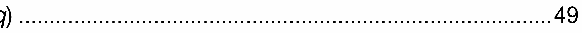
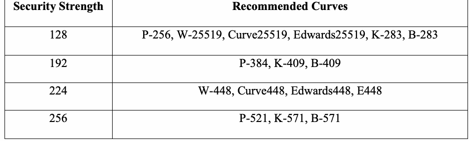
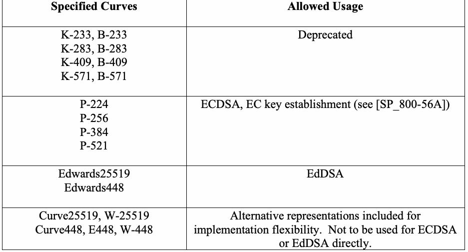

NIST Special Publication · PDF 原文抽出
Recommendations for Discrete Logarithm-based Cryptography: Elliptic Curve Domain Parameters
離散対数ベース暗号の推奨事項：楕円曲線ドメインパラメータ
NIST SP 800-186（Recommendations for Discrete Logarithm-based Cryptography: Elliptic Curve Domain Parameters）の英文と日本語訳を段落ごとに並べた閲覧用ページです。米国政府での使用を推奨する楕円曲線を定め、新しいEdwards曲線や代替表現などのパラメータを示します。 翻訳は非公式です。要件の確認にはNIST の正式版 PDFを参照してください。
PDF から抽出した原文は原本との照合待ちです。
PDF p.19: 二段組の可能性があるため読み順を原本と照合してください
PDF p.21: 二段組の可能性があるため読み順を原本と照合してください
PDF p.23: 二段組の可能性があるため読み順を原本と照合してください
PDF p.24: 二段組の可能性があるため読み順を原本と照合してください
PDF p.26: 二段組の可能性があるため読み順を原本と照合してください
PDF p.27: 二段組の可能性があるため読み順を原本と照合してください
PDF p.28: 二段組の可能性があるため読み順を原本と照合してください
PDF p.29: 二段組の可能性があるため読み順を原本と照合してください
PDF p.33: 二段組の可能性があるため読み順を原本と照合してください
PDF p.34: 二段組の可能性があるため読み順を原本と照合してください
PDF p.41: 二段組の可能性があるため読み順を原本と照合してください
PDF p.42: 二段組の可能性があるため読み順を原本と照合してください
PDF p.44: 二段組の可能性があるため読み順を原本と照合してください
PDF p.45: 二段組の可能性があるため読み順を原本と照合してください
PDF p.59: 二段組の可能性があるため読み順を原本と照合してください
PDF p.61: 二段組の可能性があるため読み順を原本と照合してください
PDF p.63: 二段組の可能性があるため読み順を原本と照合してください
PDF p.64: 二段組の可能性があるため読み順を原本と照合してください
PDF p.65: 二段組の可能性があるため読み順を原本と照合してください
NIST Special Publication
NIST特別刊行物
未レビュー訳NIST SP 800-186
NIST SP 800-186
未レビュー訳Recommendations for Discrete Logarithm-based Cryptography:
離散対数ベース暗号に関する推奨事項：
未レビュー訳Elliptic Curve Domain Parameters
楕円曲線ドメインパラメータ
未レビュー訳Lily Chen Dustin Moody Karen Randall
Lily Chen、Dustin Moody、Karen Randall
未レビュー訳Andrew Regenscheid Angela Robinson
Andrew Regenscheid、Angela Robinson
未レビュー訳This publication is available free of charge from: https://doi.org/10.6028/NIST.SP.800-186
この刊行物は次のURLから無料で入手できます：https://doi.org/10.6028/NIST.SP.800-186
未レビュー訳NIST Special Publication
NIST特別刊行物
未レビュー訳NIST SP 800-186
NIST SP 800-186
未レビュー訳Recommendations for Discrete Logarithm-based Cryptography:
離散対数ベース暗号に関する推奨事項：
未レビュー訳Elliptic Curve Domain Parameters
楕円曲線ドメインパラメータ
未レビュー訳Lily Chen Dustin Moody
Lily Chen、Dustin Moody
未レビュー訳Andrew Regenscheid Angela Robinson Computer Security Division Information Technology Laboratory
Andrew Regenscheid、Angela Robinson、コンピュータセキュリティ部門、情報技術研究所
未レビュー訳Karen Randall Randall Consulting
Karen Randall、Randall Consulting
未レビュー訳This publication is available free of charge from: https://doi.org/10.6028/NIST.SP.800-186
この刊行物は次のURLから無料で入手できます：https://doi.org/10.6028/NIST.SP.800-186
未レビュー訳February 2023
2023年2月
未レビュー訳
米国商務省の紋章。盾と鷲をあしらった円形の紋章
U.S. Department of Commerce Gina M. Raimondo, Secretary
米国商務省 ジーナ・M・レモンド長官
未レビュー訳National Institute of Standards and Technology
米国国立標準技術研究所
未レビュー訳Laurie E. Locascio, NIST Director and Under Secretary of Commerce for Standards and Technology
ローリー・E・ロカシオ、NIST所長兼商務省標準技術担当次官
未レビュー訳Certain commercial entities, equipment, or materials may be identified in this document in order to describe an experimental procedure or concept adequately. Such identification is not intended to imply recommendation or endorsement by the National Institute of Standards and Technology (NIST), nor is it intended to imply that the entities, materials, or equipment are necessarily the best available for the purpose.
本書では、実験手順または概念を適切に説明するため、特定の商業事業体、機器、または材料を挙げる場合がある。これらを挙げることは、米国国立標準技術研究所（NIST）による推奨または承認を意味するものではなく、また、それらの事業体、材料、または機器が目的に最適であることを示すものでもない。
未レビュー訳There may be references in this publication to other publications currently under development by NIST in accordance with its assigned statutory responsibilities. The information in this publication, including concepts and methodologies, may be used by federal agencies even before the completion of such companion publications. Thus, until each publication is completed, current requirements, guidelines, and procedures, where they exist, remain operative. For planning and transition purposes, federal agencies may wish to closely follow the development of these new publications by NIST.
本刊行物には、NISTが所管する法的責任に従って現在策定中の他の刊行物への参照が含まれる場合がある。本刊行物に含まれる情報（概念や方法論を含む）は、関連刊行物が完成する前であっても連邦政府機関が使用できる。したがって、各刊行物が完成するまでは、既存の要件、ガイドライン、手順は引き続き有効である。計画および移行のため、連邦政府機関はNISTによるこれらの新しい刊行物の策定状況を綿密に確認するとよいであろう。
未レビュー訳Organizations are encouraged to review all draft publications during public comment periods and provide feedback to NIST. Many NIST cybersecurity publications, other than the ones noted above, are available at https://csrc.nist.gov/publications.
組織には、パブリックコメント期間中にすべての草案刊行物を確認し、NISTに意見を提出することが推奨される。上記以外のNISTサイバーセキュリティ刊行物の多くは、https://csrc.nist.gov/publications で入手できる。
Authority This publication has been developed by NIST in accordance with its statutory responsibilities under the Federal Information Security Modernization Act (FISMA) of 2014, 44 U.S.C. § 3551 et seq., Public Law (P.L.) 113-283. NIST is responsible for developing information security standards and guidelines, including minimum requirements for federal information systems, but such standards and guidelines shall not apply to national security systems without the express approval of appropriate federal officials exercising policy authority over such systems. This guideline is consistent with the requirements of the Office of Management and Budget (OMB) Circular A-130.
法的根拠 本刊行物は、2014年連邦情報セキュリティ近代化法（FISMA）、44 U.S.C. § 3551以降、およびPublic Law（P.L.）113-283に基づく法的責任に従ってNISTが作成した。NISTは、連邦情報システムの最低要件を含む情報セキュリティ標準およびガイドラインの策定を担う。ただし、そのような標準およびガイドラインは、当該システムに対する政策権限を行使する適切な連邦当局者の明示的な承認がない限り、国家安全保障システムには適用されない。本ガイドラインは、行政管理予算局（OMB）通達A-130の要件と整合している。
未レビュー訳Nothing in this publication should be taken to contradict the standards and guidelines made mandatory and binding on federal agencies by the Secretary of Commerce under statutory authority. Nor should these guidelines be interpreted as altering or superseding the existing authorities of the Secretary of Commerce, Director of the OMB, or any other federal official. This publication may be used by nongovernmental organizations on a voluntary basis and is not subject to copyright in the United States. Attribution would, however, be appreciated by NIST.
本刊行物のいかなる記述も、法的権限に基づき商務長官が連邦政府機関に義務付けた基準およびガイドラインに反するものと解釈してはならない。また、本ガイドラインを、商務長官、OMB長官、その他の連邦当局者の既存の権限を変更または置き換えるものと解釈してはならない。本刊行物は、政府機関以外の組織も任意に利用でき、米国では著作権の対象ではない。ただし、NISTへの出典表示を歓迎する。
NIST Technical Series Policies Copyright, Use, and Licensing Statements NIST Technical Series Publication Identifier Syntax
NIST技術シリーズの方針：著作権、使用およびライセンスに関する声明／NIST技術シリーズ刊行物識別子の表記法
未レビュー訳Publication History Approved by the NIST Editorial Review Board on 2022-09-07
刊行履歴 NIST編集審査委員会による承認日：2022-09-07
未レビュー訳How to Cite this NIST Technical Series Publication: Chen L, Moody D, Regenscheid A, Robinson A, Randall K (2023) Recommendations for Discrete Logarithm-based Cryptography: Elliptic Curve Domain Parameters. (National Institute of Standards and Technology, Gaithersburg, MD), NIST Special Publication (SP) NIST SP 800-186. https://doi.org/10.6028/NIST.SP.800-186
このNIST技術シリーズ刊行物の引用方法：Chen L、Moody D、Regenscheid A、Robinson A、Randall K（2023）『離散対数ベース暗号に関する推奨事項：楕円曲線ドメインパラメータ』。（米国国立標準技術研究所、メリーランド州ゲイサーズバーグ）、NIST特別刊行物（SP）NIST SP 800-186。https://doi.org/10.6028/NIST.SP.800-186
未レビュー訳Author ORCID iDs Lily Chen: 0000-0003-2726-4279 Dustin Moody: 0000-0002-4868-6684 Andrew Regenscheid: 0000-0002-3930-527X Angela Robinson: 0000-0002-1209-0379
著者のORCID iD Lily Chen：0000-0003-2726-4279、Dustin Moody：0000-0002-4868-6684、Andrew Regenscheid：0000-0002-3930-527X、Angela Robinson：0000-0002-1209-0379
未レビュー訳Contact Information sp800-186-comments@nist.gov
連絡先 sp800-186-comments@nist.gov
未レビュー訳National Institute of Standards and Technology Attn: Computer Security Division, Information Technology Laboratory 100 Bureau Drive (Mail Stop 8930) Gaithersburg, MD 20899-8930
米国国立標準技術研究所 宛先：コンピュータセキュリティ部門、情報技術研究所 100 Bureau Drive（Mail Stop 8930）、Gaithersburg, MD 20899-8930
未レビュー訳All comments are subject to release under the Freedom of Information Act (FOIA).
すべてのコメントは、情報公開法（FOIA）に基づく公開の対象である。
Abstract
概要
This Recommendation specifies the set of elliptic curves recommended for U.S. Government use. In addition to the previously recommended Weierstrass curves defined over prime fields and binary fields, this Recommendation includes two newly specified Edwards curves, which provide increased performance, side-channel resistance, and simpler implementation when compared to traditional curves. This Recommendation also specifies alternative representations for these new curves to allow more implementation flexibility. The new curves are interoperable with those specified by the Crypto Forum Research Group (CFRG) of the Internet Engineering Task Force (IETF).
本勧告は、米国政府による使用を推奨する楕円曲線の集合を規定する。素数体および二進体上に定義された従来推奨のWeierstrass曲線に加え、本勧告は新たに規定した2つのEdwards曲線を含む。これらは従来の曲線より性能が高く、サイドチャネル攻撃への耐性があり、実装が簡潔である。また、実装の柔軟性を高めるため、これらの新しい曲線の代替表現も規定する。新しい曲線は、Internet Engineering Task Force（IETF）のCrypto Forum Research Group（CFRG）が規定した曲線と相互運用可能である。
未レビュー訳Keywords
キーワード
未レビュー訳computer security; discrete logarithm-based groups; domain parameters; elliptic curve cryptography.
コンピュータセキュリティ、離散対数ベース群、ドメインパラメータ、楕円曲線暗号。
未レビュー訳Reports on Computer Systems Technology
コンピュータシステム技術に関する報告書
The Information Technology Laboratory (ITL) at the National Institute of Standards and Technology (NIST) promotes the U.S. economy and public welfare by providing technical leadership for the Nation’s measurement and standards infrastructure. ITL develops tests, test methods, reference data, proof of concept implementations, and technical analyses to advance the development and productive use of information technology. ITL’s responsibilities include the development of management, administrative, technical, and physical standards and guidelines for the cost-effective security and privacy of other than national security-related information in federal information systems. The Special Publication 800-series reports on ITL’s research, guidelines, and outreach efforts in information system security, and its collaborative activities with industry, government, and academic organizations.
米国国立標準技術研究所（NIST）の情報技術研究所（ITL）は、米国の計測・標準基盤に技術的リーダーシップを提供し、米国経済と公共の福祉を促進している。ITLは、情報技術の発展と有効活用を進めるため、試験、試験方法、参照データ、概念実証実装、および技術分析を開発する。ITLの責務には、連邦情報システムにおける国家安全保障関連以外の情報の費用対効果の高いセキュリティとプライバシーに関する管理的、運用的、技術的、物理的な標準およびガイドラインの策定が含まれる。SP 800シリーズは、情報システムセキュリティに関するITLの研究、ガイドライン、普及活動、および産業界、政府、学術機関との協働活動を報告するものである。
未レビュー訳Audience
対象読者
未レビュー訳This document is intended for implementers of cryptographic schemes that include the use of elliptic curve cryptography.
本書は、楕円曲線暗号を含む暗号方式の実装者を対象とする。
Conformance Testing
適合性試験
未レビュー訳Conformance testing for implementations of this Recommendation will be conducted within the framework of the Cryptographic Algorithm Validation Program (CAVP) and the Cryptographic Module Validation Program (CMVP). The requirements of this Recommendation are indicated by the word “shall.” Some of these requirements may be out of scope for CAVP or CMVP validation testing and are thus the responsibility of entities using, implementing, installing, or configuring applications that incorporate this Recommendation. Conformant implementations may perform procedures via an equivalent sequence of operations, provided that these include all cryptographic checks included with the specifications in this document. This is important because the checks are essential for the prevention of subtle attacks.
本勧告の実装に対する適合性試験は、暗号アルゴリズム検証プログラム（CAVP）および暗号モジュール検証プログラム（CMVP）の枠組みで実施される。本勧告の要件は「shall」（～しなければならない）という語で示される。これらの要件の一部はCAVPまたはCMVPの検証試験の範囲外となる場合があり、その場合、本勧告を組み込んだアプリケーションを使用、実装、設置または設定する組織が責任を負う。本勧告に適合する実装は、本書の仕様に含まれるすべての暗号学的チェックを備えていれば、それらと等価な操作列を用いて手順を実行してもかまわない。これらのチェックは巧妙な攻撃の防止に不可欠である。
未レビュー訳Patent Disclosure Notice
特許開示に関する通知
未レビュー訳NOTICE: ITL has requested that holders of patent claims whose use may be required for compliance with the guidance or requirements of this publication disclose such patent claims to ITL. However, holders of patents are not obligated to respond to ITL calls for patents and ITL has not undertaken a patent search in order to identify which, if any, patents may apply to this publication. As of the date of publication and following call(s) for the identification of patent claims whose use may be required for compliance with the guidance or requirements of this publication, no such patent claims have been identified to ITL. No representation is made or implied by ITL that licenses are not required to avoid patent infringement in the use of this publication.
通知：本刊行物の指針または要件への適合に必要となる可能性のある特許請求項を保有する者に対し、ITLはその特許請求項をITLへ開示するよう求めている。ただし、特許保有者にはITLの特許開示要請に応じる義務はなく、ITLも本刊行物に適用される可能性のある特許を特定するための調査を行っていない。刊行日現在、本刊行物の指針または要件への適合に必要となる可能性のある特許請求項について開示を求めた結果、ITLが特定したものはない。ITLは、本刊行物の使用時に特許侵害を回避するためのライセンスが不要であると表明または暗示するものではない。
未レビュー訳Table of Contents
目次
Executive Summary — 1
エグゼクティブサマリー — 1
未レビュー訳Introduction — 2
はじめに — 2
未レビュー訳Overview of Elliptic Curves — 4
楕円曲線の概要 — 4
未レビュー訳2.1.1. Curves in Short-Weierstrass Form — 4
2.1.1. ショート・ワイエルシュトラス形式の曲線 — 4
2.1.2. Montgomery Curves — 4
モンゴメリ曲線 — 4
未レビュー訳2.1.3. Twisted Edwards Curves — 5
ツイステッド・エドワーズ曲線 — 5
未レビュー訳2.2.1. Curves in Short-Weierstrass Form — 5
2.2.1. ショート・ワイエルシュトラス形式の曲線 — 5
Recommended Curves for U.S. Federal Government Use — 6
米国連邦政府での使用を推奨する曲線 — 6
3.1.1. Choice of Key Lengths — 6
鍵長の選択 — 6
未レビュー訳3.1.2. Choice of Underlying Fields — 6
3.1.2. 基礎体の選択 — 6
3.1.3. Choice of Basis for Binary Fields — 7
二元体の基底の選択 — 7
未レビュー訳3.1.4. Choice of Curves — 8
曲線の選択 — 8
未レビュー訳3.2.1. Weierstrass Curves — 9
ウィアストラス曲線 — 9
未レビュー訳3.2.2. Montgomery Curves — 15
モンゴメリ曲線 — 15
未レビュー訳3.2.3. Twisted Edwards Curves — 17
ツイステッド・エドワーズ曲線 — 17
未レビュー訳3.3.1. Koblitz Curves — 21
コブリッツ曲線 — 21
未レビュー訳3.3.2. Pseudorandom Curves — 24
疑似ランダム曲線 — 24
未レビュー訳References — 28
参考文献 — 28
未レビュー訳Appendix A. Details of Elliptic Curve Group Operations — 30
付録A. 楕円曲線の群演算の詳細 — 30
未レビュー訳A.1.1. Group Law for Weierstrass Curves — 30
A.1.1. ウィアストラス曲線の群演算則 — 30
未レビュー訳A.1.2. Group Law for Montgomery Curves — 30
A.1.2. モンゴメリ曲線の群演算則 — 30
未レビュー訳A.1.3. Group Law for Twisted Edwards Curves — 30
A.1.3. ツイステッド・エドワーズ曲線の群演算則 — 30
未レビュー訳A.2.1. Group Law for Weierstrass Curves — 31
A.2.1. ウィアストラス曲線の群演算則 — 31
未レビュー訳Appendix B. Relationships Between Curve Models — 32
付録B. 曲線モデル間の関係 — 32
未レビュー訳Appendix C. Generation Details for Recommended Elliptic Curves — 35
付録C. 推奨楕円曲線の生成詳細 — 35
未レビュー訳C.1.1. Implementation Security Criteria — 35
C.1.1. 実装セキュリティ基準 — 35
未レビュー訳C.2.1. Weierstrass Curves Over Prime Fields — 35
C.2.1. 素体上のウィアストラス曲線 — 35
未レビュー訳C.2.2. Montgomery Curves — 36
C.2.2. モンゴメリ曲線 — 36
未レビュー訳C.2.3. Twisted Edwards Curves — 37
C.2.3. ツイステッド・エドワーズ曲線 — 37
未レビュー訳C.2.4. Weierstrass Curves over Binary Fields — 37
C.2.4. 二元体上のウィアストラス曲線 — 37
未レビュー訳C.3.1. Generation of Pseudorandom Curves (Prime Case) — 38
C.3.1. 疑似ランダム曲線の生成（素体の場合） — 38
C.3.2. Verification of Curve Generation (Prime Case) — 39
C.3.2. 曲線生成の検証（素体の場合） — 39
C.3.3. Generation of Pseudorandom Curves (Binary Case) — 40
C.3.3. 疑似ランダム曲線の生成（二元体の場合） — 40
C.3.4. Verification of Curve Generation (Binary Case) — 41
C.3.4. 曲線生成の検証（二元体の場合） — 41
未レビュー訳Appendix D. Elliptic Curve Routines — 42
付録D. 楕円曲線ルーチン — 42
未レビュー訳D.1.1. Non-binary Curves in Short-Weierstrass Form — 42
D.1.1. 短ウィアストラス形式の非二元曲線 — 42
未レビュー訳D.1.2. Montgomery Curves — 42
D.1.2. モンゴメリ曲線 — 42
未レビュー訳D.1.3. Twisted Edwards Curves — 43
D.1.3. ツイステッド・エドワーズ曲線 — 43
未レビュー訳D.1.4. Binary Curves in Short-Weierstrass Form — 44
D.1.4. 短ウィアストラス形式の二元曲線 — 44
D.2.1. Prime Curves in Short-Weierstrass Form — 45
D.2.1. 短ウィアストラス形式の素体上の曲線 — 45
未レビュー訳D.2.2. Binary Curves in Short-Weierstrass Form — 46
D.2.2. 短ウィアストラス形式の二元曲線 — 46
未レビュー訳Appendix E. Auxiliary Functions — 48
付録E. 補助関数 — 48

目次の断片。付録E.1「二元体における平方根の計算」の行末（p.48）。PDF p.9の全体画像で該当行と確認。
目次の断片。付録E.3「非二元体 GF(q) における平方根の計算」の行（p.48）。PDF p.9の全体画像で該当行と確認。

目次の断片。付録E.4「GF(q) における逆元の計算」の行末（p.49）。PDF p.9の全体画像で該当行と確認。
Appendix F. Data Conversion — 50
付録F. データ変換 — 50
未レビュー訳Appendix G. Implementation Aspects — 52
付録G. 実装上の考慮事項 — 52
未レビュー訳G.1.1. Curve P-224 — 52
G.1.1. 曲線P-224 — 52
G.1.2. Curve P-256 — 52
G.1.2. 曲線P-256 — 52
未レビュー訳G.1.3. Curve P-384 — 53
G.1.3. 曲線P-384 — 53
未レビュー訳G.1.4. Curve P-521 — 54
G.1.4. 曲線P-521 — 54
未レビュー訳G.1.5. Curve25519 — 54
G.1.5. Curve25519 — 54
G.1.6. Curve448 — 54
G.1.6. Curve448 — 54
G.3.1. Normal Bases — 57
G.3.1. 正規基底 — 57
G.3.2. Polynomial Basis to Normal Basis Conversion — 59
G.3.2. 多項式基底から正規基底への変換 — 59
未レビュー訳G.3.3. Normal Basis to Polynomial Basis Conversion — 59
G.3.3. 正規基底から多項式基底への変換 — 59
未レビュー訳Appendix H. Other Allowed Elliptic Curves — 61
付録H. その他の許容される楕円曲線 — 61
未レビュー訳Appendix I. List of Symbols, Abbreviations, and Acronyms — 62
付録I. 記号、略語および頭字語一覧 — 62
未レビュー訳Appendix J. Glossary — 64
付録J. 用語集 — 64
未レビュー訳List of Tables
表一覧
未レビュー訳Table 1. Approximate Security Strength of the Recommended Curves — 6
表1. 推奨曲線のおおよそのセキュリティ強度 — 6
未レビュー訳Table 2. Allowed Usage of the Specified Curves — 7
表2. 規定された曲線の許可用途 — 7
未レビュー訳Acknowledgments
謝辞
The authors of NIST SP 800-186—Lily Chen, Dustin Moody, Andrew Regenscheid, Karen Randall, and Angela Robinson—wish to thank Rene Struik, Rich Davis, and Scott Simon for their contributions to this document. The authors also acknowledge and appreciate colleagues who reviewed earlier versions of this document, as well as the support from public and private sectors whose constructive and beneficial comments greatly enhanced the utility of this publication.
NIST SP 800-186の著者であるLily Chen、Dustin Moody、Andrew Regenscheid、Karen Randall、Angela Robinsonは、本書への貢献に対しRene Struik、Rich Davis、Scott Simonに謝意を表する。また、以前の版をレビューした同僚の協力に感謝するとともに、本刊行物の有用性を大きく高めた建設的で有益な意見を寄せた官民両部門からの支援にも謝意を表する。
Executive Summary
エグゼクティブサマリー
未レビュー訳This Recommendation specifies the set of elliptic curves recommended for U.S. Government use. It includes: − Specification of elliptic curves previously specified in Federal Information Processing Standard (FIPS) 186-4, Digital Signature Schemes [FIPS_186-4]. This includes both elliptic curves defined over a prime field and curves defined over a binary field. Although the specifications for elliptic curves over binary fields are included, these curves are now
本勧告は、米国政府での使用を推奨する楕円曲線の集合を規定する。これには次が含まれる。— 連邦情報処理標準（FIPS）186-4「デジタル署名方式」[FIPS_186-4]で以前に規定された楕円曲線の仕様。素体上に定義された楕円曲線と二元体上に定義された曲線の双方を含む。二元体上の曲線の仕様も含まれているが、これらの曲線は現在
未レビュー訳deprecated. It is strongly recommended to use the other prime curves. − Specification of new Montgomery and Edwards curves, which are detailed in Elliptic Curves for Security [RFC_7748]. − A reference for the Brainpool curves specified in [RFC_5639]. These curves are allowed to be used for interoperability reasons (i.e., to accommodate inclusion in FIPS-validated products). − A reference for the curve secp256k1 specified in [SEC_2]. This curve is allowed to be used for blockchain-related applications. − Elliptic curves in FIPS 186-4 that do not meet the current bit security requirements put forward in NIST Special Publication (SP) 800-57, Part 1, Recommendation for Key Management: Part 1 – General [SP_800-57], are now legacy-use. They may be used to process already protected information (e.g., decrypt or verify) but not to apply protection to information (e.g., encrypt or sign). Also see NIST SP 800-131A, Transitions: Recommendation for Transitioning the Use of Cryptographic Algorithms and Key Lengths [SP_800-131A].
非推奨である。他の素体上の曲線を使用することを強く推奨する。— [RFC_7748]「セキュリティのための楕円曲線」で詳述されている、新しいモンゴメリ曲線およびエドワーズ曲線の仕様。— [RFC_5639]で規定されているBrainpool曲線への参照。これらの曲線は、相互運用性のため（すなわち、FIPS検証済み製品への組込みに対応するため）に使用が認められている。— [SEC_2]で規定されている曲線secp256k1への参照。この曲線はブロックチェーン関連の用途で使用が認められている。— FIPS 186-4の楕円曲線のうち、NIST特別刊行物（SP）800-57第1部「鍵管理に関する勧告：第1部—一般」[SP_800-57]に示された現行のビットセキュリティ要件を満たさないものは、現在、レガシー用途に限られる。これらは、すでに保護された情報を処理する場合（例：復号または検証）には使用できるが、情報に保護を適用する場合（例：暗号化または署名）には使用できない。NIST SP 800-131A「移行：暗号アルゴリズムおよび鍵長の使用移行に関する勧告」[SP_800-131A]も参照されたい。
未レビュー訳This Recommendation provides details regarding the group operations for each of the specified elliptic curves and the relationship between the various curve models, allowing for flexibility regarding the use of curves most suitable in particular applications. It also gives cryptographic criteria for the selection of suitable elliptic curves and provides more details on finite field arithmetic and data representation than were available in FIPS 186-4.
本勧告は、指定された各楕円曲線の群演算と、さまざまな曲線モデル間の関係を詳述し、個々の用途に最も適した曲線を柔軟に使用できるようにする。また、適切な楕円曲線を選択するための暗号学的基準を示し、FIPS 186-4で示されていた内容より詳しい有限体演算およびデータ表現も提供する。
Introduction
はじめに
未レビュー訳Background
背景
未レビュー訳Elliptic curve cryptography (ECC) has uses in applications involving digital signatures (e.g., Elliptic Curve Digital Signature Algorithm [ECDSA]) and key agreement schemes (e.g., Elliptic Curve Diffie-Hellman [ECDH]). Historically, elliptic curves have usually been expressed in short Weierstrass format. However, curves that are expressed using a different format, such as Montgomery curves and twisted Edwards curves, have gone from garnering academic interest to being deployed in a number of applications. These curves can provide better performance and increased side-channel resistance. A number of standards-setting organizations besides NIST (e.g., ANSI X9F, ISO, SEC, and IETF) have developed elliptic curve standards. In June 2015, NIST organized an ECC workshop to discuss the design of alternate elliptic curves that are secure, efficient, and easy to use while also being resilient to a wide range of implementation attacks. Subsequently, NIST solicited public comments on the Digital Signature Standard FIPS 186-4, requesting specific feedback regarding the digital signature schemes in FIPS 186 as well as possible new recommended elliptic curves. This publication is the result of that input.
楕円曲線暗号（ECC）は、デジタル署名（例：楕円曲線デジタル署名アルゴリズム［ECDSA］）や鍵共有方式（例：楕円曲線ディフィー・ヘルマン［ECDH］）に関する用途で使われる。従来、楕円曲線は通常、短ウィアストラス形式で表されてきた。しかし、モンゴメリ曲線やツイステッド・エドワーズ曲線など、異なる形式で表される曲線は、学術的関心の対象から、複数の用途に実装される段階へと移行してきた。これらの曲線は、性能の向上とサイドチャネル攻撃への耐性強化をもたらし得る。NIST以外にも、標準化団体（例：ANSI X9F、ISO、SEC、IETF）が楕円曲線標準を策定している。2015年6月、NISTは、安全で効率的かつ使いやすく、幅広い実装攻撃にも耐性を持つ代替楕円曲線の設計を検討するため、ECCワークショップを開催した。その後NISTは、デジタル署名標準FIPS 186-4について、FIPS 186のデジタル署名方式および新たに推奨し得る楕円曲線に関する具体的な意見を求めて公開コメントを募集した。本刊行物は、寄せられた意見を踏まえて作成された。
未レビュー訳Purpose and Scope
目的と適用範囲
未レビュー訳This Recommendation provides updated specifications of elliptic curves that are appropriate for use by the U.S. Federal Government for digital signatures. It is intended for use in conjunction with other NIST publications, such as NIST SP 800-56A, Recommendation for Pair-Wise Key-Establishment Schemes Using Discrete Logarithm-Based Cryptography [SP_800-56A]; FIPS 186-5, Digital Signature Standard [FIPS_186-5]; and related specifications. The key pairs specified here are used for digital signature generation and verification or key agreement only and should not be used for any other purposes. This Recommendation is intended to provide sufficient information for a vendor to implement ECC using asymmetric algorithms in FIPS 140-3-validated modules.
本勧告は、米国連邦政府がデジタル署名に使用するのに適した楕円曲線の仕様を更新して示す。NIST SP 800-56A「離散対数ベース暗号を用いたペアワイズ鍵確立方式に関する勧告」[SP_800-56A]、FIPS 186-5「デジタル署名標準」[FIPS_186-5]など、他のNIST刊行物および関連仕様と併用することを意図している。ここで規定する鍵ペアは、デジタル署名の生成と検証、または鍵共有のみに使用し、その他の目的には使用すべきではない。本勧告は、ベンダーがFIPS 140-3検証済みモジュールで非対称アルゴリズムを用いるECCを実装するために十分な情報を提供することを目的とする。
未レビュー訳Document Organization
文書の構成
未レビュー訳The remainder of this document includes the following sections and appendices:
本書の残りの部分は、次の節と付録で構成される。
•Section 2: Overview of Elliptic Curves – This section details the different curve models being used with this Recommendation, including notational conventions.
•第2節：楕円曲線の概要 — 本節では、本勧告で用いるさまざまな曲線モデルと表記規則を詳述する。
•Section 3: Recommended Curves for Federal Government Use – This section highlights the domain parameters for all elliptic curves recommended for U.S. Government use.
•第3節：連邦政府での使用を推奨する曲線 — 本節では、米国政府での使用を推奨するすべての楕円曲線のドメインパラメータを示す。
未レビュー訳•References – This section contains information on the documents referenced in the publication.
•参考文献 — 本刊行物で参照した文書に関する情報を記載する。
•Appendix A: Details of Elliptic Curve Group Operations – This appendix discusses the group laws for each of the different curve models specified in this Recommendation.
•付録A：楕円曲線の群演算の詳細 — 本付録では、本勧告で規定する各曲線モデルの群演算則について説明する。
未レビュー訳•Appendix B: Relationship Between Curve Models – This appendix details how different curve models are related and how the coordinates of a point and the domain parameters of a curve in one curve model relate to those in another curve model.
•付録B：曲線モデル間の関係 — 本付録では、異なる曲線モデル間の関係、およびある曲線モデルにおける点の座標と曲線のドメインパラメータが、別の曲線モデルにおける対応する値とどのように関係するかを詳述する。
未レビュー訳•Appendix C: Generation Details for Recommended Elliptic Curves – This appendix describes the cryptographic criteria that guided the selection of suitable elliptic curves and the process by which one of many such suitable elliptic curves is selected.
•付録C：推奨楕円曲線の生成詳細 — 本付録では、適切な楕円曲線の選択を導いた暗号学的基準と、候補となる複数の適切な楕円曲線から1つを選択する手順を説明する。
未レビュー訳•Appendix D: Elliptic Curve Routines – This appendix details elementary routines for elliptic curves, such as verification that these curves are indeed well-formed, and point compression.
•付録D：楕円曲線ルーチン — 本付録では、曲線が正しく定義されていることの検証や点圧縮など、楕円曲線の基本的なルーチンを詳述する。
未レビュー訳•Appendix E: Auxiliary Functions – This appendix covers mathematical functions that are used to describe elliptic curve operations and representation conversions, such as inversion and taking square roots.
•付録E：補助関数 — 本付録では、楕円曲線演算や表現変換（逆元の計算や平方根の計算など）を記述するために使われる数学関数を扱う。
未レビュー訳•Appendix F: Data Conversion – This appendix documents the detailed procedure for the conversion of data elements, such as integers, field elements, bit strings, octet strings, and elliptic curve points.
•付録F：データ変換 — 本付録では、整数、体要素、ビット列、オクテット列、楕円曲線上の点などのデータ要素を変換する詳細な手順を記載する。
•Appendix G: Implementation Aspects – This appendix discusses the various implementation aspects of binary curves, including conversions between different field representations. For prime curves, it indicates how the special form of the underlying prime field aids in efficient modular reduction.
•付録G：実装上の考慮事項 — 本付録では、異なる体表現間の変換を含む、二元曲線のさまざまな実装上の考慮事項を説明する。素体上の曲線については、基礎となる素体の特殊な形式が効率的な剰余還元にどう役立つかを示す。
•Appendix H: Other Allowed Elliptic Curves – This appendix lists other elliptic curves that may be used for interoperability reasons.
•付録H：その他の許容される楕円曲線 — 本付録では、相互運用性のために使用できるその他の楕円曲線を列挙する。
•Appendix I: Symbols, Abbreviations, and Acronyms
•付録I：記号、略語および頭字語
•Appendix J: Glossary
•付録J：用語集
未レビュー訳Overview of Elliptic Curves
楕円曲線の概要
未レビュー訳Let E be an elliptic curve defined over the field GF(q). The cardinality |E| of the curve is equal to the number of points defined over GF(q) on the curve and satisfies the equation |E| = (q+1)−t, where |t| ≤ 2 . Thus, |E| and q have the same order of magnitude.
Eを体GF(q)上で定義された楕円曲線とする。曲線Eの位数|E|は、GF(q)上で曲線上に定義される点の数に等しく、等式 |E| = (q+1)−t を満たす。ここで |t| ≤ 2√q である。したがって、|E|とqは同程度の大きさである。
未レビュー訳�𝑞𝑞
原文のみ
The integer t is called the trace of E over the field GF(q). The points on E form a commutative group under addition (for the group law for each curve form, see Appendix A). Any point P on the curve is the generator of a cyclic subgroup 〈P〉 = {kP | k = 0, 1, 2, …} of E. The order of P in E is defined as the cardinality of 〈P〉. A curve is cyclic if it is generated by some point on E. All curves of prime order are cyclic, while all curves of order |E| = h⋅n, where n is a large prime number and h is a small number, have a large cyclic subgroup of prime order n. If R is a point on the curve that is also contained in 〈P〉, there is a unique integer k in the interval [0, l−1] so that R = kP, where l is the order of P in E. This number is called the discrete logarithm of R to the base P. The discrete logarithm problem is the problem of finding the discrete logarithm of R to the base P for any two points P and R on the curve, if such a number exists. A quadratic twist of E is a curve E’ related to E, with cardinality |E’| = (q+1)+t. If E is a curve in one of the curve forms specified in this Recommendation, a quadratic twist of this curve can be expressed using the same curve model, although with different curve parameters.
整数tは、体GF(q)上のEのトレースと呼ばれる。E上の点は、加法に関して可換群を成す（各曲線形式の群演算則については付録Aを参照）。曲線上の任意の点Pは、巡回部分群〈P〉 = {kP | k = 0, 1, 2, …}を生成する。EにおけるPの位数は、〈P〉の濃度として定義される。E上のある点によって生成される曲線を巡回曲線という。素数位数の曲線はすべて巡回である。一方、位数|E| = h⋅n（nは大きな素数、hは小さな数）の曲線は、位数nの大きな巡回部分群を持つ。Rが曲線上の点であり、かつ〈P〉にも含まれる場合、R = kPとなる区間[0, l−1]内の整数kは一意に定まる。ここでlはEにおけるPの位数である。この数を、底Pに対するRの離散対数と呼ぶ。離散対数問題とは、そのような数が存在する場合に、曲線上の任意の2点P、Rについて底Pに対するRの離散対数を求める問題である。Eの二次ツイストとは、Eに関連し、位数|E′| = (q+1)+tを持つ曲線E′である。本勧告で規定されたいずれかの曲線形式に属するEの二次ツイストは、パラメータは異なるものの、同じ曲線モデルで表現できる。
未レビュー訳Non-binary Curves
非二元曲線
未レビュー訳2.1.1. Curves in Short-Weierstrass Form
2.1.1. 短ウィアストラス形式の曲線
Let GF(q) denote the finite field with q elements, where q is an odd prime power and is not divisible by three. Let W be the Weierstrass curve with the defining equation y2 = x3 + a x + b,
GF(q)をq個の要素を持つ有限体とする。qは3で割り切れない奇素数冪である。W_{a,b}を定義式 y² = x³ + ax + b で定義されるウィアストラス曲線とする。
未レビュー訳a,b
原文のみ
where a and b are elements of GF(q) with 4 a3 + 27 b2 ≠ 0. When selecting curve parameters, a Seed value may be used to generate the parameters a and b as described in Appendix C.2.1.1. The points of W are the ordered pairs (x, y) whose coordinates are elements of GF(q) and that
ここでaおよびbはGF(q)の要素であり、4a³ + 27b² ≠ 0である。曲線パラメータの選択では、付録C.2.1.1に記載のとおり、Seed値を用いてaおよびbを生成してもよい。W_{a,b}上の点は、座標がGF(q)の要素である順序対(x, y)であり、
未レビュー訳a,b
原文のみ
satisfy the defining equation (i.e., the affine points) together with the special point ∅ (the “point at infinity”). This set forms a group under the operation of addition on elliptic curves via the “chord-and-tangent” rule, where the point at infinity serves as the identity element. See Appendix A.1.1 for details of the group operation.
定義式を満たす点（すなわちアフィン点）と、特別な点∅（「無限遠点」）から成る。この集合は、楕円曲線上の加法演算における「弦と接線の規則」によって群を成し、無限遠点は単位元として機能する。群演算の詳細は付録A.1.1を参照されたい。
未レビュー訳2.1.2. Montgomery Curves
2.1.2. モンゴメリ曲線
Let GF(q) denote the finite field with q elements, where q is an odd prime power. Let M be the
GF(q)をq個の要素を持つ有限体とする。qは奇素数冪である。M_{A,B}を
未レビュー訳A,B
原文のみ
Montgomery curve with defining equation B v2 = u (u2 + A u + 1), where A and B are elements of GF(q) with A ≠ ± 2 and B ≠ 0. The points of M are the ordered pairs (u, v) whose A,B coordinates are elements of GF(q) and that satisfy the defining equation (i.e., the affine points) together with the special point ∅ (the “point at infinity”). This set forms a group under the operation of addition on elliptic curves via the “chord-and-tangent” rule, where the point at infinity serves as the identity element. See Appendix A.1.2 for details of the group operation.
モンゴメリ曲線とし、その定義式を Bv² = u(u² + Au + 1) とする。ここでAおよびBはGF(q)の要素であり、A ≠ ±2かつB ≠ 0である。M_{A,B}上の点は、座標がGF(q)の要素である順序対(u, v)であり、定義式を満たす点（すなわちアフィン点）と、特別な点∅（「無限遠点」）から成る。この集合は、楕円曲線上の加法演算における「弦と接線の規則」によって群を成し、無限遠点が単位元となる。群演算の詳細は付録A.1.2を参照されたい。
未レビュー訳2.1.3. Twisted Edwards Curves
2.1.3. ツイステッド・エドワーズ曲線
Let GF(q) denote the finite field with q elements, where q is an odd prime power. Let E be the
GF(q)をq個の要素を持つ有限体とする。qは奇素数冪である。E_{a,d}を
未レビュー訳a,d
原文のみ
twisted Edwards curve with defining equation a x2 + y2 = 1+ d x2 y2, where a and d are elements of GF(q) with a, d ≠ 0, a ≠ d, and a is a square in GF(q) while d is not. The points of E are the
定義式 ax² + y² = 1 + dx²y² で定義されるツイステッド・エドワーズ曲線とする。ここでaおよびdはGF(q)の要素であり、a,d ≠ 0、a ≠ dである。また、aはGF(q)の平方数であるが、dは平方数ではない。E_{a,d}上の点は
未レビュー訳a,d
原文のみ
ordered pairs (x, y) whose coordinates are elements of GF(q) and that satisfy the defining equation (i.e., the affine points). It can be shown that this set forms a group under the operation addition, where the point (0, 1) serves as the identity element. The addition formulae are complete, meaning that the formulae work for all inputs on the curve. See Appendix A.1.3 for details of the group operation. An Edwards curve is a twisted Edwards curve with a = 1.
座標がGF(q)の要素である順序対(x, y)であり、定義式を満たす（すなわちアフィン点）。この集合は加法演算に関して群を成し、点(0, 1)が単位元となる。加法公式は完全であり、曲線上のすべての入力に対して機能する。群演算の詳細は付録A.1.3を参照されたい。エドワーズ曲線とは、a = 1であるツイステッド・エドワーズ曲線である。
未レビュー訳Binary Curves
二元曲線
未レビュー訳2.2.1. Curves in Short-Weierstrass Form
2.2.1. 短ウィアストラス形式の曲線
Let GF(q) denote the finite field with q elements, where q = 2m. Let B be the Weierstrass curve
GF(q)をq個の要素を持つ有限体とし、q = 2ᵐとする。B_{a,b}をウィアストラス曲線とする。
未レビュー訳a,b
原文のみ
with defining equation y2 + x y = x3 + a x2 + b, where a and b are elements of GF(q) with b ≠ 0. The points of B are the ordered pairs (x, y) whose coordinates are elements of GF(q) and that
その定義式は y² + xy = x³ + ax² + b である。ここでaおよびbはGF(q)の要素であり、b ≠ 0である。B_{a,b}上の点は、座標がGF(q)の要素である順序対(x, y)であり、
未レビュー訳a,b
原文のみ
satisfy the defining equation (i.e., the affine points) together with the special point ∅ (the “point at infinity”). This set forms a group under the operation of addition on elliptic curves via the “chord-and-tangent” rule, where the point at infinity serves as the identity element. See Appendix A.2.1 for details of the group operation.
定義式を満たす点（すなわちアフィン点）と、特別な点∅（「無限遠点」）から成る。この集合は、楕円曲線上の加法演算における「弦と接線の規則」によって群を成し、無限遠点は単位元として機能する。群演算の詳細は付録A.2.1を参照されたい。
未レビュー訳Recommended Curves for U.S. Federal Government Use
米国連邦政府での使用を推奨する曲線
未レビュー訳This section specifies the elliptic curves recommended for U.S. Federal Government use and contains choices for the private key length and underlying fields. This includes elliptic curves over prime fields (Section 3.2) and elliptic curves over binary fields (Section 3.3), where each curve takes one of the forms described in Section 3 (referred to as “Type” below). Each recommended curve is uniquely defined by its domain parameters D, which indicate the field GF(q) over which the elliptic curve is defined, the parameters of its defining equation, and principal parameters, such as the cofactor h of the curve, the order n of its prime-order subgroup, and a designated point G on the curve of order n (i.e., the “base point”). In the case
本節では、米国連邦政府での使用を推奨する楕円曲線を規定し、秘密鍵長と基礎体の選択肢を示す。これには、素体上の楕円曲線（第3.2節）と二元体上の楕円曲線（第3.3節）が含まれ、各曲線は第3節に記載された形式のいずれかを取る（以下「Type」と呼ぶ）。推奨される各曲線は、そのドメインパラメータDによって一意に定義される。Dは、楕円曲線が定義される体GF(q)、その定義式のパラメータ、ならびに曲線の余因子h、素数位数部分群の位数n、位数nの曲線上の指定点G（すなわち「基点」）などの主要パラメータを示す。GF(q)が二元体である場合（q = 2ᵐ）には、
未レビュー訳, the
その
未レビュー訳domain parameters also include a description of the representation chosen for GF(q). 𝑚𝑚
ドメインパラメータには、GF(q)について選択した表現方法の説明も含まれる。
未レビュー訳𝑞𝑞 = 2
原文のみ
For details regarding the generation method of the elliptic curves, see Appendix C.
楕円曲線の生成方法の詳細については、付録Cを参照されたい。
未レビュー訳Choices of Key Lengths, Underlying Fields, Curves, and Base Points
鍵長、基礎体、曲線および基点の選択
未レビュー訳3.1.1. Choice of Key Lengths
3.1.1. 鍵長の選択
The principal parameters for elliptic curve cryptography are the elliptic curve E and a designated point G on E called the base point. The base point has order n, which is a large prime. The number of points on the curve is h⋅n for some integer h (the cofactor), which is not divisible by n. For efficiency reasons, it is desirable for the cofactor to be small. All of the curves given below have cofactors 1, 2, 4, or 8. As a result, the private and public keys for a curve are approximately the same length.
楕円曲線暗号の主要パラメータは、楕円曲線Eと、E上の基点と呼ばれる指定点Gである。基点の位数nは大きな素数である。曲線上の点の数は、ある整数h（余因子）に対するh⋅nであり、hはnで割り切れない。効率上、余因子は小さいことが望ましい。以下に示す曲線の余因子はすべて1、2、4または8である。そのため、同じ曲線に対する秘密鍵と公開鍵の長さはおおむね等しい。
未レビュー訳3.1.2. Choice of Underlying Fields
3.1.2. 基礎体の選択
For each key length, two kinds of fields are provided:
各鍵長について、次の2種類の体が用意されている。
1.A prime field is the field GF(p), which contains a prime number p of elements. The elements of this field are the integers modulo p, and the field arithmetic is implemented in terms of the arithmetic of integers modulo p.
1.素体GF(p)は、要素数が素数pである体である。この体の要素は法pでの整数であり、体演算は法pでの整数演算として実装される。
未レビュー訳2.A binary field is the field GF(2m), which contains 2m elements for some m (called the degree of the field). The elements of this field are the bit strings of length m, and the field arithmetic is implemented in terms of operations on the bits.
2.二元体GF(2ᵐ)は、あるm（体の次数と呼ぶ）について2ᵐ個の要素を持つ体である。この体の要素は長さmのビット列であり、体演算はビットに対する演算として実装される。
未レビュー訳The approximate security strengths for the elliptic curves specified in this document are given in Table 1. The security strength of an elliptic curve is directly related to the order of the basepoint. In general, if an elliptic curve has a basepoint of order n, then the security strength will be approximately one half of the bit length of n.
本書で規定する楕円曲線のおおよそのセキュリティ強度を表1に示す。楕円曲線のセキュリティ強度は、基点の位数に直接関係する。一般に、基点の位数がnである楕円曲線のセキュリティ強度は、nのビット長のおよそ半分となる。
Table 1. Approximate Security Strength of the Recommended Curves
表1. 推奨曲線のおおよそのセキュリティ強度
未レビュー訳| セキュリティ強度 | 推奨曲線 |
| 112 | P-224、K-233、B-233 |
| Security Strength | Recommended Curves |
| 128 | P-256, W-25519, Curve25519, Edwards25519, K-283, B-283 |
| 192 | P-384, K-409, B-409 |
| 224 | W-448, Curve448, Edwards448, E448 |
| 256 | P-521, K-571, B-571 |
原本PDFの抜粋画像

| セキュリティ強度 | 推奨曲線 |
| 128 | P-256、W-25519、Curve25519、Edwards25519、K-283、B-283 |
| 192 | P-384、K-409、B-409 |
| 224 | W-448、Curve448、Edwards448、E448 |
| 256 | P-521、K-571、B-571 |
Elliptic curves in FIPS 186-4 that do not meet the current bit security requirements put forward in NIST SP 800-57, Part 1, Recommendation for Key Management: Part 1 – General [SP_800-57], are now legacy-use. They may be used to process already protected information (e.g., decrypt or verify) but not to apply protection to information (e.g., encrypt or sign). Also see NIST SP 800-131A, Transitions: Recommendation for Transitioning the Use of Cryptographic Algorithms and Key Lengths [SP_800-131A]. Each elliptic curve specified in this recommendation is allowed for specific NIST approved cryptographic functions. The allowed usages for each curve are summarized in Table 2.
FIPS 186-4で規定された楕円曲線のうち、NIST SP 800-57第1部「鍵管理に関する勧告：第1部—一般」[SP_800-57]に示された現行のビットセキュリティ要件を満たさないものは、現在、レガシー用途に限られる。これらは、すでに保護された情報の処理（例：復号または検証）には使用できるが、情報への保護の適用（例：暗号化または署名）には使用できない。NIST SP 800-131A「移行：暗号アルゴリズムおよび鍵長の使用移行に関する勧告」[SP_800-131A]も参照されたい。本勧告で規定する各楕円曲線は、特定のNIST承認済み暗号機能での使用が認められている。各曲線の許可用途を表2にまとめる。
未レビュー訳Table 2. Allowed Usage of the Specified Curves
表2. 規定された曲線の許可用途
未レビュー訳| Specified Curves | Allowed Usage |
| K-233, B-233 K-283, B-283 K-409, B-409 K-571, B-571 | Deprecated |
| P-224 P-256 P-384 P-521 | ECDSA, EC key establishment (see [SP_800-56A]) |
| Edwards25519 Edwards448 | EdDSA |
| Curve25519, W-25519 Curve448, E448, W-448 | Alternative representations included for implementation flexibility. Not to be used for ECDSA or EdDSA directly. |
原本PDFの抜粋画像

| 規定曲線 | 許可用途 |
| K-233、B-233 K-283、B-283 K-409、B-409 K-571、B-571 | 非推奨 |
| P-224 P-256 P-384 P-521 | ECDSA、EC鍵確立（[SP_800-56A]を参照） |
| Edwards25519 Edwards448 | EdDSA |
| Curve25519、W-25519 Curve448、E448、W-448 | 実装の柔軟性のために含まれる代替表現。ECDSAまたはEdDSAへ直接使用しないこと。 |
3.1.3. Choice of Basis for Binary Fields
3.1.3. 二元体の基底の選択
To describe the arithmetic of a binary field, it is first necessary to specify how a bit string is to be interpreted. This is referred to as choosing a basis for the field. There are two common types of bases: a polynomial basis and a normal basis.
二元体の演算を記述するには、まずビット列をどのように解釈するかを定める必要がある。これは、体の基底を選択することに相当する。基底には、一般に多項式基底と正規基底の2種類がある。
未レビュー訳•A polynomial basis is specified by an irreducible polynomial modulo 2 called the field polynomial. The bit string (a … a a a ) is used to represent the polynomial m–1 2 1 0
•多項式基底は、2を法とする既約多項式（体多項式と呼ぶ）によって定められる。ビット列(aₘ₋₁ … a₂ a₁ a₀)は、次の多項式を表すために用いる。
未レビュー訳… a t m–1 + + a t2 + a t + a
aₘ₋₁ tᵐ⁻¹ + … + a₂ t² + a₁ t + a₀
未レビュー訳m–1
原文のみ
2 1 0
原文のみ
over GF(2). The field arithmetic is implemented as polynomial arithmetic modulo p(t), where p(t) is the field polynomial.
GF(2)上の多項式である。体演算は、体多項式p(t)を法とする多項式演算として実装される。
未レビュー訳•A normal basis is specified by an element θof a particular kind. The bit string (a a a 0 1 2 … a ) is used to represent the element m–1
•正規基底は、特定の性質を持つ要素θによって定められる。ビット列(a₀ a₁ a₂ … aₘ₋₁)は、次の要素を表すために用いる。
未レビュー訳… 2
原文のみ
m–1
原文のみ
a θ+ a θ2 + a θ2
a₀θ + a₁θ² + a₂θ^(2²) + … + aₘ₋₁θ^(2^(m−1))
未レビュー訳+ a θ2
原文のみ
原文のみ
原文のみ
0 1 2
原文のみ
m–1
原文のみ
Normal basis field arithmetic is not easy to describe or efficient to implement in general except for a special class called Type T low-complexity normal bases. For a given field of degree m, the choice of T specifies the basis and the field arithmetic (see Appendix G.3).
正規基底による体演算は、Type T低複雑度正規基底と呼ばれる特殊なクラスを除き、一般には記述も効率的な実装も容易ではない。次数mの体では、Tの選択によって基底と体演算が定まる（付録G.3を参照）。
未レビュー訳There are many polynomial bases and normal bases from which to choose. The following procedures are commonly used to select a basis representation:
選択可能な多項式基底と正規基底には多くの種類がある。基底表現を選択する際は、一般に次の手順を用いる。
未レビュー訳•Polynomial Basis: If an irreducible trinomial tm + tk + 1 exists over GF(2), then the field polynomial p(t) is chosen to be the irreducible trinomial with the lowest-degree middle term tk. If no irreducible trinomial exists, then a pentanomial tm + ta + tb + tc + 1 is selected. The particular pentanomial chosen has the following properties: the second term ta has the lowest degree among all irreducible pentanomials of degree m; the third term tb has the lowest degree among all irreducible pentanomials of degree m with the second term ta; and the fourth term tc has the lowest degree among all irreducible pentanomials of degree m with the second term ta and third term tb.
•多項式基底：GF(2)上に既約三項式 tᵐ + tᵏ + 1 が存在する場合、中央項tᵏの次数が最小となる既約三項式を体多項式p(t)に選ぶ。既約三項式が存在しない場合は、五項式 tᵐ + tᵃ + tᵇ + tᶜ + 1 を選ぶ。選択する五項式は、次の性質を持つ。第2項tᵃは、次数mのすべての既約五項式の中で次数が最小である。第3項tᵇは、第2項がtᵃである次数mのすべての既約五項式の中で次数が最小である。第4項tᶜは、第2項がtᵃかつ第3項がtᵇである次数mのすべての既約五項式の中で次数が最小である。
未レビュー訳•Normal Basis: Choose the Type T low-complexity normal basis with the smallest T.
•正規基底：Tが最小となるType T低複雑度正規基底を選択する。
未レビュー訳For each binary field, the parameters are given for the above basis representations.
各二元体について、上記の基底表現に対応するパラメータを示す。
未レビュー訳3.1.4. Choice of Curves
3.1.4. 曲線の選択
未レビュー訳Two kinds of curves are given:
曲線には次の2種類がある。
未レビュー訳•Pseudorandom curves are those whose coefficients are generated from the output of a cryptographic hash function (with input from a random seed). If the domain parameter seed value is given along with the coefficients, it can be easily verified that the coefficients were generated by that method. The generation and verification procedures for the pseudorandom curves in this section are specified in Appendix C.3.
•疑似ランダム曲線は、暗号学的ハッシュ関数の出力（ランダムシードを入力とする）から係数を生成する曲線である。ドメインパラメータのシード値が係数とともに示されていれば、その方法で係数が生成されたことを容易に検証できる。本節の疑似ランダム曲線の生成および検証手順は、付録C.3に規定する。
未レビュー訳•Special curves are those whose coefficients and underlying fields have been selected to optimize the efficiency of the elliptic curve operations.
•特殊曲線は、楕円曲線演算の効率を最適化するように、係数と基礎体が選択された曲線である。
未レビュー訳For each curve size range, the following curves are given in Sections 3.2 and 3.3: → A pseudorandom curve over GF(p) → A pseudorandom curve over GF(2m) → A special curve over GF(2m) called a Koblitz curve or anomalous binary curve
曲線サイズの各範囲について、第3.2節および第3.3節に次の曲線を示す。→ GF(p)上の疑似ランダム曲線 → GF(2ᵐ)上の疑似ランダム曲線 → コブリッツ曲線または異常二元曲線と呼ばれる、GF(2ᵐ)上の特殊曲線
未レビュー訳In addition, some special Edwards, Weierstrass, and Montgomery curves over GF(p) are given for two size ranges.
さらに、2つのサイズ範囲について、GF(p)上の特殊なエドワーズ曲線、ウィアストラス曲線およびモンゴメリ曲線を示す。
未レビュー訳Curves Over Prime Fields
素体上の曲線
未レビュー訳This section specifies elliptic curves over prime fields recommended for U.S. Federal Government use, where each curve takes the form of a curve in short-Weierstrass form (Section 3.2.1), a Montgomery curve (Section 3.2.2), or a twisted Edwards curve (Section 3.2.3).
本節では、米国連邦政府での使用を推奨する素体上の楕円曲線を規定する。各曲線は、短ウィアストラス形式（第3.2.1節）、モンゴメリ曲線（第3.2.2節）、またはツイステッド・エドワーズ曲線（第3.2.3節）のいずれかである。
未レビュー訳3.2.1. Weierstrass Curves
3.2.1. ウィアストラス曲線
This specification includes pseudorandom Weierstrass curves generated over prime fields P-192, P-224, P-256, P-384, and P-521 (see Sections 3.2.1.2 – 3.2.1.5) and special Weierstrass curves over prime fields W-25519 (Section 3.2.1.6) and W-448 (Section 3.2.1.7). For each Weierstrass curve, E : y2 ≡ x3 +ax +b mod p, the following domain parameters D =( p, h, n, Type, a, b, G, {Seed, c}) are given:
本仕様には、素体上で生成される疑似ランダム・ウィアストラス曲線P-192、P-224、P-256、P-384、P-521（第3.2.1.2節～第3.2.1.5節）と、素体上の特殊ウィアストラス曲線W-25519（第3.2.1.6節）およびW-448（第3.2.1.7節）が含まれる。各ウィアストラス曲線E: y² ≡ x³ + ax + b (mod p)について、次のドメインパラメータD = (p, h, n, Type, a, b, G, {Seed, c})を示す。
未レビュー訳•The prime modulus p
•素数の法 p
•The cofactor h
•余因子h
未レビュー訳For pseudorandom curves, the cofactor h = 1, so the order n is prime. o For special curves, the cofactor h > 1, so the order n is not prime. o
○ 疑似ランダム曲線の場合、余因子h = 1であるため、位数nは素数である。○ 特殊曲線の場合、余因子h > 1であるため、位数nは素数ではない。
未レビュー訳•The Type is “Weierstrass curve”
•Typeは「ワイエルシュトラス曲線」である。
•The coefficient a
•係数a
未レビュー訳For pseudorandom curves, a = –3 was made for reasons of efficiency; see IEEE o Std 1363-2000.
○ 疑似ランダム曲線では、効率上の理由からa = −3としている（IEEE Std 1363-2000を参照）。
未レビュー訳•The coefficient b For pseudorandom curves, the coefficient b satisfies b2 c ≡ –27 mod p. o
•係数b ○ 疑似ランダム曲線の場合、係数bはb²c ≡ −27 (mod p)を満たす。
未レビュー訳•The base point G with x coordinate G and y coordinate G x y
•x座標がGₓ、y座標がGᵧである基点G
未レビュー訳•The 160-bit input Seed to the SHA-1 hash algorithm in Appendix C.3 for pseudorandom curves. Seed is not used with the special curves W-25519 (Section 3.2.1.6) and W-448 (Section 3.2.1.7).
•疑似ランダム曲線について、付録C.3のSHA-1ハッシュアルゴリズムへの160ビット入力Seed。Seedは、特殊曲線W-25519（第3.2.1.6節）およびW-448（第3.2.1.7節）では使用しない。
未レビュー訳•The output c of the SHA-1 hash algorithm used for pseudorandom curves. The value c is not used with the special curves W-25519 (Section 3.2.1.6) and W-448 (Section 3.2.1.7).
•疑似ランダム曲線に用いるSHA-1ハッシュアルゴリズムの出力c。特殊曲線W-25519（第3.2.1.6節）およびW-448（第3.2.1.7節）ではcを使用しない。
未レビュー訳All values (except for the cofactor and seed) are provided both in decimal and hexadecimal. The cofactor is given in decimal form, and the seed is given in hexadecimal.
余因子とSeedを除くすべての値を、十進数と16進数の両方で示す。余因子は十進数で、Seedは16進数で示す。
3.2.1.1. P-192
3.2.1.1. P-192
未レビュー訳This curve is for legacy-use only. See [FIPS_186-4] for the specification.
この曲線はレガシー用途に限られる。仕様は[FIPS_186-4]を参照されたい。
未レビュー訳3.2.1.2. P-224
3.2.1.2. P-224
未レビュー訳The elliptic curve P-224 is a Weierstrass curve W defined over the prime field GF(p) that has a,b order h⋅n, where h = 1, and n is a prime number. The quadratic twist of this curve has order h ⋅n ,
楕円曲線P-224は、素体GF(p)上で定義されたウィアストラス曲線W_{a,b}であり、その位数はh⋅nである。ここでh = 1、nは素数である。この曲線の二次ツイストの位数はh₁⋅n₁である。
未レビュー訳1 1
原文のみ
where h = 3^2 × 11 × 47 × 3015283 × 40375823 × 267983539294927, and is a prime
ここでh₁ = 3² × 11 × 47 × 3015283 × 40375823 × 267983539294927、n₁は素数である。
未レビュー訳原文のみ
number.1 This curve has domain parameters D = ( p, h, n, Type, a, b, G, {Seed, c}), where the Type is “Weierstrass curve,” and the other parameters are defined as follows𝑛𝑛: 1 p: 2224 − 296 + 1 = 26959946667150639794667015087019630673557916260026308143510066298881
¹ 本曲線のドメインパラメータはD = (p, h, n, Type, a, b, G, {Seed, c})である。Typeは「ウィアストラス曲線」であり、その他のパラメータは次のとおりである。p: 2²²⁴ − 2⁹⁶ + 1 = 26959946667150639794667015087019630673557916260026308143510066298881
未レビュー訳原文のみ
原文のみ
0xffffffff ffffffff ffffffff ffffffff 00000000 00000000 00000001
（16進数: 0xffffffff ffffffff ffffffff ffffffff 00000000 00000000 00000001）
未レビュー訳h: 1 n: 26959946667150639794667015087019625940457807714424391721682722368061
h: 1 n: 26959946667150639794667015087019625940457807714424391721682722368061
未レビュー訳原文のみ
(= 0xffffffff ffffffff ffffffff ffff16a2 e0b8f03e 13dd2945 5c5c2a3d
（16進数: 0xffffffff ffffffff ffffffff ffff16a2 e0b8f03e 13dd2945 5c5c2a3d）
未レビュー訳tr: 4733100108545601916421827343930821
tr: 4733100108545601916421827343930821
未レビュー訳(=(p+1) − h⋅n =
（=(p+1) − h⋅n =
未レビュー訳原文のみ
0xe95c 1f470fc1 ec22d6ba a3a3d5c5
0xe95c 1f470fc1 ec22d6ba a3a3d5c5）
未レビュー訳a: −3
a: −3
未レビュー訳= 26959946667150639794667015087019630673557916260026308143510066298878 (=
= 26959946667150639794667015087019630673557916260026308143510066298878
未レビュー訳原文のみ
0xffffffff ffffffff ffffffff fffffffe ffffffff ffffffff fffffffe b: 18958286285566608000408668544493926415504680968679321075787234672564 (
（16進数: 0xffffffff ffffffff ffffffff fffffffe ffffffff ffffffff fffffffe） b: 18958286285566608000408668544493926415504680968679321075787234672564
未レビュー訳原文のみ
=0xb4050a85 0c04b3ab f5413256 5044b0b7 d7bfd8ba 270b3943 2355ffb4
（16進数: 0xb4050a85 0c04b3ab f5413256 5044b0b7 d7bfd8ba 270b3943 2355ffb4）
未レビュー訳G : 19277929113566293071110308034699488026831934219452440156649784352033
Gₓ: 19277929113566293071110308034699488026831934219452440156649784352033
未レビュー訳原文のみ
原文のみ
(= 0xb70e0cbd 6bb4bf7f 321390b9 4a03c1d3 56c21122 343280d6 115c1d21
（16進数: 0xb70e0cbd 6bb4bf7f 321390b9 4a03c1d3 56c21122 343280d6 115c1d21）
未レビュー訳G : 19926808758034470970197974370888749184205991990603949537637343198772
Gᵧ: 19926808758034470970197974370888749184205991990603949537637343198772
未レビュー訳原文のみ
(= 0xbd376388 b5f723fb 4c22dfe6 cd4375a0 5a074764 44d58199 85007e34)
（16進数: 0xbd376388 b5f723fb 4c22dfe6 cd4375a0 5a074764 44d58199 85007e34）
未レビュー訳Seed:
Seed:
未レビュー訳0xbd713447 99d5c7fc dc45b59f a3b9ab8f 6a948bc5
0xbd713447 99d5c7fc dc45b59f a3b9ab8f 6a948bc5
未レビュー訳c: 9585649763196999776159690989286240671136085803543320687376622326267
c: 9585649763196999776159690989286240671136085803543320687376622326267
未レビュー訳原文のみ
原文のみ
0x5b056c7e 11dd68f4 0469ee7f 3c7a7d74 f7d12111 6506d031 218291fb
（16進数: 0x5b056c7e 11dd68f4 0469ee7f 3c7a7d74 f7d12111 6506d031 218291fb）
未レビュー訳3.2.1.3. P-256
3.2.1.3. P-256
未レビュー訳The elliptic curve P-256 is a Weierstrass curve W defined over the prime field GF(p) that has a,b order h⋅n, where h = 1, and n is a prime number. The quadratic twist of this curve has order h ⋅n ,
楕円曲線P-256は、素体GF(p)上で定義されたウィアストラス曲線W_{a,b}であり、その位数はh⋅nである。ここでh = 1、nは素数である。この曲線の二次ツイストの位数はh₁⋅n₁である。
未レビュー訳086143415290314195533631308867097853951 (= 0xffffffff 00000001 00000000 00000000 00000000 ffffffff ffffffff
P-256のpの十進値の続き: 086143415290314195533631308867097853951（16進数: 0xffffffff 00000001 00000000 00000000 00000000 ffffffff ffffffff ffffffff）
未レビュー訳) ffffffff
原文のみ
h: 1 n: 115792089210356248762697446949407573529\ 996955224135760342422259061068512044369
h: 1 n: 115792089210356248762697446949407573529996955224135760342422259061068512044369
未レビュー訳(= 0xffffffff 00000000 ffffffff ffffffff bce6faad a7179e84 f3b9cac2
nの16進表記: （0xffffffff 00000000 ffffffff ffffffff bce6faad a7179e84 f3b9cac2
未レビュー訳) fc632551 tr: 89188191154553853111372247798585809583
nの16進表記の続き: fc632551） tr: 89188191154553853111372247798585809583
未レビュー訳(=(p+1) − h⋅n =
（=(p+1) − h⋅n =
未レビュー訳原文のみ
0x43190553 58e8617b 0c46353d 039cdaaf
0x43190553 58e8617b 0c46353d 039cdaaf）
未レビュー訳a: −3
a: −3
未レビュー訳= 115792089210356248762697446949407573530\ 086143415290314195533631308867097853948 (=
aの十進値: 115792089210356248762697446949407573530086143415290314195533631308867097853948
未レビュー訳0xffffffff 00000001 00000000 00000000 00000000 ffffffff ffffffff
aの16進値: （0xffffffff 00000001 00000000 00000000 00000000 ffffffff ffffffff fffffffc）
未レビュー訳) fffffffc b: 41058363725152142129326129780047268409\
bの十進値の先頭: 41058363725152142129326129780047268409
未レビュー訳114441015993725554835256314039467401291 ( =0x5ac635d8 aa3a93e7 b3ebbd55 769886bc 651d06b0 cc53b0f6 3bce3c3e
bの十進値の続き: 114441015993725554835256314039467401291 bの16進値: （0x5ac635d8 aa3a93e7 b3ebbd55 769886bc 651d06b0 cc53b0f6 3bce3c3e
未レビュー訳) 27d2604b
bの16進値の末尾: 27d2604b）
未レビュー訳G : 48439561293906451759052585252797914202\
Gₓの十進値の先頭: 48439561293906451759052585252797914202
未レビュー訳x 762949526041747995844080717082404635286
Gₓの十進値の続き: 762949526041747995844080717082404635286
未レビュー訳(= 0x6b17d1f2 e12c4247 f8bce6e5 63a440f2 77037d81 2deb33a0 f4a13945
Gₓの16進値: （0x6b17d1f2 e12c4247 f8bce6e5 63a440f2 77037d81 2deb33a0 f4a13945
未レビュー訳) d898c296
Gₓの16進値の末尾: d898c296）
未レビュー訳G : 36134250956749795798585127919587881956\
Gᵧの十進値の先頭: 36134250956749795798585127919587881956
未レビュー訳y 611106672985015071877198253568414405109
Gᵧの十進値の続き: 611106672985015071877198253568414405109
未レビュー訳(= 0x4fe342e2 fe1a7f9b 8ee7eb4a 7c0f9e16 2bce3357 6b315ece cbb64068
Gᵧの16進値: （0x4fe342e2 fe1a7f9b 8ee7eb4a 7c0f9e16 2bce3357 6b315ece cbb64068
未レビュー訳) 37bf51f5
Gᵧの16進値の末尾: 37bf51f5）
未レビュー訳Seed:
Seed:
未レビュー訳0xc49d3608 86e70493 6a6678e1 139d26b7 819f7e90
0xc49d3608 86e70493 6a6678e1 139d26b7 819f7e90
未レビュー訳c: 57436011470200155964173534038266061871\ 440426244159038175955947309464595790349
c: 57436011470200155964173534038266061871440426244159038175955947309464595790349
未レビュー訳(= 0x7efba166 2985be94 03cb055c 75d4f7e0 ce8d84a9 c5114abc af317768
cの16進値: （0x7efba166 2985be94 03cb055c 75d4f7e0 ce8d84a9 c5114abc af317768
未レビュー訳) 0104fa0d
cの16進値の末尾: 0104fa0d）
未レビュー訳3.2.1.4. P-384
3.2.1.4. P-384
The elliptic curve P-384 is a Weierstrass curve W defined over the prime field GF(p) that has a,b order h⋅n, where h = 1, and n is a prime number. The quadratic twist of this curve has order h ⋅n , h: 1 n: 3940200619639447921227904010014361380507973927046544666794\ 6905279627659399113263569398956308152294913554433653942643
楕円曲線P-384は、素体GF(p)上で定義されたウィアストラス曲線W_{a,b}であり、その位数はh⋅nである。ここでh = 1、nは素数である。この曲線の二次ツイストの位数はh₁⋅n₁である。主曲線のパラメータは、h: 1、n: 39402006196394479212279040100143613805079739270465446667946905279627659399113263569398956308152294913554433653942643である。
未レビュー訳(= 0xffffffff ffffffff ffffffff ffffffff ffffffff ffffffff
nの16進表記: （0xffffffff ffffffff ffffffff ffffffff ffffffff ffffffff
未レビュー訳原文のみ
c7634d81 f4372ddf 581a0db2 48b0a77a ecec196a ccc52973
nの16進表記の続き: c7634d81 f4372ddf 581a0db2 48b0a77a ecec196a ccc52973）
未レビュー訳tr: 1388124618062372383606759648309780106643088307173319169677
tr: 1388124618062372383606759648309780106643088307173319169677
未レビュー訳(=(p+1) − h⋅n =
（=(p+1) − h⋅n =
未レビュー訳0x389cb27e 0bc8d21f a7e5f24c b74f5885 1313e696
0x389cb27e 0bc8d21f a7e5f24c b74f5885 1313e696
未レビュー訳) 333ad68d
333ad68d）
未レビュー訳a: −3
a: −3
未レビュー訳= 3940200619639447921227904010014361380507973927046544666794\ 8293404245721771496870329047266088258938001861606973112316 (= 0xffffffff ffffffff ffffffff ffffffff ffffffff ffffffff
aの十進値: 39402006196394479212279040100143613805079739270465446667948293404245721771496870329047266088258938001861606973112316 aの16進値: （0xffffffff ffffffff ffffffff ffffffff ffffffff ffffffff
未レビュー訳原文のみ
ffffffff fffffffe ffffffff 00000000 00000000 fffffffc
aの16進値の続き: ffffffff fffffffe ffffffff 00000000 00000000 fffffffc）
未レビュー訳b: 2758019355995970587784901184038904809305690585636156852142\ 8707301988689241309860865136260764883745107765439761230575
bの十進値: 27580193559959705877849011840389048093056905856361568521428707301988689241309860865136260764883745107765439761230575
未レビュー訳(= 0xb3312fa7 e23ee7e4 988e056b e3f82d19 181d9c6e fe814112
bの16進値: （0xb3312fa7 e23ee7e4 988e056b e3f82d19 181d9c6e fe814112
未レビュー訳原文のみ
0314088f 5013875a c656398d 8a2ed19d 2a85c8ed d3ec2aef
bの16進値の続き: 0314088f 5013875a c656398d 8a2ed19d 2a85c8ed d3ec2aef）
未レビュー訳G : 2624703509579968926862315674456698189185292349110921338781\
Gₓの十進値の先頭: 2624703509579968926862315674456698189185292349110921338781
未レビュー訳原文のみ
5615900925518854738050089022388053975719786650872476732087 (= 0xaa87ca22 be8b0537 8eb1c71e f320ad74 6e1d3b62 8ba79b98
Gₓの十進値の続き: 5615900925518854738050089022388053975719786650872476732087 Gₓの16進値: （0xaa87ca22 be8b0537 8eb1c71e f320ad74 6e1d3b62 8ba79b98
未レビュー訳原文のみ
59f741e0 82542a38 5502f25d bf55296c 3a545e38 72760ab7
Gₓの16進値の続き: 59f741e0 82542a38 5502f25d bf55296c 3a545e38 72760ab7）
未レビュー訳G : 832571096148902998554675128952010817928785304886131559470\
Gᵧの十進値の先頭: 832571096148902998554675128952010817928785304886131559470
未レビュー訳原文のみ
9205902480503199884419224438643760392947333078086511627871 (= 0x3617de4a 96262c6f 5d9e98bf 9292dc29 f8f41dbd 289a147c
Gᵧの十進値の続き: 9205902480503199884419224438643760392947333078086511627871 Gᵧの16進値: （0x3617de4a 96262c6f 5d9e98bf 9292dc29 f8f41dbd 289a147c
未レビュー訳原文のみ
e9da3113 b5f0b8c0 0a60b1ce 1d7e819d 7a431d7c 90ea0e5f
Gᵧの16進値の続き: e9da3113 b5f0b8c0 0a60b1ce 1d7e819d 7a431d7c 90ea0e5f）
未レビュー訳Seed:
Seed:
未レビュー訳0xa335926a a319a27a 1d00896a 6773a482 7acdac73 c: 1874980186709887347182107097135388878869033900306543902178\ 0101954060871745882341382251168574711376101826101037376643 (= 0x79d1e655 f868f02f ff48dcde e14151dd b80643c1 406d0ca1
Seed: 0xa335926a a319a27a 1d00896a 6773a482 7acdac73 c: 18749801867098873471821070971353888788690339003065439021780101954060871745882341382251168574711376101826101037376643 cの16進値: （0x79d1e655 f868f02f ff48dcde e14151dd b80643c1 406d0ca1
未レビュー訳原文のみ
0dfe6fc5 2009540a 495e8042 ea5f744f 6e184667 cc722483
cの16進値の続き: 0dfe6fc5 2009540a 495e8042 ea5f744f 6e184667 cc722483）
未レビュー訳3.2.1.5. P-521
3.2.1.5. P-521
未レビュー訳The elliptic curve P-521 is a Weierstrass curve W defined over the prime field GF(p) that has a,b order h⋅n, where h = 1, and n is a prime number. The quadratic twist of this curve has order h ⋅n , h: 1 n: 686479766013060971498190079908139321726943530014330540939\ 446345918554318339765539424505774633321719753296399637136\ 3321113864768612440380340372808892707005449
楕円曲線P-521は、素数体GF(p)上で定義されるワイエルシュトラス曲線W_{a,b}であり、位数h⋅nを持つ。ここでh=1で、nは素数である。この曲線の二次ツイストの位数はh₁⋅n₁である。h₁=1、n: 6864797660130609714981900799081393217269435300143305409394463459185543183397655394245057746333217197532963996371363321113864768612440380340372808892707005449
未レビュー訳(= 0x1ff ffffffff ffffffff ffffffff ffffffff ffffffff ffffffff ffffffff fffffffa 51868783 bf2f966b 7fcc0148 f709a5d0
(= 0x1ff ffffffff ffffffff ffffffff ffffffff ffffffff ffffffff ffffffff fffffffa 51868783 bf2f966b 7fcc0148 f709a5d0
未レビュー訳原文のみ
3bb5c9b8 899c47ae bb6fb71e 91386409
3bb5c9b8 899c47ae bb6fb71e 91386409
未レビュー訳tr: 657877501894328237357444332315020117536\ 923257219387276263472201219398408051703
tr: 657877501894328237357444332315020117536923257219387276263472201219398408051703
未レビュー訳(=(p+1) − h⋅n =
(=(p+1) − h⋅n =
未レビュー訳0x5 ae79787c 40d06994 8033feb7 08f65a2f
0x5 ae79787c 40d06994 8033feb7 08f65a2f
未レビュー訳原文のみ
c44a3647 7663b851 449048e1 6ec79bf7
c44a3647 7663b851 449048e1 6ec79bf7
未レビュー訳a: −3
a: −3
未レビュー訳= 686479766013060971498190079908139321726943530014330540939\ 446345918554318339765605212255964066145455497729631139148 \ 0858037121987999716643812574028291115057148 (=
= 6864797660130609714981900799081393217269435300143305409394463459185543183397656052122559640661454554977296311391480858037121987999716643812574028291115057148 (=
未レビュー訳0x1ff ffffffff ffffffff ffffffff ffffffff ffffffff ffffffff ffffffff ffffffff ffffffff ffffffff ffffffff ffffffff
0x1ff ffffffff ffffffff ffffffff ffffffff ffffffff ffffffff ffffffff ffffffff ffffffff ffffffff ffffffff ffffffff
未レビュー訳原文のみ
ffffffff ffffffff ffffffff fffffffc b: 1093849038073734274511112390766805569936207598951683748994\
ffffffff ffffffff ffffffff fffffffc b: 1093849038073734274511112390766805569936207598951683748994
未レビュー訳5863944959531161507350160137087375737596232485921322967063\ 13309438452531591012912142327488478985984 (= 0x051 953eb961 8e1c9a1f 929a21a0 b68540ee a2da725b 99b315f3
586394495953116150735016013708737573759623248592132296706313309438452531591012912142327488478985984 (= 0x051 953eb961 8e1c9a1f 929a21a0 b68540ee a2da725b 99b315f3
未レビュー訳b8b48991 8ef109e1 56193951 ec7e937b 1652c0bd 3bb1bf07 3573df88 3d2c34f1 ef451fd4 6b503f00)
b8b48991 8ef109e1 56193951 ec7e937b 1652c0bd 3bb1bf07 3573df88 3d2c34f1 ef451fd4 6b503f00
未レビュー訳G : 2661740802050217063228768716723360960729859168756973147706\
Gₓ: 2661740802050217063228768716723360960729859168756973147706
未レビュー訳x 6713684188029449964278084915450806277719023520942412250655\ 58662157113545570916814161637315895999846
671368418802944996427808491545080627771902352094241225065558662157113545570916814161637315895999846
未レビュー訳(= 0xc6 858e06b7 0404e9cd 9e3ecb66 2395b442 9c648139 053fb521 f828af60 6b4d3dba a14b5e77 efe75928 fe1dc127 a2ffa8de
(= 0xc6 858e06b7 0404e9cd 9e3ecb66 2395b442 9c648139 053fb521 f828af60 6b4d3dba a14b5e77 efe75928 fe1dc127 a2ffa8de
未レビュー訳原文のみ
3348b3c1 856a429b f97e7e31 c2e5bd66
3348b3c1 856a429b f97e7e31 c2e5bd66
未レビュー訳G : 37571800257700204635455072244911836035944551347697624866945\
Gᵧ: 37571800257700204635455072244911836035944551347697624866945
未レビュー訳y 67779615544477440556316691234405012945539562144444537289428\ 522585666729196580810124344277578376784
67779615544477440556316691234405012945539562144444537289428522585666729196580810124344277578376784
未レビュー訳(= 0x118 39296a78 9a3bc004 5c8a5fb4 2c7d1bd9 98f54449 579b4468 17afbd17 273e662c 97ee7299 5ef42640 c550b901 3fad0761
(= 0x118 39296a78 9a3bc004 5c8a5fb4 2c7d1bd9 98f54449 579b4468 17afbd17 273e662c 97ee7299 5ef42640 c550b901 3fad0761
未レビュー訳原文のみ
353c7086 a272c240 88be9476 9fd16650
353c7086 a272c240 88be9476 9fd16650
未レビュー訳Seed:
Seed:
未レビュー訳0xd09e8800 291cb853 96cc6717 393284aa a0da64ba
0xd09e8800 291cb853 96cc6717 393284aa a0da64ba
未レビュー訳c: 2420736670956961470587751833778383872272949280174637971106318\ 2239560106363555573338990358663426503785752212772688861827046\
c: 24207366709569614705877518337783838722729492801746379711063182239560106363555573338990358663426503785752212772688861827046
未レビュー訳43828850020061383251826928984446519 (=
43828850020061383251826928984446519 (=
未レビュー訳0x0b4 8bfa5f42 0a349495 39d2bdfc 264eeeeb 077688e4 4fbf0ad8 f6d0edb3 7bd6b533 28100051 8e19f1b9 ffbe0fe9 ed8a3c22
0x0b4 8bfa5f42 0a349495 39d2bdfc 264eeeeb 077688e4 4fbf0ad8 f6d0edb3 7bd6b533 28100051 8e19f1b9 ffbe0fe9 ed8a3c22
未レビュー訳原文のみ
00b8f875 e523868c 70c1e5bf 55bad637
00b8f875 e523868c 70c1e5bf 55bad637
未レビュー訳3.2.1.6. W-25519
3.2.1.6. W-25519
未レビュー訳The elliptic curve W-25519 is a Weierstrass curve W defined over the prime field GF(p) with p a,b = 2255-19 that has order h⋅n, where h = 8, and n is a prime number. The quadratic twist of this curve has order h ⋅n , where h = 4, and is a prime number. This curve has domain parameters
楕円曲線W-25519は、素数体GF(p)上で定義されるワイエルシュトラス曲線W_{a,b}であり、p=2^255−19である。位数はh⋅nで、h=8、nは素数である。この曲線の二次ツイストの位数はh₁⋅n₁で、h₁=4、n₁は素数である。この曲線の定義域パラメータは
未レビュー訳1 1
原文のみ
原文のみ
D = (p, h, n, Type, a, b, G), where the Type is “Weierstrass curve,” and the other parameters are
D = (p, h, n, Type, a, b, G)であり、Typeは「ワイエルシュトラス曲線」である。他のパラメータを以下に示す。
未レビュー訳𝑛𝑛1
原文のみ
defined as follows: p: 2255−19 (=
p: 2^255−19 (=
未レビュー訳0x7fffffff ffffffff ffffffff ffffffff ffffffff ffffffff ffffffff
0x7fffffff ffffffff ffffffff ffffffff ffffffff ffffffff ffffffff
未レビュー訳) ffffffed
ffffffed)
未レビュー訳h: 8 n: 72370055773322622139731865630429942408\ 57116359379907606001950938285454250989
h: 8 n: 7237005577332262213973186563042994240857116359379907606001950938285454250989
未レビュー訳(=2252 +
(=2^252 +
未レビュー訳原文のみ
0x14def9de a2f79cd6 5812631a 5cf5d3ed
0x14def9de a2f79cd6 5812631a 5cf5d3ed
未レビュー訳tr: −221938542218978828286815502327069187962
tr: −221938542218978828286815502327069187962
未レビュー訳(=(p+1) − h⋅n = −
(=(p+1) − h⋅n = −
未レビュー訳原文のみ
0xa6f7cef5 17bce6b2 c09318d2 e7ae9f7a
0xa6f7cef5 17bce6b2 c09318d2 e7ae9f7a
未レビュー訳a: 19298681539552699237261830834781317975\ 544997444273427339909597334573241639236
a: 19298681539552699237261830834781317975\ 544997444273427339909597334573241639236
未レビュー訳(= 0x2aaaaaaa aaaaaaaa aaaaaaaa aaaaaaaa aaaaaaaa aaaaaaaa aaaaaa98
(= 0x2aaaaaaa aaaaaaaa aaaaaaaa aaaaaaaa aaaaaaaa aaaaaaaa aaaaaa98
未レビュー訳) 4914a144 b: 55751746669818908907645289078257140818\
4914a144) b: 55751746669818908907645289078257140818
未レビュー訳241103727901012315294400837956729358436 ( =0x7b425ed0 97b425ed 097b425e d097b425 ed097b42 5ed097b4 260b5e9c
241103727901012315294400837956729358436 ( =0x7b425ed0 97b425ed 097b425e d097b425 ed097b42 5ed097b4 260b5e9c
未レビュー訳) 7710c864
7710c864)
未レビュー訳G : 19298681539552699237261830834781317975\
Gₓ: 19298681539552699237261830834781317975\
未レビュー訳x 544997444273427339909597334652188435546
544997444273427339909597334652188435546
未レビュー訳(= 0x2aaaaaaa aaaaaaaa aaaaaaaa aaaaaaaa aaaaaaaa aaaaaaaa
(= 0x2aaaaaaa aaaaaaaa aaaaaaaa aaaaaaaa aaaaaaaa aaaaaaaa
未レビュー訳原文のみ
aaaaaaaa aaad245a
aaaaaaaa aaad245a
未レビュー訳G : 43114425171068552920764898935933967039\
Gᵧ: 43114425171068552920764898935933967039\
未レビュー訳原文のみ
370386198203806730763910166200978582548 (= 0x5f51e65e 475f794b 1fe122d3 88b72eb3 6dc2b281 92839e4d d6163a5d
370386198203806730763910166200978582548 (= 0x5f51e65e 475f794b 1fe122d3 88b72eb3 6dc2b281 92839e4d d6163a5d
未レビュー訳) 81312c14
81312c14)
未レビュー訳The curve W-25519 is isomorphic to Curve25519 specified in Section 3.2.2.1. See Appendix B.2 for more details.
曲線W-25519は、セクション3.2.2.1で規定されているCurve25519と同型である。詳細については付録B.2を参照のこと。
未レビュー訳3.2.1.7. W-448
3.2.1.7. W-448
The elliptic curve W-448 is the Weierstrass curve W defined over the prime field GF(p) with p a,b = 2448−2224−1 and has order h⋅n, where h = 4, and n is a prime number. The quadratic twist of this curve has order h ⋅n , where h = 4, and n is a prime number. This curve has domain parameters h: 4 n: 1817096810739017226373309519720011335884103401718295150703725497951 46003961539585716195755291692375963310293709091662304773755859649779
楕円曲線W-448は、素数体GF(p)上で定義されるワイエルシュトラス曲線W_{a,b}であり、p=2^448−2^224−1である。位数h⋅nを持ち、h=4、nは素数である。この曲線の二次ツイストの位数はh₁⋅n₁であり、h₁=4、n₁は素数である。この曲線の定義域パラメータはh: 4、n: 181709681073901722637330951972001133588410340171829515070372549795146003961539585716195755291692375963310293709091662304773755859649779
未レビュー訳(=2446 −
(=2^446 −
未レビュー訳0x8335dc16 3bb124b6 5129c96f de933d8d 723a70aa dc873d6d
0x8335dc16 3bb124b6 5129c96f de933d8d 723a70aa dc873d6d
未レビュー訳) 54a7bb0d
54a7bb0d)
未レビュー訳tr: 28312320572429821613362531907042076847709625476988141958474579766324
tr: 28312320572429821613362531907042076847709625476988141958474579766324
未レビュー訳(=(p+1) − h⋅n =
(=(p+1) − h⋅n =
未レビュー訳0x1 0cd77058 eec492d9 44a725bf 7a4cf635 c8e9c2ab ) 721cf5b5 529eec34
0x1 0cd77058 eec492d9 44a725bf 7a4cf635 c8e9c2ab 721cf5b5 529eec34)
未レビュー訳a: 4845591495304045936995492052586696895690942404582120401876601327870 74885444487181790930922465784363953392589641229091574035657199637535
a: 4845591495304045936995492052586696895690942404582120401876601327870 74885444487181790930922465784363953392589641229091574035657199637535
未レビュー訳(= 0xaaaaaaaa aaaaaaaa aaaaaaaa aaaaaaaa aaaaaaaa aaaaaaaa aaaaaaa9
(= 0xaaaaaaaa aaaaaaaa aaaaaaaa aaaaaaaa aaaaaaaa aaaaaaaa aaaaaaa9
未レビュー訳原文のみ
ffffffff ffffffff ffffffff ffffffff ffffffff fffffffe 1a76d41f b: 2691995275168914409441940029214831608717190224767844667709222959928 19380802492878772739401369880202196329216467349495319191685664513904 (= 0x5ed097b4 25ed097b 425ed097 b425ed09 7b425ed0 97b425ed 097b425e
ffffffff ffffffff ffffffff ffffffff ffffffff fffffffe 1a76d41f) b: 2691995275168914409441940029214831608717190224767844667709222959928 19380802492878772739401369880202196329216467349495319191685664513904 (= 0x5ed097b4 25ed097b 425ed097 b425ed09 7b425ed0 97b425ed 097b425e
未レビュー訳原文のみ
71c71c71 c71c71c7 1c71c71c 71c71c71 c71c71c7 1c72c87b 7cc69f70
71c71c71 c71c71c7 1c71c71c 71c71c71 c71c71c7 1c72c87b 7cc69f70)
未レビュー訳G : 4845591495304045936995492052586696895690942404582120401876601327870\
Gₓ: 4845591495304045936995492052586696895690942404582120401876601327870\
未レビュー訳x 7488544448718179093092246578436395339258964122909157403566534562907
7488544448718179093092246578436395339258964122909157403566534562907
未レビュー訳(= 0xaaaaaaaa aaaaaaaa aaaaaaaa aaaaaaaa aaaaaaaa aaaaaaaa aaaaaaaa
(= 0xaaaaaaaa aaaaaaaa aaaaaaaa aaaaaaaa aaaaaaaa aaaaaaaa aaaaaaaa
未レビュー訳原文のみ
00000000 00000000 00000000 00000000 00000000 00000000 0000cb91
00000000 00000000 00000000 00000000 00000000 00000000 0000cb91)
未レビュー訳G : 3552939267855681752641275020637833348089763993877142718318808984351\
Gᵧ: 3552939267855681752641275020637833348089763993877142718318808984351\
未レビュー訳y 69088786967410002932673765864550910142774147268105838985595290606362
69088786967410002932673765864550910142774147268105838985595290606362
未レビュー訳(= 0x7d235d12 95f5b1f6 6c98ab6e 58326fce cbae5d34 f55545d0 60f75dc2
(= 0x7d235d12 95f5b1f6 6c98ab6e 58326fce cbae5d34 f55545d0 60f75dc2
未レビュー訳原文のみ
8df3f6ed b8027e23 46430d21 1312c4b1 50677af7 6fd7223d 457b5b1a
8df3f6ed b8027e23 46430d21 1312c4b1 50677af7 6fd7223d 457b5b1a)
未レビュー訳The curve W-448 is isomorphic to the curve Curve448 specified in Section 3.2.2.2. See Appendix B.2 for more details.
曲線W-448は、セクション3.2.2.2で規定されている曲線Curve448と同型である。詳細については付録B.2を参照のこと。
未レビュー訳3.2.2. Montgomery Curves
3.2.2. モンゴメリ曲線
未レビュー訳As a result of simpler addition formulas, Montgomery curves may offer improved performance with improved resistance to side-channel attacks. These curves can also provide a bridge between short-Weierstrass curves and Edwards curves.
より単純な加算公式の結果として、モンゴメリ曲線はサイドチャネル攻撃に対する耐性の向上とともに、向上したパフォーマンスを提供する可能性がある。これらの曲線は、短いワイエルシュトラス曲線とエドワーズ曲線の間の架け橋を提供することもできる。
未レビュー訳3.2.2.1. Curve25519
3.2.2.1. Curve25519
未レビュー訳The elliptic curve Curve25519 is the Montgomery curve M defined over the prime field GF(p)
楕円曲線Curve25519は、素体GF(p)上で定義されるモンゴメリ曲線Mである
未レビュー訳A,B
A,B
未レビュー訳with p = 2255-19 and parameters A = 486662 and B = 1 [RFC_7748]. This curve has order h⋅n, where h = 8, and n is a prime number. For this curve, A2−4 is not a square in GF(p), whereas A+2 is. The quadratic twist of this curve has order h ⋅n , where h = 4, and n is a prime number. This n: 72370055773322622139731865630429942408\ 57116359379907606001950938285454250989
ここでp=2^255−19、パラメータはA=486662、B=1 [RFC_7748]である。この曲線の位数はh⋅nで、h=8、nは素数である。この曲線ではA²−4はGF(p)の平方数ではないが、A+2は平方数である。この曲線の二次ツイストの位数はh₁⋅n₁であり、h₁=4、n₁は素数である。このn: 7237005577332262213973186563042994240857116359379907606001950938285454250989
未レビュー訳(=2252 +
(=2^252 +
未レビュー訳原文のみ
0x14def9de a2f79cd6 5812631a 5cf5d3ed
0x14def9de a2f79cd6 5812631a 5cf5d3ed)
未レビュー訳tr: −221938542218978828286815502327069187962
tr: −221938542218978828286815502327069187962
未レビュー訳(=(p+1) − h⋅n = −
(=(p+1) − h⋅n = −
未レビュー訳原文のみ
0xa6f7cef5 17bce6b2 c09318d2 e7ae9f7a
0xa6f7cef5 17bce6b2 c09318d2 e7ae9f7a)
未レビュー訳A: 486662
A: 486662
未レビュー訳B: 1
B: 1
未レビュー訳G : 9
Gᵤ: 9
未レビュー訳原文のみ
(= ) 0x9
(=0x9)
未レビュー訳G : 43114425171068552920764898935933967039\
Gᵥ: 43114425171068552920764898935933967039\
未レビュー訳原文のみ
370386198203806730763910166200978582548 (= 0x5f51e65e 475f794b 1fe122d3 88b72eb3 6dc2b281 92839e4d d6163a5d
370386198203806730763910166200978582548 (= 0x5f51e65e 475f794b 1fe122d3 88b72eb3 6dc2b281 92839e4d d6163a5d
未レビュー訳) 81312c14
81312c14)
未レビュー訳Curve25519 is isomorphic to the curve W-25519 specified in Section 3.2.2.1 and is birationally equivalent to the curve Edwards25519. See Appendices B.1 and B.2 for more details.
Curve25519は、セクション3.2.2.1で規定されている曲線W-25519と同型であり、曲線Edwards25519と双有理同値である。詳細については付録B.1およびB.2を参照すること。
未レビュー訳3.2.2.2. Curve448
3.2.2.2. Curve448
未レビュー訳The elliptic curve Curve448 is the Montgomery curve M defined over the prime field GF(p)
楕円曲線Curve448は、素数体GF(p)上で定義されるモンゴメリ曲線M_{A,B}である
未レビュー訳A,B
原文のみ
with p = 2448−2224−1 and parameters A = 156326 and B = 1 [RFC_7748]. This curve has order h⋅n, where h = 4, and n is a prime number. For this curve, A2−4 is not a square in GF(p), whereas A-2 is. The quadratic twist of this curve has order h ⋅n , where h = 4, and n is a prime number. 1 1
ここで、p=2^448−2^224−1であり、パラメータはA=156326、B=1 [RFC_7748]である。この曲線は位数h⋅nを持ち、h=4、nは素数である。この曲線ではA²−4はGF(p)の平方数ではないが、A−2は平方数である。この曲線の二次ツイストの位数はh₁⋅n₁であり、h₁=4、n₁は素数である。
未レビュー訳原文のみ
原文のみ
This curve has domain parameters D = (p, h, n, Type, A, B, G), where the Type is “Montgomery curve,” and the other parameters are defined as follows:
この曲線はドメインパラメータD = (p, h, n, Type, A, B, G)を持ち、ここでTypeは「モンゴメリ曲線」であり、その他のパラメータは次のように定義される。
未レビュー訳p: 2448−2224−1 (=
p: 2^448−2^224−1 (=
未レビュー訳0xffffffff ffffffff ffffffff ffffffff ffffffff ffffffff fffffffe
0xffffffff ffffffff ffffffff ffffffff ffffffff ffffffff fffffffe
未レビュー訳原文のみ
ffffffff ffffffff ffffffff ffffffff ffffffff ffffffff ffffffff
ffffffff ffffffff ffffffff ffffffff ffffffff ffffffff ffffffff)
未レビュー訳h: 4 n: 1817096810739017226373309519720011335884103401718295150703725497951 46003961539585716195755291692375963310293709091662304773755859649779
h: 4 n: 1817096810739017226373309519720011335884103401718295150703725497951 46003961539585716195755291692375963310293709091662304773755859649779
未レビュー訳(=2446 −
(=2^446 −
未レビュー訳0x8335dc16 3bb124b6 5129c96f de933d8d 723a70aa dc873d6d
0x8335dc16 3bb124b6 5129c96f de933d8d 723a70aa dc873d6d
未レビュー訳) 54a7bb0d
54a7bb0d)
未レビュー訳tr: 28312320572429821613362531907042076847709625476988141958474579766324
tr: 28312320572429821613362531907042076847709625476988141958474579766324
未レビュー訳(=(p+1) − h⋅n =
(=(p+1) − h⋅n =
未レビュー訳0x1 0cd77058 eec492d9 44a725bf 7a4cf635 c8e9c2ab ) 721cf5b5 529eec34
0x1 0cd77058 eec492d9 44a725bf 7a4cf635 c8e9c2ab 721cf5b5 529eec34)
未レビュー訳A: 156326
A: 156326
未レビュー訳B: 1
B: 1
未レビュー訳G : 5
Gᵤ: 5
未レビュー訳原文のみ
(= ) 0x5
(=0x5)
未レビュー訳G :
Gᵥ:
未レビュー訳v 3552939267855681752641275020637833348089763993877142718318808984351\ 69088786967410002932673765864550910142774147268105838985595290606362
3552939267855681752641275020637833348089763993877142718318808984351 69088786967410002932673765864550910142774147268105838985595290606362
未レビュー訳(= 0x7d235d12 95f5b1f6 6c98ab6e 58326fce cbae5d34 f55545d0 60f75dc2
(=0x7d235d12 95f5b1f6 6c98ab6e 58326fce cbae5d34 f55545d0 60f75dc2
未レビュー訳原文のみ
8df3f6ed b8027e23 46430d21 1312c4b1 50677af7 6fd7223d 457b5b1a
8df3f6ed b8027e23 46430d21 1312c4b1 50677af7 6fd7223d 457b5b1a)
未レビュー訳Curve448 is isomorphic to W-448, specified in Section 3.2.1.7 (see Appendix B.2). In addition, Curve448 is birationally equivalent to E448. See Appendix B.1 for details.
Curve448は、セクション3.2.1.7で規定されているW-448と同型である（付録B.2を参照）。さらに、Curve448はE448と双有理同値である。詳細は付録B.1を参照のこと。
未レビュー訳3.2.3. Twisted Edwards Curves
3.2.3. ツイステッドエドワーズ曲線
未レビュー訳Edwards curves offer high performance for elliptic curve calculations and protection against side-channel attacks. The Edwards Curve Digital Signature Algorithm (EdDSA) is a digital signature scheme based on twisted Edwards curves and is specified in FIPS 186-5.
エドワーズ曲線は、楕円曲線計算において高い性能を提供し、サイドチャネル攻撃に対する保護を提供する。Edwards Curve Digital Signature Algorithm（EdDSA）は、ツイステッドエドワーズ曲線に基づくデジタル署名方式であり、FIPS 186-5で規定されている。
未レビュー訳3.2.3.1. Edwards25519
3.2.3.1. Edwards25519
未レビュー訳The elliptic curve Edwards25519 is the twisted Edwards curve E defined over the prime field
楕円曲線 Edwards25519 は、素数体 GF(p) 上で定義されるツイステッド・エドワーズ曲線 E_{a,d} である。
未レビュー訳a,d
原文のみ
GF(p) with p = 2255-19 and parameters a = −1 and d = −121665/121666 (i.e., 37095705934669439343138083508754565189542113879843219016388785533085940283555) [RFC_8032]. This curve has order h⋅n, where h = 8, and n is a prime number. For this curve, a is a square in GF(p), whereas d is not. The quadratic twist of this curve has order h ⋅ , where h =
GF(p) において p=2^255−19、パラメータは a=−1、d=−121665/121666（すなわち 37095705934669439343138083508754565189542113879843219016388785533085940283555）[RFC_8032] である。この曲線の位数は h⋅n であり、h=8、n は素数である。この曲線では a は GF(p) の平方元だが、d は平方元ではない。この曲線の二次ツイストの位数は h₁⋅n₁ であり、h₁=
未レビュー訳原文のみ
原文のみ
4, and n is a prime number. This curve has domain parameters D = (p, h, n, Type, a, d, G),
4、n₁ は素数である。この曲線のドメインパラメータは D=(p,h,n,Type,a,d,G) である。
未レビュー訳原文のみ
where the Type is “twisted Edwards curve,” and the other parameters are defined a𝑛𝑛s1follows: p: 2255−19
ここで、Typeは「ツイステッド・エドワーズ曲線」であり、その他のパラメータは次のとおりである。 p: 2^255−19
未レビュー訳(= 0x7fffffff ffffffff ffffffff ffffffff ffffffff ffffffff ffffffff
(=0x7fffffff ffffffff ffffffff ffffffff ffffffff ffffffff ffffffff
未レビュー訳) ffffffed
fffffed)
未レビュー訳h: 8 n: 72370055773322622139731865630429942408\ 57116359379907606001950938285454250989
h: 8 n: 7237005577332262213973186563042994240857116359379907606001950938285454250989
未レビュー訳(=2252 +
(=2^252 +
未レビュー訳原文のみ
0x14def9de a2f79cd6 5812631a 5cf5d3ed
0x14def9de a2f79cd6 5812631a 5cf5d3ed)
未レビュー訳tr: −221938542218978828286815502327069187962
tr: −221938542218978828286815502327069187962
未レビュー訳(=(p+1) − h⋅n = −
(=(p+1) − h⋅n = −
未レビュー訳原文のみ
0xa6f7cef5 17bce6b2 c09318d2 e7ae9f7a
0xa6f7cef5 17bce6b2 c09318d2 e7ae9f7a)
未レビュー訳a: −1 d: −121665/121666 = 37095705934669439343138083508754565189\
a: −1 d: −121665/121666 = 37095705934669439343138083508754565189
未レビュー訳542113879843219016388785533085940283555 (=0x52036cee 2b6ffe73 8cc74079 7779e898 00700a4d 4141d8ab 75eb4dca )
542113879843219016388785533085940283555 (=0x52036cee 2b6ffe73 8cc74079 7779e898 00700a4d 4141d8ab 75eb4dca
未レビュー訳135978a3
135978a3)
未レビュー訳G : 15112221349535400772501151409588531511\
Gₓ: 15112221349535400772501151409588531511
未レビュー訳x 454012693041857206046113283949847762202
454012693041857206046113283949847762202
未レビュー訳(=0x216936d3 cd6e53fe c0a4e231 fdd6dc5c 692cc760 9525a7b2 c9562d60
(=0x216936d3 cd6e53fe c0a4e231 fdd6dc5c 692cc760 9525a7b2 c9562d60
未レビュー訳) 8f25d51a
8f25d51a)
未レビュー訳G : 4/5 = 46316835694926478169428394003475163141\
Gᵧ: 4/5 = 46316835694926478169428394003475163141
未レビュー訳原文のみ
307993866256225615783033603165251855960 (=0x66666666 66666666 66666666 66666666 66666666 66666666 66666666
307993866256225615783033603165251855960 (=0x66666666 66666666 66666666 66666666 66666666 66666666 66666666
未レビュー訳) 66666658
66666658)
未レビュー訳The curve Edwards25519 is birationally equivalent to the curve Curve25519 specified in Section 3.2.2.1. See Appendix B.1 for more details.
曲線Edwards25519は、セクション3.2.2.1で指定されている曲線Curve25519と双有理同値である。詳細については付録B.1を参照すること。
未レビュー訳3.2.3.2. Edwards448
3.2.3.2. Edwards448
未レビュー訳The elliptic curve Edwards448 is the Edwards curve E defined over the prime field GF(p) with
楕円曲線Edwards448は、素数体GF(p)上で定義されたエドワーズ曲線E_{a,d}であり、
未レビュー訳a,d
原文のみ
p = 2448−2224−1 and parameters a = 1 and d = −39081 [RFC_8032]. This curve has order h⋅n, where h = 4, and n is a prime number. For this curve, a is a square in GF(p), whereas d is not. The quadratic twist of this curve has order h ⋅ , where h = 4, and n is a prime number. This 1
p=2^448−2^224−1、パラメータa=1、d=−39081 [RFC_8032] である。この曲線の位数はh⋅nであり、h=4、nは素数である。この曲線ではaはGF(p)の平方元だが、dは平方元ではない。二次ツイストの位数はh₁⋅n₁であり、h₁=4、n₁は素数である。この曲線は
未レビュー訳原文のみ
原文のみ
curve has domain parameters D = (p, h, n, Type, a, d, G), where the Type is “twisted Edwards curve,” and the other parameters are defined a𝑛𝑛s1follows: p: 2448−2224−1
のドメインパラメータはD=(p,h,n,Type,a,d,G)であり、Typeは「ツイステッド・エドワーズ曲線」である。その他のパラメータは次のとおりである。 p: 2^448−2^224−1
未レビュー訳(= 0xffffffff ffffffff ffffffff ffffffff ffffffff ffffffff fffffffe
(=0xffffffff ffffffff ffffffff ffffffff ffffffff ffffffff fffffffe
未レビュー訳原文のみ
ffffffff ffffffff ffffffff ffffffff ffffffff ffffffff ffffffff
ffffffff ffffffff ffffffff ffffffff ffffffff ffffffff ffffffff)
未レビュー訳h: 4 n: 1817096810739017226373309519720011335884103401718295150703725497951 46003961539585716195755291692375963310293709091662304773755859649779
h: 4 n: 1817096810739017226373309519720011335884103401718295150703725497951 46003961539585716195755291692375963310293709091662304773755859649779
未レビュー訳(=2446 −
(=2^446 −
未レビュー訳0x8335dc16 3bb124b6 5129c96f de933d8d 723a70aa dc873d6d
0x8335dc16 3bb124b6 5129c96f de933d8d 723a70aa dc873d6d
未レビュー訳) 54a7bb0d
54a7bb0d)
未レビュー訳tr: 28312320572429821613362531907042076847709625476988141958474579766324
tr: 28312320572429821613362531907042076847709625476988141958474579766324
未レビュー訳(=(p+1) − h⋅n =
(=(p+1) − h⋅n =
未レビュー訳0x1 0cd77058 eec492d9 44a725bf 7a4cf635 c8e9c2ab ) 721cf5b5 529eec34
0x1 0cd77058 eec492d9 44a725bf 7a4cf635 c8e9c2ab 721cf5b5 529eec34)
未レビュー訳a: 1 d: −39081
a: 1 d: −39081
未レビュー訳= 7268387242956068905493238078880045343536413606873180602814901991806\ 12328166730772686396383698676545930088884461843637361053498018326358 (= 0xffffffff ffffffff ffffffff ffffffff ffffffff ffffffff fffffffe
d: −39081 = 7268387242956068905493238078880045343536413606873180602814901991806 12328166730772686396383698676545930088884461843637361053498018326358 (=0xffffffff ffffffff ffffffff ffffffff ffffffff ffffffff fffffffe
未レビュー訳原文のみ
ffffffff ffffffff ffffffff ffffffff ffffffff ffffffff ffff6756
ffffffff ffffffff ffffffff ffffffff ffffffff ffffffff ffff6756)
未レビュー訳G : 2245800402959243001876043340998960362467896416325641342461254616869\
Gₓ: 2245800402959243001876043340998960362467896416325641342461254616869
未レビュー訳x 50415467406032909029192869357953282578032075146446173674602635247710
50415467406032909029192869357953282578032075146446173674602635247710
未レビュー訳(=0x 4f1970c6 6bed0ded 221d15a6 22bf36da 9e146570 470f1767 ea6de324
(=0x4f1970c6 6bed0ded 221d15a6 22bf36da 9e146570 470f1767 ea6de324
未レビュー訳原文のみ
a3d3a464 12ae1af7 2ab66511 433b80e1 8b00938e 2626a82b c70cc05e
a3d3a464 12ae1af7 2ab66511 433b80e1 8b00938e 2626a82b c70cc05e)
未レビュー訳G : 2988192100784814926760179304439306734375440401540802420959282413723\
Gᵧ: 3/2 = 2988192100784814926760179304439306734375440401540802420959282413723
未レビュー訳y 31506189835876003536878655418784733982303233503462500531545062832660
31506189835876003536878655418784733982303233503462500531545062832660
未レビュー訳(= 0x693f4671 6eb6bc24 88762037 56c9c762 4bea7373 6ca39840 87789c1e
(=0x693f4671 6eb6bc24 88762037 56c9c762 4bea7373 6ca39840 87789c1e
未レビュー訳原文のみ
05a0c2d7 3ad3ff1c e67c39c4 fdbd132c 4ed7c8ad 9808795b f230fa14 The curve Edwards448 is 4-isogenous to both the curves E448 and Curve448. See Appendix B.4
05a0c2d7 3ad3ff1c e67c39c4 fdbd132c 4ed7c8ad 9808795b f230fa14) 曲線Edwards448は、曲線E448およびCurve448の両方と4-同種である。詳細は付録B.4を参照。
未レビュー訳for details.
を参照すること。
未レビュー訳3.2.3.3. E448
3.2.3.3. E448
未レビュー訳The elliptic curve E448 is the Edwards curve E defined over the prime field GF(p) with p = a,d 2448−2224−1 and parameters a = 1 and d = 39082/39081. This curve has order h⋅n, where h = 4, and n is a prime number. For this curve, a is a square in GF(p), whereas d is not. The quadratic twist of this curve has order h ⋅n , where h = 4, and n is a prime number. This curve has domain p: 2448−2224−1 (=
楕円曲線E448は、素数体GF(p)上で定義されるエドワーズ曲線E_{a,d}であり、p=2^448−2^224−1、パラメータa=1、d=39082/39081である。この曲線の位数はh⋅nであり、h=4、nは素数である。この曲線ではaはGF(p)の平方元だが、dは平方元ではない。二次ツイストの位数はh₁⋅n₁であり、h₁=4、n₁は素数である。この曲線のドメインパラメータは
未レビュー訳0xffffffff ffffffff ffffffff ffffffff ffffffff ffffffff fffffffe
p: 2^448−2^224−1 (=0xffffffff ffffffff ffffffff ffffffff ffffffff ffffffff fffffffe
未レビュー訳原文のみ
ffffffff ffffffff ffffffff ffffffff ffffffff ffffffff ffffffff
ffffffff ffffffff ffffffff ffffffff ffffffff ffffffff ffffffff)
未レビュー訳h: 4 n: 1817096810739017226373309519720011335884103401718295150703725497951 46003961539585716195755291692375963310293709091662304773755859649779
h: 4 n: 1817096810739017226373309519720011335884103401718295150703725497951 46003961539585716195755291692375963310293709091662304773755859649779
未レビュー訳(=2446 −
(=2^446 −
未レビュー訳0x8335dc16 3bb124b6 5129c96f de933d8d 723a70aa dc873d6d
0x8335dc16 3bb124b6 5129c96f de933d8d 723a70aa dc873d6d
未レビュー訳) 54a7bb0d
54a7bb0d)
未レビュー訳tr: 28312320572429821613362531907042076847709625476988141958474579766324
tr: 28312320572429821613362531907042076847709625476988141958474579766324
未レビュー訳(=(p+1) − h⋅n =
(=(p+1) − h⋅n =
未レビュー訳0x1 0cd77058 eec492d9 44a725bf 7a4cf635 c8e9c2ab ) 721cf5b5 529eec34
0x1 0cd77058 eec492d9 44a725bf 7a4cf635 c8e9c2ab 721cf5b5 529eec34)
未レビュー訳a: 1 d: 39082/39081 =
a: 1 d: 39082/39081 =
未レビュー訳6119758507445291761604232209655533175432196968710166263289689364150\ 87860042636474891785599283666020414768678979989378147065462815545017 (= 0xd78b4bdc 7f0daf19 f24f38c2 9373a2cc ad461572 42a50f37 809b1da3
6119758507445291761604232209655533175432196968710166263289689364150 87860042636474891785599283666020414768678979989378147065462815545017 (=0xd78b4bdc 7f0daf19 f24f38c2 9373a2cc ad461572 42a50f37 809b1da3
未レビュー訳原文のみ
412a12e7 9ccc9c81 264cfe9a d0809970 58fb61c4 243cc32d baa156b9
412a12e7 9ccc9c81 264cfe9a d0809970 58fb61c4 243cc32d baa156b9)
未レビュー訳G : 3453974930397295163740086041505374102666552600751832902164069702816\
Gₓ: 3453974930397295163740086041505374102666552600751832902164069702816
未レビュー訳x 45695073672344430481787759340633221708391583424041788924124567700732
45695073672344430481787759340633221708391583424041788924124567700732
未レビュー訳(= 0x79a70b2b 70400553 ae7c9df4 16c792c6 1128751a c9296924 0c25a07d
(=0x79a70b2b 70400553 ae7c9df4 16c792c6 1128751a c9296924 0c25a07d
未レビュー訳原文のみ
728bdc93 e21f7787 ed697224 9de732f3 8496cd11 69871309 3e9c04fc
728bdc93 e21f7787 ed697224 9de732f3 8496cd11 69871309 3e9c04fc)
未レビュー訳G : 3/2 =
Gᵧ: 3/2 =
未レビュー訳y 3634193621478034452746619039440022671768206803436590301407450995903\ 06164083365386343198191849338272965044442230921818680526749009182721
3634193621478034452746619039440022671768206803436590301407450995903 06164083365386343198191849338272965044442230921818680526749009182721
未レビュー訳(=0x7fffffff ffffffff ffffffff ffffffff ffffffff ffffffff ffffffff 80000000 00000000 00000000 00000000 00000000 00000000 00000001)
(=0x7fffffff ffffffff ffffffff ffffffff ffffffff ffffffff ffffffff 80000000 00000000 00000000 00000000 00000000 00000000 00000001)
未レビュー訳The curve E448 is birationally equivalent to Curve448, specified in Section 3.2.2.2. See Appendix B.1 for more details. The curve Edwards448 (specified in Section 3.2.3.2) is 4-isogenous to the curve E448. See Appendix B.4 for further information.
曲線E448は、セクション3.2.2.2で規定されているCurve448と双有理同値である。詳細については付録B.1を参照すること。曲線Edwards448（セクション3.2.3.2で規定）は、曲線E448と4-同種（4-isogenous）である。詳細情報については付録B.4を参照すること。
未レビュー訳Curves Over Binary Fields (Deprecated)
2元体上の曲線（非推奨）
未レビュー訳This section specifies elliptic curves over binary fields where each curve takes the form of a curve in short-Weierstrass form and is either a Koblitz curve (Section 3.3.1) or a pseudorandom curve (Section 3.3.2). Due to their limited adoption, elliptic curves over binary fields (i.e., all of the curves specified in Section 3.3) are deprecated and may be removed from a subsequent revision to these guidelines to facilitate interoperability and simplify elliptic curve standards and implementations. New implementations should select an appropriate elliptic curve over a prime field from Section 3.2. Here, the domain parameters a and b for Koblitz curves are elements of the base field GF(2) (i.e., b = 1 and a = 0 or a = 1), whereas for pseudorandom curves, a = 1 and b is a non-zero element of GF(2m). For each field degree m, a pseudorandom curve is given along with a Koblitz curve. The pseudorandom curve has the form
本セクションでは、各曲線が短ワイエルシュトラス形式をとり、コブリッツ曲線（セクション3.3.1）または擬似ランダム曲線（セクション3.3.2）のいずれかである2元体上の楕円曲線を規定する。採用が限定的であることから、2元体上の楕円曲線（すなわち、セクション3.3で規定されているすべての曲線）は非推奨とされており、相互運用性を促進し楕円曲線規格および実装を簡素化するために、本ガイドラインの今後の改訂で削除される可能性がある。新しい実装では、セクション3.2から素体上の適切な楕円曲線を選択すること。ここで、コブリッツ曲線のドメインパラメータa、bは基礎体GF(2)の要素である（すなわち、b=1かつa=0または1）。擬似ランダム曲線ではa=1であり、bはGF(2^m)の0でない要素である。各次数mについて、擬似ランダム曲線とコブリッツ曲線が示される。擬似ランダム曲線は次の形式をとる。
未レビュー訳E: y 2 + x y = x 3 + x 2 + b,
E: y^2 + xy = x^3 + x^2 + b,
未レビュー訳and the Koblitz curve has the form
コブリッツ曲線は次の形式をとる
未レビュー訳E : y2 + x y = x 3 + ax 2 + 1, a
Eₐ: y^2 + xy = x^3 + ax^2 + 1,
未レビュー訳where a = 0 or 1. For each pseudorandom curve, the cofactor is h = 2. The cofactor of each Koblitz curve is h = 2 if a = 1, and h = 4 if a = 0. The coefficients of the pseudorandom curves and the coordinates of the base points of both kinds of curves are given in terms of both the polynomial and normal basis representations discussed in Section 3.1.3. For each m, the following parameters are given: Field Representation:
ここで a = 0 または 1 である。各擬似ランダム曲線について、補因子（cofactor）は h = 2 である。各コブリッツ曲線（Koblitz curve）の補因子は、a = 1 の場合は h = 2、a = 0 の場合は h = 4 である。擬似ランダム曲線の係数および両種の曲線のベースポイントの座標は、セクション 3.1.3 で説明されている多項式基底表現と正規基底表現の両方によって与えられる。各 m について、以下のパラメータが与えられる：体表現（Field Representation）：
未レビュー訳•The normal basis type T
•正規基底の型 T
•The field polynomial (a trinomial or pentanomial) f(z)
•体の定義多項式（3項式または5項式）f(z)
未レビュー訳Koblitz Curve:
コブリッツ曲線：
•The coefficient a
•係数 a
•The base point order n
•ベースポイントの位数 n
•The base point x coordinate G x
•ベースポイントの x 座標 G x
未レビュー訳•The base point y coordinate G y
•ベースポイントのy座標 G y
未レビュー訳Pseudorandom curve:
擬似ランダム曲線：
•The base point order n
•ベースポイントの位数 n
未レビュー訳Pseudorandom curve (Polynomial Basis representation):
擬似ランダム曲線（多項式基底表現）：
•The coefficient b
•係数 b
•The base point x coordinate G x
•ベースポイントのx座標 G x
未レビュー訳•The base point y coordinate G y
•ベースポイントのy座標 G y
未レビュー訳Pseudorandom curve (Normal Basis representation):
擬似ランダム曲線（正規基底表現）：
•The 160-bit input Seed to the SHA-1 based algorithm (i.e., the domain parameter seed)
•SHA-1ベースのアルゴリズムへの160ビット入力Seed（すなわち、ドメインパラメータseed）
未レビュー訳•The coefficient b (i.e., the output of the SHA-1 based algorithm)
•係数b（すなわち、SHA-1ベースのアルゴリズムの出力）
•The base point x coordinate G x
•基底点のx座標G x
未レビュー訳•The base point y coordinate G y
•基底点のy座標G y
未レビュー訳Integers (such as T, m, and n) are given in decimal form. Bit strings and field elements are given in hexadecimal.
整数（T、m、nなど）は10進数形式で与えられる。ビット列および体要素は16進数で与えられる。
3.3.1. Koblitz Curves
3.3.1. コブリッツ曲線
3.3.1.1. Curve K-163
3.3.1.1. 曲線K-163
This curve is for legacy-use only. See FIPS 186-4 for the specification.
この曲線はレガシー用途専用である。仕様についてはFIPS 186-4を参照すること。
3.3.1.2. Curve K-233
3.3.1.2. 曲線 K-233
The elliptic curve K-233 is a Weierstrass curve B defined over the binary field GF(2m) with m a,b = 233 and parameters a = 0 and b = 1. This curve has order h⋅n, where h = 4, and n is a prime number. This curve has domain parameters D = (m, f(z), T, h, n, Type, a, b, G, {Seed, c}), where the Type is “Koblitz curve,” and the other parameters are defined as follows:
楕円曲線K-233は、2^m元体GF(2^m)上で定義されるワイエルシュトラス曲線B_{a,b}であり、m=233、パラメータはa=0、b=1である。この曲線の位数はh⋅nであり、h=4、nは素数である。この曲線のドメインパラメータはD=(m,f(z),T,h,n,Type,a,b,G,{Seed,c})であり、Typeは「コブリッツ曲線」である。その他のパラメータは次のとおり。
未レビュー訳T: 2
T: 2
未レビュー訳f(z): z233 + z74 + 1 h: 4 n: 345087317339528189371737793113851276057094098886225212\
f(z): z^233 + z^74 + 1 h: 4 n: 345087317339528189371737793113851276057094098886225212
未レビュー訳6328087024741343 (= 0x80 00000000 00000000 00000000 00069d5b b915bcd4 6efb1ad5 f173abdf)
6328087024741343 (=0x80 00000000 00000000 00000000 00069d5b b915bcd4 6efb1ad5 f173abdf)
未レビュー訳tr: −137381546011108235394987299651366779
tr: −137381546011108235394987299651366779
未レビュー訳(=(2m+1) − h⋅n = −
(=(2^233+1) − h⋅n = −
未レビュー訳原文のみ
0x1a756e e456f351 bbec6b57 c5ceaf7b
0x1a756e e456f351 bbec6b57 c5ceaf7b)
未レビュー訳a: 0 (=
a: 0 (=
未レビュー訳原文のみ
0x000 00000000 00000000 00000000 00000000 00000000 00000000 00000000
0x000 00000000 00000000 00000000 00000000 00000000 00000000 00000000)
未レビュー訳b: 1 (=
b: 1 (=
未レビュー訳原文のみ
0x000 00000000 00000000 00000000 00000000 00000000 00000000 00000001
0x000 00000000 00000000 00000000 00000000 00000000 00000000 00000001)
未レビュー訳Polynomial basis:
多項式基底:
未レビュー訳G :
Gₓ:
未レビュー訳x 0x172 32ba853a 7e731af1 29f22ff4 149563a4 19c26bf5 0a4c9d6e efad6126
0x172 32ba853a 7e731af1 29f22ff4 149563a4 19c26bf5 0a4c9d6e efad6126
未レビュー訳G :
Gᵧ:
未レビュー訳y 0x1db 537dece8 19b7f70f 555a67c4 27a8cd9b f18aeb9b 56e0c110 56fae6a3 Normal basis:
0x1db 537dece8 19b7f70f 555a67c4 27a8cd9b f18aeb9b 56e0c110 56fae6a3 正規基底:
未レビュー訳G :
Gₓ:
未レビュー訳x 0x0fd e76d9dcd 26e643ac 26f1aa90 1aa12978 4b71fc07 22b2d056 14d650b3
0x0fd e76d9dcd 26e643ac 26f1aa90 1aa12978 4b71fc07 22b2d056 14d650b3
未レビュー訳Gᵧ:
未レビュー訳: y
原文のみ
0x064 3e317633 155c9e04 47ba8020 a3c43177 450ee036 d6335014 34cac978
0x064 3e317633 155c9e04 47ba8020 a3c43177 450ee036 d6335014 34cac978
未レビュー訳Seed: n/a (binary Koblitz curve)
Seed: 該当なし（バイナリコブリッツ曲線）
未レビュー訳3.3.1.3. Curve K-283
3.3.1.3. 曲線 K-283
The elliptic curve K-283 is a Weierstrass curve B defined over the binary field GF(2m) with m a,b = 283 and parameters a = 0 and b = 1. This curve has order h⋅n, where h = 4, and n is a prime number. This curve has domain parameters D = (m, f(z), T, h, n, Type, a, b, G, {Seed, c}), where the Type is “Koblitz curve,” and the other parameters are defined as follows:
楕円曲線K-283は、2^m元体GF(2^m)上で定義されるワイエルシュトラス曲線B_{a,b}であり、m=283、a=0、b=1である。この曲線の位数はh⋅nであり、h=4、nは素数である。この曲線のドメインパラメータはD=(m,f(z),T,h,n,Type,a,b,G,{Seed,c})であり、Typeは「コブリッツ曲線」である。その他のパラメータは次のとおり。
未レビュー訳T: 6
T: 6
未レビュー訳f(z): z283 + z12 + z7 + z5 + 1 h: 4 n: 388533778445145814183892381364703781328481\ 1733793061324295874997529815829704422603873
f(z): z^283 + z^12 + z^7 + z^5 + 1 h: 4 n: 3885337784451458141838923813647037813284811733793061324295874997529815829704422603873
未レビュー訳(= 0x1ffffff ffffffff ffffffff ffffffff ffffe9ae 2ed07577
(=0x1ffffff ffffffff ffffffff ffffffff ffffe9ae 2ed07577
未レビュー訳原文のみ
265dff7f 94451e06 1e163c61
265dff7f 94451e06 1e163c61)
未レビュー訳tr: 7777244870872830999287791970962823977569917
tr: 7777244870872830999287791970962823977569917
未レビュー訳(=(2m+1) − h⋅n =
(=(2^283+1) − h⋅n =
未レビュー訳原文のみ
0x5947 44be2a23 66880201 aeeb87e7 87a70e7d
0x5947 44be2a23 66880201 aeeb87e7 87a70e7d)
未レビュー訳a: 0 (=
a: 0 (=
未レビュー訳0x0000000 00000000 00000000 00000000 00000000 00000000
0x0000000 00000000 00000000 00000000 00000000 00000000 00000000 00000000
未レビュー訳原文のみ
00000000 00000000 00000000
00000000 00000000 00000000)
未レビュー訳b: 1 (=
b: 1 (=
未レビュー訳0x0000000 00000000 00000000 00000000 00000000 00000000
0x0000000 00000000 00000000 00000000 00000000 00000000 00000000 00000000
未レビュー訳原文のみ
00000000 00000000 00000001
00000000 00000000 00000001)
未レビュー訳Polynomial basis:
多項式基底:
未レビュー訳G :
Gₓ:
未レビュー訳x 0x503213f 78ca4488 3f1a3b81 62f188e5 53cd265f 23c1567a 16876913 b0c2ac24 58492836
0x503213f 78ca4488 3f1a3b81 62f188e5 53cd265f 23c1567a 16876913 b0c2ac24 58492836
未レビュー訳Gᵧ:
未レビュー訳: y
原文のみ
0x1ccda38 0f1c9e31 8d90f95d 07e5426f e87e45c0 e8184698 e4596236 4e341161 77dd2259
0x1ccda38 0f1c9e31 8d90f95d 07e5426f e87e45c0 e8184698 e4596236 4e341161 77dd2259
未レビュー訳Normal basis:
正規基底:
未レビュー訳G :
Gₓ:
未レビュー訳x 0x3ab9593 f8db09fc 188f1d7c 4ac9fcc3 e57fcd3b db15024b 212c7022 9de5fcd9 2eb0ea60
0x3ab9593 f8db09fc 188f1d7c 4ac9fcc3 e57fcd3b db15024b 212c7022 9de5fcd9 2eb0ea60
未レビュー訳Gᵧ:
未レビュー訳: y
原文のみ
0x2118c47 55e7345c d8f603ef 93b98b10 6fe8854f feb9a3b3 04634cc8 3a0e759f 0c2686b1
0x2118c47 55e7345c d8f603ef 93b98b10 6fe8854f feb9a3b3 04634cc8 3a0e759f 0c2686b1
未レビュー訳Seed: n/a (binary Koblitz curve)
Seed: 該当なし（バイナリKoblitz曲線）
未レビュー訳3.3.1.4. Curve K-409
3.3.1.4. 曲線 K-409
未レビュー訳The elliptic curve K-409 is a Weierstrass curve B defined over the binary field GF(2m) with m a,b = 409 and parameters a = 0 and b = 1. This curve has order h⋅n, where h = 4, and n is a prime number. This curve has domain parameters D = (m, f(z), T, h, n, Type, a, b, G, {Seed, c}), where the Type is “Koblitz curve,” and the other parameters are defined as follows:
楕円曲線K-409は、2^m元体GF(2^m)上で定義されるワイエルシュトラス曲線B_{a,b}であり、m=409、a=0、b=1である。この曲線の位数はh⋅nであり、h=4、nは素数である。この曲線のドメインパラメータはD=(m,f(z),T,h,n,Type,a,b,G,{Seed,c})であり、Typeは「コブリッツ曲線」である。その他のパラメータは次のとおり。
未レビュー訳T: 4
T: 4
未レビュー訳f(z): z409 + z87 + 1 h: 4 n: 3305279843951242994759576540163855199142023414821406096423243\ 95022880711289249191050673258457777458014096366590617731358671
f(z): z^409 + z^87 + 1 h: 4 n: 330527984395124299475957654016385519914202341482140609642324395022880711289249191050673258457777458014096366590617731358671
未レビュー訳(= 0x7fffff ffffffff ffffffff ffffffff ffffffff ffffffff fffffe5f
(=0x7fffff ffffffff ffffffff ffffffff ffffffff ffffffff fffffe5f
未レビュー訳原文のみ
83b2d4ea 20400ec4 557d5ed3 e3e7ca5b 4b5c83b8 e01e5fcf
83b2d4ea 20400ec4 557d5ed3 e3e7ca5b 4b5c83b8 e01e5fcf)
未レビュー訳tr: 10457288737315625927447685387048320737638796957687575791173829
tr: 10457288737315625927447685387048320737638796957687575791173829
未レビュー訳(=(2m+1) − h⋅n =
(=(2^409+1) − h⋅n =
未レビュー訳0x681 f134ac57 7effc4ee aa0a84b0 7060d692 d28df11c
0x681 f134ac57 7effc4ee aa0a84b0 7060d692 d28df11c
未レビュー訳) 7f8680c5
7f8680c5)
未レビュー訳a: 0 (=
a: 0 (=
未レビュー訳0x0000000 00000000 00000000 00000000 00000000 00000000 00000000
0x0000000 00000000 00000000 00000000 00000000 00000000 00000000
未レビュー訳原文のみ
00000000 00000000 00000000 00000000 00000000 00000000
00000000 00000000 00000000 00000000 00000000 00000000)
未レビュー訳b: 1 (=
b: 1 (=
未レビュー訳0x0000000 00000000 00000000 00000000 00000000 00000000 00000000
0x0000000 00000000 00000000 00000000 00000000 00000000 00000000
未レビュー訳原文のみ
00000000 00000000 00000000 00000000 00000000 00000001
00000000 00000000 00000000 00000000 00000000 00000001)
未レビュー訳Polynomial basis:
多項式基底:
未レビュー訳G :
Gₓ:
未レビュー訳x 0x060f05f 658f49c1 ad3ab189 0f718421 0efd0987 e307c84c 27accfb8
0x060f05f 658f49c1 ad3ab189 0f718421 0efd0987 e307c84c 27accfb8
未レビュー訳f9f67cc2 c460189e b5aaaa62 ee222eb1 b35540cf e9023746
f9f67cc2 c460189e b5aaaa62 ee222eb1 b35540cf e9023746
未レビュー訳G :
Gᵧ:
未レビュー訳y 0x1e36905 0b7c4e42 acba1dac bf04299c 3460782f 918ea427 e6325165
0x1e36905 0b7c4e42 acba1dac bf04299c 3460782f 918ea427 e6325165
未レビュー訳e9ea10e3 da5f6c42 e9c55215 aa9ca27a 5863ec48 d8e0286b
e9ea10e3 da5f6c42 e9c55215 aa9ca27a 5863ec48 d8e0286b
未レビュー訳Normal basis:
正規基底:
未レビュー訳G :
Gₓ:
未レビュー訳x 0x1b559c7 cba2422e 3affe133 43e808b5 5e012d72 6ca0b7e6 a63aeafb
0x1b559c7 cba2422e 3affe133 43e808b5 5e012d72 6ca0b7e6 a63aeafb
未レビュー訳c1e3a98e 10ca0fcf 98350c3b 7f89a975 4a8e1dc0 713cec4a
c1e3a98e 10ca0fcf 98350c3b 7f89a975 4a8e1dc0 713cec4a
未レビュー訳G :
Gᵧ:
未レビュー訳y 0x16d8c42 052f07e7 713e7490 eff318ba 1abd6fef 8a5433c8 94b24f5c
0x16d8c42 052f07e7 713e7490 eff318ba 1abd6fef 8a5433c8 94b24f5c
未レビュー訳817aeb79 852496fb ee803a47 bc8a2038 78ebf1c4 99afd7d6
817aeb79 852496fb ee803a47 bc8a2038 78ebf1c4 99afd7d6
未レビュー訳Seed: n/a (binary Koblitz curve)
Seed: 該当なし（2元コブリッツ曲線）
未レビュー訳3.3.1.5. Curve K-571
3.3.1.5. 曲線 K-571
未レビュー訳The elliptic curve K-571 is a Weierstrass curve B defined over the binary field GF(2m) with m a,b = 571 and parameters a = 0 and b = 1. This curve has order h⋅n, where h = 4, and n is a prime number. This curve has domain parameters D = (m, f(z), T, h, n, Type, a, b, G, {Seed, c}), where the Type is “Koblitz curve,” and the other parameters are defined as follows:
楕円曲線K-571は、2^m元体GF(2^m)上で定義されたワイエルシュトラス曲線B_{a,b}であり、m=571、a=0、b=1である。この曲線の位数はh⋅nであり、h=4、nは素数である。この曲線のドメインパラメータはD=(m,f(z),T,h,n,Type,a,b,G,{Seed,c})であり、Typeは「コブリッツ曲線」である。その他のパラメータは次のとおり。
未レビュー訳T: 10
T: 10
未レビュー訳f(z): z571 + z10 + z5 + z2 + 1 h: 4 n: 193226876150862917234767594546599367214946366485321749932\ 861762572575957114478021226813397852270671183470671280082\ 5351461273674974066617311929682421617092503555733685276673
f(z): z^571 + z^10 + z^5 + z^2 + 1 h: 4 n: 1932268761508629172347675945465993672149463664853217499328617625725759571144780212268133978522706711834706712800825351461273674974066617311929682421617092503555733685276673
未レビュー訳(= 0x 2000000 00000000 00000000 00000000 00000000 00000000 00000000
(=0x2000000 00000000 00000000 00000000 00000000 00000000 00000000
未レビュー訳00000000 00000000 131850e1 f19a63e4 b391a8db 917f4138
00000000 00000000 131850e1 f19a63e4 b391a8db 917f4138
未レビュー訳原文のみ
b630d84b e5d63938 1e91deb4 5cfe778f 637c1001
b630d84b e5d63938 1e91deb4 5cfe778f 637c1001)
未レビュー訳tr: −148380926981691413899619140297051490364542\ 574180493936232912339534208516828973111459843
tr: −148380926981691413899619140297051490364542574180493936232912339534208516828973111459843
未レビュー訳(=(2m+1) − h⋅n =
(=(2^571+1) − h⋅n =
未レビュー訳-0x4c614387 c6698f92 ce46a36e 45fd04e2 d8c3612f
−0x4c614387 c6698f92 ce46a36e 45fd04e2 d8c3612f
未レビュー訳原文のみ
9758e4e0 7a477ad1 73f9de3d 8df04003
9758e4e0 7a477ad1 73f9de3d 8df04003)
未レビュー訳a: 0 (=
a: 0 (=
未レビュー訳0x0000000 00000000 00000000 00000000 00000000 00000000 00000000
0x0000000 00000000 00000000 00000000 00000000 00000000 00000000
未レビュー訳)
未レビュー訳00000000 00000000 00000000 00000000 00000000 00000000
00000000 00000000 00000000 00000000 00000000 00000000
未レビュー訳)
未レビュー訳00000000 00000000 00000000 00000000 00000000
00000000 00000000 00000000 00000000 00000000
未レビュー訳b: 1 (=
b: 1 (=
未レビュー訳0x0000000 00000000 00000000 00000000 00000000 00000000 00000000
0x0000000 00000000 00000000 00000000 00000000 00000000 00000000
未レビュー訳)
未レビュー訳00000000 00000000 00000000 00000000 00000000 00000000
00000000 00000000 00000000 00000000 00000000 00000000
未レビュー訳)
未レビュー訳00000000 00000000 00000000 00000000 00000001
00000000 00000000 00000000 00000000 00000001
未レビュー訳Polynomial basis:
多項式基底:
未レビュー訳G :
Gₓ:
未レビュー訳x 0x26eb7a8 59923fbc 82189631 f8103fe4 ac9ca297 0012d5d4 60248048
0x26eb7a8 59923fbc 82189631 f8103fe4 ac9ca297 0012d5d4 60248048
未レビュー訳01841ca4 43709584 93b205e6 47da304d b4ceb08c bbd1ba39 494776fb 988b4717 4dca88c7 e2945283 a01c8972
01841ca4 43709584 93b205e6 47da304d b4ceb08c bbd1ba39 494776fb 988b4717 4dca88c7 e2945283 a01c8972
未レビュー訳G :
Gᵧ:
未レビュー訳y 0x349dc80 7f4fbf37 4f4aeade 3bca9531 4dd58cec 9f307a54 ffc61efc
0x349dc80 7f4fbf37 4f4aeade 3bca9531 4dd58cec 9f307a54 ffc61efc
未レビュー訳006d8a2c 9d4979c0 ac44aea7 4fbebbb9 f772aedc b620b01a 7ba7af1b 320430c8 591984f6 01cd4c14 3ef1c7a3
006d8a2c 9d4979c0 ac44aea7 4fbebbb9 f772aedc b620b01a 7ba7af1b 320430c8 591984f6 01cd4c14 3ef1c7a3
未レビュー訳Normal basis:
正規基底:
未レビュー訳G :
Gₓ:
未レビュー訳x 0x04bb2db a418d0db 107adae0 03427e5d 7cc139ac b465e593 4f0bea2a
0x04bb2db a418d0db 107adae0 03427e5d 7cc139ac b465e593 4f0bea2a
未レビュー訳b2f3622b c29b3d5b 9aa7a1fd fd5d8be6 6057c100 8e71e484 bcd98f22 bf847642 37673674 29ef2ec5 bc3ebcf7
b2f3622b c29b3d5b 9aa7a1fd fd5d8be6 6057c100 8e71e484 bcd98f22 bf847642 37673674 29ef2ec5 bc3ebcf7
未レビュー訳G :
Gᵧ:
未レビュー訳y 0x44cbb57 de20788d 2c952d7b 56cf39bd 3e89b189 84bd124e 751ceff4
0x44cbb57 de20788d 2c952d7b 56cf39bd 3e89b189 84bd124e 751ceff4
未レビュー訳369dd8da c6a59e6e 745df44d 8220ce22 aa2c852c fcbbef49 ebaa98bd 2483e331 80e04286 feaa2530 50caff60
369dd8da c6a59e6e 745df44d 8220ce22 aa2c852c fcbbef49 ebaa98bd 2483e331 80e04286 feaa2530 50caff60
未レビュー訳Seed: n/a (binary Koblitz curve)
Seed: n/a（二進コブリッツ曲線）
未レビュー訳3.3.2. Pseudorandom Curves
3.3.2. 擬似ランダム曲線
3.3.2.1. Curve B-163
3.3.2.1. 曲線 B-163
This curve is for legacy-use only. See FIPS 186-4 for the specification.
この曲線はレガシー用途専用である。仕様についてはFIPS 186-4を参照すること。
3.3.2.2. Curve B-233
3.3.2.2. 曲線 B-233
未レビュー訳The elliptic curve B-233 is a Weierstrass curve B defined over the binary field GF(2m) with m a,b = 233 and parameter a = 1. This curve has order h⋅n, where h = 2, and n is a prime number. This curve has domain parameters D = (m, f(z), T, h, n, Type, a, b, G, {Seed, c}), where the Type is “Weierstrass curve,” and the other parameters are defined as follows:
楕円曲線B-233は、2^m元体GF(2^m)上で定義されるワイエルシュトラス曲線B_{a,b}であり、m=233、a=1である。この曲線の位数はh⋅nであり、h=2、nは素数である。この曲線のドメインパラメータはD=(m,f(z),T,h,n,Type,a,b,G,{Seed,c})であり、Typeは「ワイエルシュトラス曲線」である。その他のパラメータは次のとおり。
未レビュー訳T: 2
T: 2
未レビュー訳f(z): z233 + z74 + 1 h: 2 n: 690174634679056378743475586227702555583981273734501355\
f(z): z^233 + z^74 + 1 h: 2 n: 690174634679056378743475586227702555583981273734501355
未レビュー訳5379383634485463 (= 0x100 00000000 00000000 00000000 0013e974 e72f8a69 22031d26 03cfe0d7)
5379383634485463 (=0x100 00000000 00000000 00000000 0013e974 e72f8a69 22031d26 03cfe0d7)
未レビュー訳tr: −206777407530349254000433718821372333
tr: −206777407530349254000433718821372333
未レビュー訳(=(2m+1) − h⋅n = −
(=(2^233+1) − h⋅n = −
未レビュー訳原文のみ
0x27d2e9 ce5f14d2 44063a4c 079fc1ad
0x27d2e9 ce5f14d2 44063a4c 079fc1ad)
未レビュー訳a: 1
a: 1
未レビュー訳原文のみ
(= 0x000 00000000 00000000 00000000 00000000 00000000 00000000 00000001
(=0x000 00000000 00000000 00000000 00000000 00000000 00000000 00000001)
未レビュー訳Polynomial basis: b:
多項式基底: b:
未レビュー訳0x066 647ede6c 332c7f8c 0923bb58 213b333b 20e9ce42 81fe115f 7d8f90ad
0x066 647ede6c 332c7f8c 0923bb58 213b333b 20e9ce42 81fe115f 7d8f90ad
未レビュー訳G :
Gₓ:
未レビュー訳x 0x0fa c9dfcbac 8313bb21 39f1bb75 5fef65bc 391f8b36 f8f8eb73 71fd558b
0x0fa c9dfcbac 8313bb21 39f1bb75 5fef65bc 391f8b36 f8f8eb73 71fd558b
未レビュー訳G :
Gᵧ:
未レビュー訳y 0x100 6a08a419 03350678 e58528be bf8a0bef f867a7ca 36716f7e 01f81052 Normal basis: b: 0x1a0 03e0962d 4f9a8e40 7c904a95 38163adb 82521260 0c7752ad 52233279
0x100 6a08a419 03350678 e58528be bf8a0bef f867a7ca 36716f7e 01f81052 正規基底: b: 0x1a0 03e0962d 4f9a8e40 7c904a95 38163adb 82521260 0c7752ad 52233279
未レビュー訳G :
Gₓ:
未レビュー訳x 0x18b 863524b3 cdfefb94 f2784e0b 116faac5 4404bc91 62a363ba b84a14c5
0x18b 863524b3 cdfefb94 f2784e0b 116faac5 4404bc91 62a363ba b84a14c5
未レビュー訳Gᵧ:
未レビュー訳: y
原文のみ
0x049 25df77bd 8b8ff1a5 ff519417 822bfedf 2bbd7526 44292c98 c7af6e02
0x049 25df77bd 8b8ff1a5 ff519417 822bfedf 2bbd7526 44292c98 c7af6e02
未レビュー訳Seed:
シード:
未レビュー訳0x74d59ff0 7f6b413d 0ea14b34 4b20a2db 049b50c3
0x74d59ff0 7f6b413d 0ea14b34 4b20a2db 049b50c3
未レビュー訳3.3.2.3. Curve B-283
3.3.2.3. 曲線 B-283
The elliptic curve B-283 is a Weierstrass curve B defined over the binary field GF(2m) with m a,b = 283 and parameter a = 1. This curve has order h⋅n, where h = 2, and n is a prime number. This curve has domain parameters D = (m, f(z), T, h, n, Type, a, b, G, {Seed, c}), where the Type is “Weierstrass curve,” and the other parameters are defined as follows:
楕円曲線B-283は、2^m元体GF(2^m)上で定義されるワイエルシュトラス曲線B_{a,b}であり、m=283、a=1である。この曲線の位数はh⋅nであり、h=2、nは素数である。この曲線のドメインパラメータはD=(m,f(z),T,h,n,Type,a,b,G,{Seed,c})であり、Typeは「ワイエルシュトラス曲線」である。その他のパラメータは次のとおり。
未レビュー訳T: 6
T: 6
未レビュー訳f(z): z283 + z12 + z7 + z5 + 1 h: 2 n: 7770675568902916283677847627294075626569625924376904889\
f(z): z^283 + z^12 + z^7 + z^5 + 1 h: 2 n: 7770675568902916283677847627294075626569625924376904889\
未レビュー訳109196526770044277787378692871 (= 0x3ffffff ffffffff ffffffff ffffffff ffffef90 399660fc
109196526770044277787378692871 (=0x3ffffff ffffffff ffffffff ffffffff ffffef90 399660fc
未レビュー訳原文のみ
938a9016 5b042a7c efadb307
938a9016 5b042a7c efadb307)
未レビュー訳tr: 2863663306391796106224371145726066910599667
tr: 2863663306391796106224371145726066910599667
未レビュー訳(=(2m+1) − h⋅n =
(=(2^283+1) − h⋅n =
未レビュー訳原文のみ
0x 20df8cd33e06d8eadfd349f7ab0620a499f3
0x20df8cd33e06d8eadfd349f7ab0620a499f3)
未レビュー訳a: 1 (=
a: 1 (=
未レビュー訳0x0000000 00000000 00000000 00000000 00000000 00000000
0x0000000 00000000 00000000 00000000 00000000 00000000
未レビュー訳原文のみ
00000000 00000000 00000001
00000000 00000000 00000001)
未レビュー訳Polynomial basis: b:
多項式基底: b:
未レビュー訳0x27b680a c8b8596d a5a4af8a 19a0303f ca97fd76 45309fa2 a581485a f6263e31 3b79a2f5
0x27b680a c8b8596d a5a4af8a 19a0303f ca97fd76 45309fa2 a581485a f6263e31 3b79a2f5
未レビュー訳G :
Gₓ:
未レビュー訳x 0x5f93925 8db7dd90 e1934f8c 70b0dfec 2eed25b8 557eac9c 80e2e198 f8cdbecd 0x86b12053
0x5f93925 8db7dd90 e1934f8c 70b0dfec 2eed25b8 557eac9c 80e2e198 f8cdbecd 0x86b12053
未レビュー訳G :
Gᵧ:
未レビュー訳y 0x3676854 fe24141c b98fe6d4 b20d02b4 516ff702 350eddb0 826779c8 13f0df45 be8112f4 Normal basis: b: 0x157261b 894739fb 5a13503f 55f0b3f1 0c560116 66331022 01138cc1 80c0206b dafbc951
0x3676854 fe24141c b98fe6d4 b20d02b4 516ff702 350eddb0 826779c8 13f0df45 be8112f4 正規基底: b: 0x157261b 894739fb 5a13503f 55f0b3f1 0c560116 66331022 01138cc1 80c0206b dafbc951
未レビュー訳G :
Gₓ:
未レビュー訳x 0x749468e 464ee468 634b21f7 f61cb700 701817e6 bc36a236 4cb8906e 940948ea a463c35d
0x749468e 464ee468 634b21f7 f61cb700 701817e6 bc36a236 4cb8906e 940948ea a463c35d
未レビュー訳G :
Gᵧ:
未レビュー訳y 0x62968bd 3b489ac5 c9b859da 68475c31 5bafcdc4 ccd0dc90 5b70f624 46f49c05 2f49c08c Seed: 0x77e2b073 70eb0f83 2a6dd5b6 2dfc88cd 06bb84be
0x62968bd 3b489ac5 c9b859da 68475c31 5bafcdc4 ccd0dc90 5b70f624 46f49c05 2f49c08c Seed: 0x77e2b073 70eb0f83 2a6dd5b6 2dfc88cd 06bb84be
未レビュー訳3.3.2.4. Curve B-409
3.3.2.4. 曲線 B-409
The elliptic curve B-409 is a Weierstrass curve B defined over the binary field GF(2m) with m a,b = 409 and parameter a = 1. This curve has order h⋅n, where h = 2, and n is a prime number. This curve has domain parameters D = (m, f(z), T, h, n, Type, a, b, G, {Seed, c}), where the Type is “Weierstrass curve,” and the other parameters are defined as follows:
楕円曲線B-409は、2^m元体GF(2^m)上で定義されるワイエルシュトラス曲線B_{a,b}であり、m=409、a=1である。この曲線の位数はh⋅nであり、h=2、nは素数である。この曲線のドメインパラメータはD=(m,f(z),T,h,n,Type,a,b,G,{Seed,c})であり、Typeは「ワイエルシュトラス曲線」である。その他のパラメータは次のとおり。
未レビュー訳T: 4
T: 4
未レビュー訳f(z): z409 + z87 + 1 h: 2 n: 6610559687902485989519153080327710398284046829642812192846487\ 98304157774827374805208143723762179110965979867288366567526771
f(z): z^409 + z^87 + 1 h: 2 n: 6610559687902485989519153080327710398284046829642812192846487\ 98304157774827374805208143723762179110965979867288366567526771
未レビュー訳(= 0x1000000 00000000 00000000 00000000 00000000 00000000 000001e2
(= 0x1000000 00000000 00000000 00000000 00000000 00000000 000001e2
未レビュー訳原文のみ
aad6a612 f33307be 5fa47c3c 9e052f83 8164cd37 d9a21173
aad6a612 f33307be 5fa47c3c 9e052f83 8164cd37 d9a21173)
未レビュー訳tr: -6059503967182126918765909026644927652236777310526686418445029
tr: -6059503967182126918765909026644927652236777310526686418445029
未レビュー訳(=(2m+1) − h⋅n =
(=(2^409+1) − h⋅n =
未レビュー訳-0x3c5 55ad4c25 e6660f7c bf48f879 3c0a5f07
-0x3c5 55ad4c25 e6660f7c bf48f879 3c0a5f07
未レビュー訳原文のみ
02c99a6f b34422e5
02c99a6f b34422e5)
未レビュー訳a: 1 (=
a: 1 (=
未レビュー訳0x0000000 00000000 00000000 00000000 00000000 00000000 00000000
0x0000000 00000000 00000000 00000000 00000000 00000000 00000000
未レビュー訳原文のみ
00000000 00000000 00000000 00000000 00000000 00000001
00000000 00000000 00000000 00000000 00000000 00000001)
未レビュー訳Polynomial basis: b:
多項式基底: b:
未レビュー訳0x021a5c2 c8ee9feb 5c4b9a75 3b7b476b 7fd6422e f1f3dd67 4761fa99 d6ac27c8 a9a197b2 72822f6c d57a55aa 4f50ae31 7b13545f
0x021a5c2 c8ee9feb 5c4b9a75 3b7b476b 7fd6422e f1f3dd67 4761fa99 d6ac27c8 a9a197b2 72822f6c d57a55aa 4f50ae31 7b13545f
未レビュー訳G :
Gₓ:
未レビュー訳x 0x15d4860 d088ddb3 496b0c60 64756260 441cde4a f1771d4d b01ffe5b
0x15d4860 d088ddb3 496b0c60 64756260 441cde4a f1771d4d b01ffe5b
未レビュー訳34e59703 dc255a86 8a118051 5603aeab 60794e54 bb7996a7
34e59703 dc255a86 8a118051 5603aeab 60794e54 bb7996a7
未レビュー訳G :
Gᵧ:
未レビュー訳y 0x061b1cf ab6be5f3 2bbfa783 24ed106a 7636b9c5 a7bd198d 0158aa4f
0x061b1cf ab6be5f3 2bbfa783 24ed106a 7636b9c5 a7bd198d 0158aa4f
未レビュー訳5488d08f 38514f1f df4b4f40 d2181b36 81c364ba 0273c706
5488d08f 38514f1f df4b4f40 d2181b36 81c364ba 0273c706
未レビュー訳Normal basis: b:
正規基底: b:
未レビュー訳0x124d065 1c3d3772 f7f5a1fe 6e715559 e2129bdf a04d52f7 b6ac7c53 2cf0ed06 f610072d 88ad2fdc c50c6fde 72843670 f8b3742a
0x124d065 1c3d3772 f7f5a1fe 6e715559 e2129bdf a04d52f7 b6ac7c53 2cf0ed06 f610072d 88ad2fdc c50c6fde 72843670 f8b3742a
未レビュー訳G :
Gₓ:
未レビュー訳x 0x0ceacbc 9f475767 d8e69f3b 5dfab398 13685262 bcacf22b 84c7b6dd
0x0ceacbc 9f475767 d8e69f3b 5dfab398 13685262 bcacf22b 84c7b6dd
未レビュー訳981899e7 318c96f0 761f77c6 02c016ce d7c548de 830d708f
981899e7 318c96f0 761f77c6 02c016ce d7c548de 830d708f
未レビュー訳G :
Gᵧ:
未レビュー訳y 0x199d64b a8f089c6 db0e0b61 e80bb959 34afd0ca f2e8be76 d1c5e9af
0x199d64b a8f089c6 db0e0b61 e80bb959 34afd0ca f2e8be76 d1c5e9af
未レビュー訳fc7476df 49142691 ad303902 88aa09bc c59c1573 aa3c009a
fc7476df 49142691 ad303902 88aa09bc c59c1573 aa3c009a
未レビュー訳Seed:
Seed:
未レビュー訳0x4099b5a4 57f9d69f 79213d09 4c4bcd4d 4262210b
0x4099b5a4 57f9d69f 79213d09 4c4bcd4d 4262210b
未レビュー訳3.3.2.5. Curve B-571
3.3.2.5. 曲線 B-571
The elliptic curve B-571 is a Weierstrass curve B defined over the binary field GF(2m) with m a,b = 571 and parameter a = 1. This curve has order h⋅n, where h = 2, and n is a prime number. This curve has domain parameters D = (m, f(z), T, h, n, Type, a, b, G, {Seed, c}), where the Type is “Weierstrass curve,” and the other parameters are defined as follows:
楕円曲線B-571は、2^m元体GF(2^m)上で定義されるワイエルシュトラス曲線B_{a,b}であり、m=571、a=1である。この曲線の位数はh⋅nであり、h=2、nは素数である。この曲線のドメインパラメータはD=(m,f(z),T,h,n,Type,a,b,G,{Seed,c})であり、Typeは「ワイエルシュトラス曲線」である。その他のパラメータは次のとおり。
未レビュー訳T: 10
T: 10
未レビュー訳f(z): z571 + z10 + z5 + z2 + 1 h: 2 n: 386453752301725834469535189093198734429892732970643499865\ 723525145151914228956042453614399938941577308313388112192\ 6944486246872462816813070234528288303332411393191105285703
f(z): z^571 + z^10 + z^5 + z^2 + 1 h: 2 n: 386453752301725834469535189093198734429892732970643499865\ 723525145151914228956042453614399938941577308313388112192\ 6944486246872462816813070234528288303332411393191105285703
未レビュー訳(= 0x3fffff ffffffff ffffffff fffffffff ffffffff ffffffff ffffffff
(= 0x3fffff ffffffff ffffffff fffffffff ffffffff ffffffff ffffffff
未レビュー訳ffffffff ffffffff e661ce18 ff559873 08059b18 6823851e
ffffffff ffffffff e661ce18 ff559873 08059b18 6823851e
未レビュー訳原文のみ
c7dd9ca1 161de93d 5174d66e 8382e9bb 2fe84e47
c7dd9ca1 161de93d 5174d66e 8382e9bb 2fe84e47)
未レビュー訳tr: 9953438501360975865946981915046538223641239\ 6452349171016760770327496674607579419075443
tr: 9953438501360975865946981915046538223641239\ 6452349171016760770327496674607579419075443
未レビュー訳(=(2m+1) − h⋅n =
(=(2^571+1) − h⋅n =
未レビュー訳0x333c63ce 0154cf19 eff4c9cf 2fb8f5c2 7044c6bd
0x333c63ce 0154cf19 eff4c9cf 2fb8f5c2 7044c6bd
未レビュー訳原文のみ
d3c42d85 5d165322 f8fa2c89 a02f6373 a: 1 (=
d3c42d85 5d165322 f8fa2c89 a02f6373) a: 1 (=
未レビュー訳0x0000000 00000000 00000000 00000000 00000000 00000000 00000000
0x0000000 00000000 00000000 00000000 00000000 00000000 00000000
未レビュー訳00000000 00000000 00000000 00000000 00000000 00000000
00000000 00000000 00000000 00000000 00000000 00000000
未レビュー訳原文のみ
00000000 00000000 00000000 00000000 00000001
00000000 00000000 00000000 00000000 00000001)
未レビュー訳Polynomial basis: b:
多項式基底: b:
未レビュー訳0x2f40e7e 2221f295 de297117 b7f3d62f 5c6a97ff cb8ceff1 cd6ba8ce 4a9a18ad 84ffabbd 8efa5933 2be7ad67 56a66e29 4afd185a 78ff12aa 520e4de7 39baca0c 7ffeff7f 2955727a
0x2f40e7e 2221f295 de297117 b7f3d62f 5c6a97ff cb8ceff1 cd6ba8ce 4a9a18ad 84ffabbd 8efa5933 2be7ad67 56a66e29 4afd185a 78ff12aa 520e4de7 39baca0c 7ffeff7f 2955727a
未レビュー訳G :
Gₓ:
未レビュー訳x 0x303001d 34b85629 6c16c0d4 0d3cd775 0a93d1d2 955fa80a a5f40fc8
0x303001d 34b85629 6c16c0d4 0d3cd775 0a93d1d2 955fa80a a5f40fc8
未レビュー訳db7b2abd bde53950 f4c0d293 cdd711a3 5b67fb14 99ae6003 8614f139 4abfa3b4 c850d927 e1e7769c 8eec2d19
db7b2abd bde53950 f4c0d293 cdd711a3 5b67fb14 99ae6003 8614f139 4abfa3b4 c850d927 e1e7769c 8eec2d19
未レビュー訳G :
Gᵧ:
未レビュー訳y 0x37bf273 42da639b 6dccfffe b73d69d7 8c6c27a6 009cbbca 1980f853
0x37bf273 42da639b 6dccfffe b73d69d7 8c6c27a6 009cbbca 1980f853
未レビュー訳3921e8a6 84423e43 bab08a57 6291af8f 461bb2a8 b3531d2f 0485c19b 16e2f151 6e23dd3c 1a4827af 1b8ac15b
3921e8a6 84423e43 bab08a57 6291af8f 461bb2a8 b3531d2f 0485c19b 16e2f151 6e23dd3c 1a4827af 1b8ac15b
未レビュー訳Normal basis: b:
正規基底: b:
未レビュー訳0x3762d0d 47116006 179da356 88eeaccf 591a5cde a7500011 8d9608c5 9132d434 26101a1d fb377411 5f586623 f75f0000 1ce61198 3c1275fa 31f5bc9f 4be1a0f4 67f01ca8 85c74777
0x3762d0d 47116006 179da356 88eeaccf 591a5cde a7500011 8d9608c5 9132d434 26101a1d fb377411 5f586623 f75f0000 1ce61198 3c1275fa 31f5bc9f 4be1a0f4 67f01ca8 85c74777
未レビュー訳G :
Gₓ:
未レビュー訳x 0x0735e03 5def5925 cc33173e b2a8ce77 67522b46 6d278b65 0a291612
0x0735e03 5def5925 cc33173e b2a8ce77 67522b46 6d278b65 0a291612
未レビュー訳7dfea9d2 d361089f 0a7a0247 a184e1c7 0d417866 e0fe0feb 0ff8f2f3 f9176418 f97d117e 624e2015 df1662a8
7dfea9d2 d361089f 0a7a0247 a184e1c7 0d417866 e0fe0feb 0ff8f2f3 f9176418 f97d117e 624e2015 df1662a8
未レビュー訳G :
Gᵧ:
未レビュー訳y 0x04a3642 0572616c df7e606f ccadaecf c3b76dab 0eb1248d d03fbdfc
0x04a3642 0572616c df7e606f ccadaecf c3b76dab 0eb1248d d03fbdfc
未レビュー訳9cd3242c 4726be57 9855e812 de7ec5c5 00b4576a 24628048 b6a72d88 0062eed0 dd34b109 6d3acbb6 b01a4a97
9cd3242c 4726be57 9855e812 de7ec5c5 00b4576a 24628048 b6a72d88 0062eed0 dd34b109 6d3acbb6 b01a4a97
未レビュー訳Seed:
シード:
未レビュー訳0x2aa058f7 3a0e33ab 486b0f61 0410c53a 7f132310
0x2aa058f7 3a0e33ab 486b0f61 0410c53a 7f132310
未レビュー訳References
参考文献
未レビュー訳[FIPS_140-3]
[FIPS_140-3]
未レビュー訳National Institute of Standards and Technology (2019) Security Requirements for Cryptographic Modules. (U.S. Department of Commerce, Washington, DC), Federal Information Processing Standards Publication (FIPS) 140-3. https://doi.org/10.6028/NIST.FIPS.140-3
National Institute of Standards and Technology (2019) Security Requirements for Cryptographic Modules. (U.S. Department of Commerce, Washington, DC), Federal Information Processing Standards Publication (FIPS) 140-3. https://doi.org/10.6028/NIST.FIPS.140-3
未レビュー訳[FIPS_186-4]
[FIPS_186-4]
未レビュー訳National Institute of Standards and Technology (2013) Digital Signature Standard (DSS). (U.S. Department of Commerce, Washington, DC), [Withdrawn] Federal Information Processing Standards Publication (FIPS) 186-4. https://doi.org/10.6028/NIST.FIPS.186-4
National Institute of Standards and Technology (2013) Digital Signature Standard (DSS). (U.S. Department of Commerce, Washington, DC), [Withdrawn] Federal Information Processing Standards Publication (FIPS) 186-4. https://doi.org/10.6028/NIST.FIPS.186-4
未レビュー訳[FIPS_186-5]
[FIPS_186-5]
未レビュー訳National Institute of Standards and Technology (2023) Digital Signature Standard (DSS). (U.S. Department of Commerce, Washington, DC), Federal Information Processing Standards Publication (FIPS) 186-5. https://doi.org/10.6028/NIST.FIPS.186-5
National Institute of Standards and Technology (2023) Digital Signature Standard (DSS). (U.S. Department of Commerce, Washington, DC), Federal Information Processing Standards Publication (FIPS) 186-5. https://doi.org/10.6028/NIST.FIPS.186-5
未レビュー訳[IEEE_1363]
[IEEE_1363]
未レビュー訳IEEE (2000) IEEE 1363-2000 – IEEE Standard Specifications for Public Key Cryptography. (IEEE Standards Association, Piscataway, NJ). Available at https://standards.ieee.org/standard/1363-2000.html
IEEE (2000) IEEE 1363-2000 – IEEE Standard Specifications for Public Key Cryptography. (IEEE Standards Association, Piscataway, NJ). 入手先: https://standards.ieee.org/standard/1363-2000.html
未レビュー訳[IETF_draft_Struik] Struik R (2020) Alternative Elliptic Curve Representations. (Internet
[IETF_draft_Struik] Struik R (2020) Alternative Elliptic Curve Representations. (Internet
未レビュー訳Engineering Task Force (IETF)), Work in Progress, Internet Draft. Available at https://datatracker.ietf.org/doc/draft-ietf-lwig-curve-representations/
Engineering Task Force (IETF)), Work in Progress, Internet Draft. 入手先: https://datatracker.ietf.org/doc/draft-ietf-lwig-curve-representations/
未レビュー訳[NEON]
[NEON]
未レビュー訳Bernstein DJ, Schwabe P (2012) NEON crypto. Cryptographic Hardware and Embedded Systems – CHES 2012, eds Prouff E, Schaumont P (Springer, Berlin, Germany) Lecture Notes in Computer Science 7428, pp 320–339. Available at https://cr.yp.to/highspeed/neoncrypto-20120320.pdf
Bernstein DJ, Schwabe P (2012) NEON crypto. Cryptographic Hardware and Embedded Systems – CHES 2012, eds Prouff E, Schaumont P (Springer, Berlin, Germany) Lecture Notes in Computer Science 7428, pp 320–339. 入手先: https://cr.yp.to/highspeed/neoncrypto-20120320.pdf
未レビュー訳[RFC_5639]
[RFC_5639]
未レビュー訳Lochter M, Merkle J (2010) Elliptic Curve Cryptography (ECC) Brainpool Standard Curves and Curve Generation. (Internet Engineering Task Force (IETF)), Request for Comments (RFC) 5639. Available at https://tools.ietf.org/html/rfc5639
Lochter M, Merkle J (2010) Elliptic Curve Cryptography (ECC) Brainpool Standard Curves and Curve Generation. (Internet Engineering Task Force (IETF)), Request for Comments (RFC) 5639. 入手先: https://tools.ietf.org/html/rfc5639
未レビュー訳[RFC_7748]
[RFC_7748]
未レビュー訳Langley A, Hamburg M, Turner S (2016) Elliptic Curves for Security. (Internet Research Task Force (IRTF)), Request for Comments (RFC)
Langley A, Hamburg M, Turner S (2016) Elliptic Curves for Security. (Internet Research Task Force (IRTF)), Request for Comments (RFC)
未レビュー訳7748.https://doi.org/10.17487/RFC7748
7748.https://doi.org/10.17487/RFC7748
未レビュー訳[RFC_8032]
[RFC_8032]
未レビュー訳Josefsson S, Liusvaara I (2017) Edwards-Curve Digital Signature Algorithm (EdDSA). (Internet Research Task Force (IRTF)), Request for Comments (RFC) 8032. https://doi.org/10.17487/RFC8032
Josefsson S, Liusvaara I (2017) Edwards-Curve Digital Signature Algorithm (EdDSA). (Internet Research Task Force (IRTF)), Request for Comments (RFC) 8032. https://doi.org/10.17487/RFC8032
未レビュー訳[SEC_2]
[SEC_2]
未レビュー訳Certicom Research (2010) Standards for Efficient Cryptography. SEC 2: Recommended Elliptic Curve Domain Parameters. Available at http://www.secg.org/sec2-v2.pdf
Certicom Research (2010) Standards for Efficient Cryptography. SEC 2: Recommended Elliptic Curve Domain Parameters. http://www.secg.org/sec2-v2.pdf で入手可能
未レビュー訳[SP_800-56A] Barker EB, Chen L, Roginsky AL, Vassilev A, Davis R (2018)
[SP_800-56A] Barker EB, Chen L, Roginsky AL, Vassilev A, Davis R (2018)
未レビュー訳Recommendation for Pair-Wise Key-Establishment Schemes Using Discrete Logarithm Cryptography. (National Institute of Standards and Technology, Gaithersburg, MD), NIST Special Publication (SP) 800-56A, Rev. 3. https://doi.org/10.6028/NIST.SP.800-56Ar3
Recommendation for Pair-Wise Key-Establishment Schemes Using Discrete Logarithm Cryptography. (National Institute of Standards and Technology, Gaithersburg, MD), NIST Special Publication (SP) 800-56A, Rev. 3. https://doi.org/10.6028/NIST.SP.800-56Ar3
未レビュー訳[SP_800-57]
[SP_800-57]
未レビュー訳Barker EB (2020) Recommendation for Key Management: Part 1 – General. (National Institute of Standards and Technology, Gaithersburg, MD), NIST Special Publication (SP) 800-57 Part 1, Rev. 5. https://doi.org/10.6028/NIST.SP.800-57pt1r5
Barker EB (2020) Recommendation for Key Management: Part 1 – General. (National Institute of Standards and Technology, Gaithersburg, MD), NIST Special Publication (SP) 800-57 Part 1, Rev. 5. https://doi.org/10.6028/NIST.SP.800-57pt1r5
未レビュー訳[SP_800-131A] Barker EB, Roginsky AL (2019) Transitioning the Use of Cryptographic
[SP_800-131A] Barker EB, Roginsky AL (2019) Transitioning the Use of Cryptographic
未レビュー訳Algorithms and Key Lengths. (National Institute of Standards and Technology, Gaithersburg, MD), NIST Special Publication (SP) 800-131A, Rev. 2. https://doi.org/10.6028/NIST.SP.800-131Ar2
Algorithms and Key Lengths. (National Institute of Standards and Technology, Gaithersburg, MD), NIST Special Publication (SP) 800-131A, Rev. 2. https://doi.org/10.6028/NIST.SP.800-131Ar2
未レビュー訳Appendix A. Details of Elliptic Curve Group Operations
付録A. 楕円曲線群演算の詳細
未レビュー訳A.1. Non-binary Curves
A.1. 非2元体曲線
未レビュー訳A.1.1. Group Law for Weierstrass Curves
A.1.1. ワイエルシュトラス曲線の群法則
未レビュー訳For each point P on the Weierstrass curve W , the point at infinity ∅ serves as the identity a,b element (i.e., P + ∅ = ∅ + P = P). For each point P = (x, y) on the Weierstrass curve W , the point −P is the point (x, −y), and one a,b has P + (−P) = ∅. Let P = (x y ) and P = (x y ) be points on the Weierstrass curve W , where P ≠ ± P , and let
ワイエルシュトラス曲線W_{a,b}上の各点Pに対して、無限遠点∅は単位元である（すなわち、P+∅=∅+P=P）。同曲線上の各点P=(x,y)に対する逆点は−P=(x,−y)であり、P+(−P)=∅。P_1=(x_1,y_1)およびP_2=(x_2,y_2)をW_{a,b}上の点とし、P_1≠±P_2とする。
未レビュー訳1 1, 1 2 2, 2
原文のみ
a,b
原文のみ
1 2
原文のみ
Q = P + P . Then Q = (x y), where
Q=P_1+P_2とする。このときQ=(x,y)であり、x=λ²−x_1−x_2、y=λ(x_1−x)−y_1、ここでλ=(y_2−y_1)/(x_2−x_1)。
未レビュー訳1 2
原文のみ
原文のみ
原文のみ
Let P = (𝑥𝑥x1=, y1𝜆𝜆) b−e a𝑥𝑥1po−in𝑥𝑥t2oanntdhe𝑦𝑦W=eieλr(s𝑥𝑥tr1as−s c𝑥𝑥u)r−ve𝑦𝑦W1,aw,b,hwerheerλe =P ≠(𝑦𝑦−2P−, an𝑦𝑦d1)l/e(t𝑥𝑥Q2 =−2𝑥𝑥P1.)T. hen Q = (x y), where ,
P=(x_1,y_1)をW_{a,b}上の点（P≠−P）とし、Q=2Pとする。このときQ=(x,y)である。
未レビュー訳原文のみ
原文のみ
𝑥𝑥 = λ − 2𝑥𝑥1 and 𝑦𝑦 = λ(𝑥𝑥1 − 𝑥𝑥) − 𝑦𝑦1, where λ = (3 x1 + 𝑎𝑎)/2𝑦𝑦1.
x=λ²−2x_1、y=λ(x_1−x)−y_1、ここでλ=(3x_1²+a)/(2y_1)。
未レビュー訳A.1.2. Group Law for Montgomery Curves
A.1.2. モンゴメリ曲線の群法則
未レビュー訳For each point P on the Montgomery curve M , the point at infinity ∅ serves as the identity A,B element (i.e., P + ∅ = ∅ + P = P). For each point P = (u, v) on the Montgomery curve M , the point −P is the point (u, −v), and
モンゴメリ曲線M_{A,B}上の各点Pに対して、無限遠点∅は単位元である（すなわち、P+∅=∅+P=P）。同曲線上の各点P=(u,v)に対する逆点は−P=(u,−v)であり、P+(−P)=∅。
未レビュー訳A,B
原文のみ
one has P + (−P) = ∅. Let P = (u v ) and P = (u v ) be points on the Montgomery curve M , where P ≠ ± P , and
P_1=(u_1,v_1)およびP_2=(u_2,v_2)をM_{A,B}上の点とし、P_1≠±P_2とする。
未レビュー訳1 1, 1 2 2, 2
原文のみ
A,B
原文のみ
1 2
原文のみ
let Q = P + P . Then Q = (u v), where
Q=P_1+P_2とする。このときQ=(u,v)であり、u=Bλ²−A−u_1−u_2、v=λ(u_1−u)−v_1、ここでλ=(v_2−v_1)/(u_2−u_1)。
未レビュー訳1 2
原文のみ
原文のみ
原文のみ
Let P𝑢𝑢==(u𝐵𝐵1, vλ1)−be𝐴𝐴a−po𝑢𝑢i1nt−on𝑢𝑢2thaenMd o𝑣𝑣nt=gomλ(e𝑢𝑢ry1 −cu𝑢𝑢rv)e−M𝑣𝑣A1,B,,wwhheerree λP=≠ −(𝑣𝑣P2,−and𝑣𝑣1le)/t (Q𝑢𝑢2=−2P𝑢𝑢.1T)h.en Q = (u v), where ,
P=(u_1,v_1)をM_{A,B}上の点（P≠−P）とし、Q=2Pとする。このときQ=(u,v)である。
未レビュー訳原文のみ
原文のみ
𝑢𝑢 = 𝐵𝐵 λ − 𝐴𝐴 − 2𝑢𝑢1 and 𝑣𝑣 = λ(𝑢𝑢1 − 𝑢𝑢) − 𝑣𝑣1, where λ = (3 𝑢𝑢1 + 2𝐴𝐴𝑢𝑢1 + 1)/2𝐵𝐵𝑣𝑣1. A.1.3. Group Law for Twisted Edwards Curves
u=Bλ²−A−2u_1、v=λ(u_1−u)−v_1、ここでλ=(3u_1²+2Au_1+1)/(2Bv_1)。 A.1.3. ツイステッドエドワーズ曲線の群法則
未レビュー訳Let P = (x y ) and P = (x y ) be points on the twisted Edwards curve E , and let Q = P + P . each pair of points. In particular, for each point P = (x y ) on the twisted Edwards curve E ,
P_1=(x_1,y_1)およびP_2=(x_2,y_2)をツイステッドエドワーズ曲線E_{a,d}上の点とし、Q=P_1+P_2とする。
未レビュー訳1, 1
原文のみ
a,d
原文のみ
point doubling yields the point Q = 2P, where Q = (x y) and
ツイステッドエドワーズ曲線E_{a,d}上の各点P=(x_1,y_1)について、倍加点をQ=2Pとすると、Q=(x,y)であり、(x,y)=(2x_1y_1/(1+dx_1²y_1²), (y_1²−ax_1²)/(1−dx_1²y_1²))。
未レビュー訳原文のみ
2 2
原文のみ
2𝑥𝑥1𝑦𝑦1 𝑦𝑦1 − 𝑎𝑎 𝑥𝑥1
原文のみ
(𝑥𝑥, 𝑦𝑦) = � 2 2 ,
原文のみ
2 2�.
原文のみ
Note that (0, 1) is the identity element s
なお、(0,1)は単位元である。E_{a,d}上の各点P=(x,y)について、P+(0,1)=(x,y)+(0,1)=(x,y)=Pが成り立つ。
未レビュー訳in ce f o1r e
原文のみ
a1ch p oi nt
原文のみ
原文のみ
=1 ( x1, y) on the twisted Edwards
原文のみ
1 + 𝑑𝑑 𝑥𝑥
原文のみ
𝑦𝑦 1 − 𝑑𝑑
原文のみ
𝑥𝑥 𝑦𝑦
原文のみ
curve E , one has P + (0, 1) = (x, y) + (0, 1) = (x, y) = P.
原文のみ
a,d
原文のみ
For each point P = (x, y) on the twisted Edwards curve E , the inverse point −P is the point (-x,
ツイステッドエドワーズ曲線E_{A,B}上の各点P=(x,y)に対する逆点は−P=(−x,y)であり、P+(−P)=(0,1)が成り立つ。点(0,−1)の位数は2である。
未レビュー訳A,B
原文のみ
y), and one has P + (−P) = (0, 1). The point (0, −1) has order 2.
原文のみ
A.2. Binary Curves
A.2. 二元曲線
未レビュー訳A.2.1. Group Law for Weierstrass Curves
A.2.1. ワイエルシュトラス曲線の群法則
未レビュー訳For each point P on the Weierstrass curve B , the point at infinity ∅ serves as the identity a,b element (i.e., P + ∅ = ∅ + P = P). For each point P = (x, y) on the Weierstrass curve B , the point −P is the point (x, x + y), and a,b one has P + (−P) = ∅. Let P = (x y ) and P = (x y ) be points on the Weierstrass curve B , where P ≠ ± P , and let
ワイエルシュトラス曲線B_{a,b}上の各点Pに対して、無限遠点∅は単位元である（すなわち、P+∅=∅+P=P）。同曲線上の各点P=(x,y)に対する逆点は−P=(x,x+y)であり、P+(−P)=∅。P_1=(x_1,y_1)およびP_2=(x_2,y_2)をB_{a,b}上の点とし、P_1≠±P_2とする。
未レビュー訳1 1, 1 2 2, 2
原文のみ
a,b
原文のみ
1 2
原文のみ
Q = P + P . Then, Q = (x y), where
Q=P_1+P_2とする。このときQ=(x,y)であり、x=λ²+λ+a−x_1−x_2、y=λ(x_1+x)−x−y_1、ここでλ=(y_2+y_1)/(x_2+x_1)。
未レビュー訳1 2
原文のみ
原文のみ
原文のみ
≠ −
原文のみ
Le t P = (x
P=(x_1,y_1)をB_{a,b}上の点（P≠−P）とし、Q=2Pとする。このときQ=(x,y)である。
未レビュー訳y ) be a po
原文のみ
i1nt o n2th e
原文のみ
原文のみ
ei erst r a s1s c
原文のみ
ur v e
原文のみ
原文のみ
, w h1e r e
原文のみ
原文のみ
原文のみ
, an d 2le t Q 1=
原文のみ
原文のみ
原文のみ
.2T
原文のみ
he n1,
原文のみ
原文のみ
原文のみ
1+, λ1
原文のみ
a𝑥𝑥,b
原文のみ
原文のみ
原文のみ
𝑥𝑥 = λ
原文のみ
+ 𝑎𝑎 − 𝑥𝑥
原文のみ
− 𝑥𝑥 a nd 𝑦𝑦
原文のみ
= λ 𝑥𝑥 +
原文のみ
𝑥𝑥 − − 𝑦𝑦
原文のみ
, w h e re λ
原文のみ
= ( 𝑦𝑦 + 𝑦𝑦
原文のみ
)/ ( 𝑥𝑥 + 𝑥𝑥
原文のみ
) .
原文のみ
(x y), where ,
原文のみ
2 𝑏𝑏
原文のみ
原文のみ
𝑥𝑥 = λ + λ + 𝑎𝑎 = 𝑥𝑥1 + 2 and 𝑦𝑦 = λ(𝑥𝑥1 + 𝑥𝑥) − 𝑥𝑥 − 𝑦𝑦1, where λ = 𝑥𝑥1 + 𝑦𝑦1/𝑥𝑥1.
x=λ²+λ+a=x_1²+b/x_1²、y=λ(x_1+x)−x−y_1、ここでλ=x_1+y_1/x_1。
未レビュー訳𝑥𝑥1
原文のみ
Appendix B. Relationships Between Curve Models
付録B. 曲線モデル間の関係
未レビュー訳The non-binary curves specified in this Recommendation are expressed in different curve models defined over the same field GF(q) – namely as curves in short-Weierstrass form, as Montgomery curves, or as twisted Edwards curves. These curve models are related as follows.
本勧告で規定されている非バイナリ曲線は、同一の体 GF(q) 上で定義された異なる曲線モデル、すなわちショートワイエルシュトラス形式の曲線、モンゴメリ曲線、またはツイステッドエドワーズ曲線として表現される。これらの曲線モデルは以下のように関連している。
未レビュー訳B.1. Mapping Between Twisted Edwards Curves and Montgomery Curves
B.1. ツイステッドエドワーズ曲線とモンゴメリ曲線との間のマッピング
未レビュー訳One can map points on the Montgomery curve M to points on the twisted Edwards curve E , A,B
モンゴメリ曲線M_{A,B}上の点を、ツイステッドエドワーズ曲線E_{a,d}上の点に写すことができる。
未レビュー訳a,d
原文のみ
where a = (A+2)/B and d = (A-2)/B and, conversely, map points on the twisted Edwards curve E to points on the Montgomery curve M , where A = 2(a+d)/(a-d) and B = 4/(a-d). Here, it is a,d A,B assumed that
ここでa=(A+2)/B、d=(A−2)/Bである。逆に、E_{a,d}上の点をM_{A,B}上の点へ写すことができ、A=2(a+d)/(a−d)、B=4/(a−d)となる。
未レビュー訳and For the curves in this specification, this
ここではa≠0、d≠0、A≠±2、B≠0を仮定する。
未レビュー訳defines a birational equivalence between M and E , thereby showing that the discrete A,B a,d logarithm pro𝑎𝑎ble≠m0i,n𝑑𝑑e≠ith0er, 𝐴𝐴cu≠rv−e m2,o2d, el is𝐵𝐵eq≠ua0ll.y hard. For the Montgomery curves and twisted Edwards curves in this specification, the mapping from M to E is defined by mapping the point at infinity ∅ and the point (0, 0) of order two on A,B a,d M to the point (0, 1) and the point (0, −1) , respectively, of order two on E , while mapping A,B
本仕様の曲線では、M_{A,B}とE_{a,d}の間に双有理同値が定まり、どちらの曲線モデルでも離散対数問題の困難性は等しい。本仕様のモンゴメリ曲線からツイステッドエドワーズ曲線への写像は、M_{A,B}上の無限遠点∅および位数2の点(0,0)を、E_{a,d}上の位数2の点(0,1)および(0,−1)にそれぞれ写し、
未レビュー訳a,d
原文のみ
every other point (u, v) on M to the point (x, y) = (u/v, (u−1)/(u+1)) on E . The inverse
M_{A,B}上の他のすべての点(u,v)を、E_{a,d}上の点(x,y)=(u/v,(u−1)/(u+1))へ写す。続いて逆写像を定義する。
未レビュー訳A,B
原文のみ
a,d
原文のみ
mapping from E to M is defined by mapping the point (0, 1) and the point (0, −1) of order
逆写像では、E_{a,d}上の位数2の点(0,1)および(0,−1)を、それぞれM_{A,B}上の無限遠点∅および位数2の点(0,0)へ写す。
未レビュー訳a,d A,B
原文のみ
two on E to the point at infinity ∅ and the point (0, 0), respectively, of order two on M
それぞれM_{A,B}上の無限遠点∅および点(0,0)へ写し、
未レビュー訳a,d
原文のみ
A,B,
原文のみ
while every other point (x, y) on E is mapped to the point (u, v) = ((1+y)/(1−y), (1+y)/(1−y)x)
E_{a,d}上の他のすべての点(x,y)は、M_{A,B}上の点(u,v)=((1+y)/(1−y),(1+y)/((1−y)x))へ写される。
未レビュー訳a,d
原文のみ
on M . A,B Specifically, for the curves defined in Section 3, the following is true: Using the above maps, the base point of Curve25519 corresponds to the base point of Edwards25519. For points (u, v) ∅, (0,0) on Curve25519, the image under the mapping corresponds to the point (α u/v, (u − 1)/(u + 1)) on Edwards25519. Here α is the element of
具体的には、第3節で定義する曲線について次が成り立つ。上記の写像ではCurve25519の基点はEdwards25519の基点に対応する。Curve25519上で無限遠点∅および(0,0)でない点(u,v)は、Edwards25519上の点(αu/v,(u−1)/(u+1))に対応する。ここでαは次式で定義するGF(p)の元である。
未レビュー訳原文のみ
GF(p) defined by: α: 51042569399160536130206135233146329284\ 152202253034631822681833788666877215207
α: 51042569399160536130206135233146329284\ 152202253034631822681833788666877215207
未レビュー訳(= 0x70d9120b 9f5ff944 2d84f723 fc03b081 3a5e2c2e b482e57d 3391fb55
(=0x70d9120b 9f5ff944 2d84f723 fc03b081 3a5e2c2e b482e57d 3391fb55
未レビュー訳). 00ba81e7
00ba81e7)
未レビュー訳The inverse mapping from Edwards25519 to Curve25519 maps points (x,y) (other than the points (0, 1) and (0, −1)) to ((1 + y)/(1 − y), α(1 + y)/(1−y)x). Similarly, the base point of Curve448 corresponds to the base point of E448. Every other point (u, v) ∅ , (0,0) on Curve448 corresponds to the point (α u/v, (u + 1)/(u −1)) on E448, where α is the element of GF(p) defined by:
Edwards25519からCurve25519への逆写像では、(0,1)および(0,−1)以外の各点(x,y)を((1+y)/(1−y), α(1+y)/((1−y)x))へ写す。同様に、Curve448の基点はE448の基点に対応する。Curve448上で∅および(0,0)以外の各点(u,v)は、E448上の点(αu/v,(u+1)/(u−1))に対応する。ここでαは以下のGF(p)の元である。
未レビュー訳原文のみ
α: 1978884672954644395383540097538580382568351525910598021481997791960\ 87404232002515713604263127793030747855424464185691766453844835192428
α: 1978884672954644395383540097538580382568351525910598021481997791960\ 87404232002515713604263127793030747855424464185691766453844835192428
未レビュー訳(= 0x45b2c5f7 d649eed0 77ed1ae4 5f44d541 43e34f71 4b71aa96 c945af01
(=0x45b2c5f7 d649eed0 77ed1ae4 5f44d541 43e34f71 4b71aa96 c945af01
未レビュー訳原文のみ
2d182975 0734cde9 faddbda4 c066f7ed 54419ca5 2c85de1e 8aae4e6c
2d182975 0734cde9 faddbda4 c066f7ed 54419ca5 2c85de1e 8aae4e6c)
未レビュー訳For points that are not the point at infinity ∅ and the point (0,0) of order two, the inverse mapping from E448 to Curve448 sends (x, y) to the point ((y + 1)/(y − 1), α(y + 1)/(y−1)x).
無限遠点∅および位数2の点(0,0)以外について、E448からCurve448への逆写像は(x,y)を((y+1)/(y−1), α(y+1)/((y−1)x))へ写す。
未レビュー訳Implementations may take advantage of these mappings to carry out elliptic curve group operations that were originally defined for a twisted Edwards curve on the corresponding Montgomery curve, or vice-versa, and translating the result back to the original curve to potentially allow code reuse.
実装はこれらの写像を利用して、本来ツイステッドEdwards曲線に対して定義された楕円曲線群演算を対応するMontgomery曲線上で実行したり、あるいはその逆を行ったりし、その結果を元の曲線へと逆変換してコードの再利用を可能にしてもよい。
未レビュー訳B.2. Mapping Between Montgomery Curves and Weierstrass Curves
B.2. モンゴメリ曲線とワイエルシュトラス曲線の間の写像
未レビュー訳One can map points on the Montgomery curve M to points on the Weierstrass curve W , A,B
モンゴメリ曲線M_{A,B}上の点をワイエルシュトラス曲線W_{a,b}上の点に写すことができる。
未レビュー訳a,b
原文のみ
where a = (3−A2)/3B2 and b = (2A3−9A)/27B3. For the curves in this specification, this defines a one-to-one correspondence, which is an isomorphism between M and W , thereby showing
ここでa=(3−A²)/(3B²)、b=(2A³−9A)/(27B³)である。本仕様の曲線では、この写像はM_{A,B}とW_{a,b}の一対一対応、すなわち同型写像を定める。したがって、どちらの曲線モデルでも離散対数問題の困難性は等しい。
未レビュー訳A,B a,b
原文のみ
that the discrete logarithm problem in either curve model is equally hard. For the Montgomery curves in this specification, the mapping from M to W is defined by
本仕様のモンゴメリ曲線では、M_{A,B}からW_{a,b}への写像は次のように定義される。
未レビュー訳A,B a,b
原文のみ
mapping the point at infinity ∅ on M to the point at infinity ∅ on W , while mapping every
M_{A,B}上の無限遠点∅をW_{a,b}上の無限遠点∅に写し、
未レビュー訳A,B
原文のみ
a,b
原文のみ
other point (u, v) on M to the point (x, y) = (u/B+A/3B, v/B) on W .
M_{A,B}上の他のすべての点(u,v)を、W_{a,b}上の点(x,y)=(u/B+A/(3B), v/B)に写す。
未レビュー訳A,B
原文のみ
a,b
原文のみ
Note that not all Weierstrass curves can be mapped to Montgomery curves since the latter have a point of order two and the former may not. In particular, if a Weierstrass curve has prime order – as with the curves P-224, P-256, P-384, and P-521 specified in this Recommendation – this mapping is not defined. This mapping can be used to implement elliptic curve group operations that were originally defined for a twisted Edwards curve or for a Montgomery curve using group operations on the corresponding elliptic curve in short-Weierstrass form and translating the result back to the original curve to potentially allow for code reuse. Note that implementations for elliptic curves with short-Weierstrass form that hard-code the domain parameter a to a = −3 cannot always be used this way since the curve W may not
すべてのワイエルシュトラス曲線をモンゴメリ曲線へ写せるわけではない。モンゴメリ曲線は位数2の点を持つが、ワイエルシュトラス曲線は持たない場合があるためである。特に、本勧告で規定するP-224、P-256、P-384、P-521のようにワイエルシュトラス曲線が素数位数の場合、この写像は定義されない。この写像を使うと、ツイステッドエドワーズ曲線またはモンゴメリ曲線向けに定義された群演算を、対応するショートワイエルシュトラス形式の曲線上で実行し、結果を元の曲線に戻すことでコードを再利用できる場合がある。ただし、ドメインパラメータaをa=−3に固定したショートワイエルシュトラス曲線の実装を常にそのまま使えるわけではない。曲線W_{a,b}は、座標変換によってa=−3のワイエルシュトラス曲線で常に表せるとは限らない。
未レビュー訳a,b
原文のみ
always be expressed in terms of a Weierstrass curve with a = −3 via a coordinate transformation. This is, unfortunately, the case with the Montgomery curves and twisted Edwards curves specified in this Recommendation. Specifically, for the curves in Section 3, the following is true: The curve W-25519 is isomorphic to Curve25519, where the base point of Curve25519 corresponds to the base point of W-25519, the point at infinity ∅ of Curve25519 corresponds to the point at infinity ∅ on W-25519, and the point (u, v) on Curve25519 corresponds to the point (x, y) = (u+A/3, v) on W . Note that Curve25519 is not isomorphic with a Weierstrass curve
残念ながら、これは本勧告で規定するモンゴメリ曲線およびツイステッドエドワーズ曲線に当てはまる。具体的には、第3節の曲線について次が成り立つ。W-25519はCurve25519と同型であり、Curve25519の基点はW-25519の基点に対応する。Curve25519の無限遠点∅はW-25519の無限遠点∅に対応し、Curve25519上の点(u,v)はW_{a,b}上の点(x,y)=(u+A/3,v)に対応する。Curve25519はドメインパラメータa=−3のワイエルシュトラス曲線とは同型でないが、そのような曲線とisogenyで結ばれている（[IETF_draft_Struik]参照）。
未レビュー訳a,b
原文のみ
with domain parameter a = −3, although it is isogenous to such a Weierstrass curve (see [IETF_draft_Struik]). The curve W-448 is isomorphic to Curve448, where the base point of Curve448 corresponds to the base point of W-448, the point at infinity ∅ of Curve448 corresponds to the point at infinity ∅ on W-448, and the point (u, v) on Curve448 corresponds to the point (x, y) = (u+A/3, v) on W . Note that Curve448 is not isomorphic with a Weierstrass curve with domain parameter a = a,b −3. In particular, this means that one cannot reuse an implementation for curves with short-Weierstrass form that hardcodes the domain parameter a to −3 to implement Curve448.
W-448もCurve448と同型である。Curve448の基点はW-448の基点に対応し、Curve448の無限遠点∅はW-448の無限遠点∅に対応する。またCurve448上の点(u,v)はW_{a,b}上の点(x,y)=(u+A/3,v)に対応する。Curve448はドメインパラメータa=−3のワイエルシュトラス曲線とは同型でない。したがって、ドメインパラメータaを−3に固定するショートワイエルシュトラス曲線用の実装はCurve448に再利用できない。
未レビュー訳B.3. Mapping Between Twisted Edwards Curves and Weierstrass Curves
B.3. ツイステッドエドワーズ曲線とワイエルシュトラス曲線間の写像
未レビュー訳A straightforward method to map points on a twisted Edwards curve to points on a Weierstrass curve is to convert the curve to Montgomery format first. Use the mapping described in Appendix B.1 to map points on a twisted Edwards curve to points on a Montgomery curve. Then use the mapping described in Appendix B.2 to convert points on the Montgomery curve to points on a Weierstrass curve.
ツイステッドエドワーズ曲線上の点をワイエルシュトラス曲線上の点に写像する直接的な方法は、まず曲線をモンゴメリ形式に変換することである。付録 B.1 で説明されている写像を使用して、ツイステッドエドワーズ曲線上の点をモンゴメリ曲線上の点に写像する。次に、付録 B.2 で説明されている写像を使用して、モンゴメリ曲線上の点をワイエルシュトラス曲線上の点に変換する。
未レビュー訳B.4. 4-Isogenous Mapping
B.4. 4-同種写像
未レビュー訳The 4-isogeny map between the Montgomery curve Curve448 and the Edwards curve Edwards448 is given in [RFC_7748] to be
モンゴメリ曲線Curve448とエドワーズ曲線Edwards448の間の4-isogeny写像は、[RFC_7748]で次のように与えられる。
未レビュー訳(u, v) = ( ,
(u,v)=(y²/x², ((2−x²−y²)y)/x³)。
未レビュー訳原文のみ
2 2 2 𝑦𝑦 (2 − 𝑥𝑥 − 𝑦𝑦 )𝑦𝑦 2 3 𝑥𝑥 𝑥𝑥 2
原文のみ
5 3 2
原文のみ
4𝑣𝑣(𝑢𝑢 − 1) −(𝑢𝑢 − 2𝑢𝑢 − 4𝑢𝑢𝑣𝑣 + 𝑢𝑢) (𝑥𝑥, 𝑦𝑦) = � 4 2 2 , 5 2 2 3 2 �.
(x,y)=(4v(u²−1)/(u⁴−2u²+4v²+1), −(u⁵−2u³−4uv²+u)/(u⁵−2u²v²−2u³v²+u))。
未レビュー訳The curve Edwards448 (Section 3.2.3.2) is 4-isogenous to the curve E448 (Section 3.2.3.3),
曲線Edwards448（3.2.3.2節）は曲線E448（3.2.3.3節）と4-isogenousである。
未レビュー訳𝑢𝑢 − 2𝑢𝑢 + 4𝑣𝑣 + 1 (𝑢𝑢 − 2𝑢𝑢 𝑣𝑣 − 2𝑢𝑢 𝑣𝑣 + 𝑢𝑢)
原文のみ
where the base point of Edwards448 corresponds to the base point of E448 and where the identity element (0, 1) and the point (0, −1) of order two of Edwards448 correspond to the identity element (0, 1) on E448. Every other point (x, y) on Edwards448 corresponds to the point on E448, where α is the element of GF(p) defined in Section 3.2.2.2:
Edwards448の基点はE448の基点に対応する。また、Edwards448の単位元(0,1)および位数2の点(0,−1)はE448の単位元(0,1)に対応する。Edwards448上の他の各点(x,y)は、E448上の点(x′,y′)=(αxy/(1−dx²y²), (1+dx²y²)/(y²−x²))に対応する。ここでαは3.2.2.2節で定義するGF(p)の元である。
未レビュー訳. 2 2
原文のみ
′ ′ α𝑥𝑥𝑥𝑥 1+𝑑𝑑 𝑥𝑥 𝑥𝑥 2 2
原文のみ
2 2
原文のみ
(𝑥𝑥 , 𝑦𝑦 ) = �1−𝑑𝑑 𝑥𝑥
原文のみ
, 𝑥𝑥
原文のみ
原文のみ
原文のみ
− 𝑥𝑥
原文のみ
Appendix C. Generation Details for Recommended Elliptic Curves
付録C 推奨楕円曲線の生成詳細
未レビュー訳C.1. General Cryptographic Criteria
C.1. 一般的な暗号学的基準
未レビュー訳All curves recommended in this specification satisfy the following general cryptographic criteria:
本仕様で推奨されるすべての曲線は、以下の一般的な暗号学的基準を満たしている。
1.Underlying finite field. The underlying finite field GF(q) shall be either a prime field or q = 2m, where m is a prime number.
1.基礎有限体。基礎有限体GF(q)は、素体であるか、またはq=2^m（mは素数）のいずれかでなければならない。
未レビュー訳2.Curve order. Each curve E defined over the finite field GF(q) shall have order |E| = h⋅n, where n is a large prime number, h is co-prime with n, and h is small (h is called the cofactor of E). Each curve shall have cofactor h ≤ 210.
2.曲線の位数。有限体GF(q)上の各曲線Eは|E|=h⋅nの位数を持たなければならない。ここでnは大きな素数、hはnと互いに素で小さい数（Eの余因子と呼ぶ）である。各曲線の余因子はh≤2^10でなければならない。
未レビュー訳3.Base point. Each curve E shall have a fixed base point G of prime order n.
3.ベースポイント。各曲線Eは、素数位数nの固定されたベースポイントGを持たなければならない。
4.Avoiding anomalous curve attack. Each curve E defined over the finite field GF(q) shall have order |E| ≠ q so as to avoid attacks using additive transfers.
4.アノマラス曲線攻撃の回避。加法転送を用いた攻撃を回避するため、有限体GF(q)上で定義される各曲線Eは位数|E| ≠ qでなければならない（shall）。
未レビュー訳5.Large embedding degree. The elliptic curve discrete logarithm problem in E can be converted to an ordinary discrete logarithm problem defined over the finite field GF(qk), where k is the smallest positive integer so that qk ≡ 1 mod n, called the embedding degree. Each curve shall have embedding degrees k ≥ 210. All of the elliptic curves specified in this document have much larger embedding degrees that are close to the order n (which is typical for elliptic curves).
5.大きな埋め込み次数。Eにおける楕円曲線離散対数問題は、有限体GF(q^k)上の通常の離散対数問題へ変換できる。kはq^k≡1 (mod n)を満たす最小の正整数で、埋め込み次数と呼ばれる。各曲線の埋め込み次数はk≥2^10でなければならない。本書に規定するすべての楕円曲線は、一般的な楕円曲線と同様に、位数nに近いはるかに大きな埋め込み次数を持つ。
未レビュー訳6.Endomorphism field. For each curve E over GF(q) with trace t, the (negative) number Disc = t2 − 4q is closely related to the discriminant of the endomorphism field of E. As of the publication of this document, there is no technical rationale for imposing a large lower bound on the square-free part of |Disc|, although this value is often large except for curves used in pairing-based cryptography. This Recommendation does not impose restrictions on the value of the square-free part of |Disc|.
6.自己準同型環の体。トレースtを持つGF(q)上の曲線Eについて、負の数Disc=t^2−4qはEの自己準同型体の判別式と密接に関連する。本書の公開時点では、ペアリング暗号用を除く曲線ではこの値が大きいことが多いものの、|Disc|の平方因子を除いた部分に大きな下限を課す技術的根拠はない。本勧告は|Disc|の平方因子を除いた部分に制限を課さない。
未レビュー訳C.1.1. Implementation Security Criteria
C.1.1. 実装セキュリティ基準
未レビュー訳Each field shall have a fixed representation.
各体は固定された表現を持たなければならない。
C.2. Curve Generation Details
C.2. 曲線生成の詳細
未レビュー訳C.2.1. Weierstrass Curves Over Prime Fields
C.2.1. 素体上のワイエルシュトラス曲線
未レビュー訳C.2.1.1. Curves P-224, P-256, P-384, P-521
C.2.1.1. 曲線P-224、P-256、P-384、P-521
未レビュー訳Each of the curves P-224 (Section 3.2.1.2), P-256 (Section 3.2.1.3), P-384 (Section 3.2.1.4), and P-521 (Section 3.2.1.5) is a curve W in short-Weierstrass form with prime order (and, thus,
曲線P-224（3.2.1.2節）、P-256（3.2.1.3節）、P-384（3.2.1.4節）、P-521（3.2.1.5節）は、それぞれ素数位数を持つショートワイエルシュトラス形式の曲線W_{a,b}であり、したがって余因子h=1である。
未レビュー訳a,b
原文のみ
cofactor h = 1). Each curve is defined over a prime field GF(p) where the prime number is of a special form to allow efficient modular reduction (see Appendix G.1). The NIST prime curves were generated using the procedure in Appendix C.3.1 with hdigest = 160 and SHA-1 hash function.
各曲線は素体GF(p)上で定義され、pは効率的な剰余還元を可能にする特別な形の素数である（付録G.1参照）。NIST素数曲線は、h_digest=160およびSHA-1ハッシュ関数を用い、付録C.3.1の手順で生成された。
未レビュー訳1.The parameter a was set to a ≡ −3 mod p, which allows for optimizations of the group law if implemented via projective coordinates in Weierstrass form.
1.パラメータ a は a ≡ −3 mod p に設定されており、これによりワイエルシュトラス形式の射影座標で実装された場合に群則の最適化が可能となる。
未レビュー訳2.The parameter b was derived in a hard-to-invert way using the procedure in Appendix C.3.1 from a pseudorandom Seed value so that the following conditions were satisfied simultaneously: a. 4a3 + 27b2 ≠ 0 in GF(p);
2.パラメータbは、以下の条件が同時に満たされるよう、擬似乱数シード値から付録C.3.1の手順で逆算困難な方法により導出された。a. GF(p)において4a^3+27b^2≠0。
未レビュー訳b. The curve has prime order n, which implies that h = 1; and c. The curve satisfies the cryptographic criteria in Appendix C.1.
b. 曲線は素数位数 n を持ち、これは h = 1 であることを意味する；および c. 曲線は付録 C.1 の暗号基準を満たす。
未レビュー訳3.Select a base point G = (G , G ) of order n. x y
3.位数nの基点G=(G_x,G_y)を選択する。
未レビュー訳C.2.1.2. Curves W-25519 and W-448
C.2.1.2. 曲線 W-25519 および W-448
未レビュー訳The curves W-25519 (Section 3.2.1.6) and W-448 (Section 3.2.1.7) were obtained from Curve25519 and Curve448 via an isomorphic mapping (see Appendix B.1).
曲線 W-25519（セクション 3.2.1.6）および W-448（セクション 3.2.1.7）は、同型写像を介して Curve25519 および Curve448 から取得された（付録 B.1 を参照）。
未レビュー訳C.2.2. Montgomery Curves
C.2.2. モンゴメリ曲線
未レビュー訳C.2.2.1. Curve25519
C.2.2.1. Curve25519
未レビュー訳Curve25519 was specified in IETF 7748 by the Crypto Forum Research Group (CFRG). This curve is a Montgomery curve M defined over the field GF(p), where p = 2255−19, the curve
Curve25519はCrypto Forum Research Group（CFRG）がIETF RFC 7748で規定した。これはGF(p)上で定義されるモンゴメリ曲線M_{A,B}であり、p=2^255−19である。
未レビュー訳A,B
原文のみ
has cofactor h = 8, and the quadratic twist E has cofactor h = 4. The prime number is of a 1
曲線の余因子はh=8であり、二次ツイストE_1の余因子はh_1=4である。pは、剰余還元を効率化し、オペランドのキャリー効果を抑える有限体演算を可能にする特別な形の素数である。
未レビュー訳原文のみ
special form to allow efficient modular reduction and finite field operations that try and minimize carry effects of operands. The curve parameters A and B are:
曲線パラメータAおよびBは次のとおりである。
未レビュー訳1.The parameter B was set to B = 1.
1.パラメータBはB = 1に設定された。
未レビュー訳2.The parameter A was selected as the minimum value of |A| so that the following conditions were satisfied simultaneously: a. The group is cyclic, which implies that A2−4 is not a square in GF(p);
2.パラメータAは、以下の条件が同時に満たされる|A|の最小値として選ばれた。a. 群が巡回群である。これはA^2−4がGF(p)の平方元ではないことを意味する。
未レビュー訳b. The curve has cofactor h = 8, which implies that A+2 is a square in GF(p); c. The quadratic twist has cofactor h = 4; 1 d. A has the form A ≡ 2 mod 4, which allows optimized implementations of the group law using the Montgomery ladder; and e. The curve and the quadratic twist both satisfy the cryptographic criteria in Appendix C.1.
b. 曲線の余因子はh=8であり、A+2はGF(p)の平方元である。c. 二次ツイストの余因子はh_1=4である。d. A≡2 (mod 4)であり、これによりMontgomery ladderを用いた群則の最適化実装が可能となる。e. 曲線と二次ツイストはいずれも付録C.1の暗号基準を満たす。
未レビュー訳3.Select the base point G = (G , G ) of order n, where |G | is minimal, and G is even. x y x y
3.位数nの基点G=(G_x,G_y)を選ぶ。|G_x|は最小であり、G_yは偶数である。
未レビュー訳C.2.2.2. Curve448
C.2.2.2. Curve448
未レビュー訳This curve is a Montgomery curve M defined over the field GF(p), where p = 2448−2224−1, the
この曲線はGF(p)上に定義されるモンゴメリ曲線M_{A,B}であり、p=2^448−2^224−1である。
未レビュー訳A,B
原文のみ
curve has cofactor h = 4, and the quadratic twist E has cofactor h = 4. The prime number is of a 1
曲線の余因子はh=4、二次ツイストE_1の余因子はh_1=4である。pは、剰余還元を効率化し、オペランドのキャリー効果を抑える有限体演算を可能にする特別な形の素数である。
未レビュー訳1 special form to allow efficient modular reduction and finite field operations that try to minimize the carry effects of operands. The curve parameters A and B are:
曲線パラメータAおよびBは次のとおりである。
未レビュー訳1.The parameter B was set to B = 1.
1.パラメータBはB = 1に設定された。
未レビュー訳2.The parameter A was selected as the minimum value of |A| so that the following conditions were satisfied simultaneously: a. The group is cyclic, which implies that A2−4 is not a square in GF(p);
2.パラメータAは、以下の条件が同時に満たされる|A|の最小値として選ばれた。a. 群が巡回群であり、A^2−4はGF(p)における平方ではない。
未レビュー訳b. The curve has cofactor h = 4, which implies that A+2 is not a square in GF(p); c. The quadratic twist has cofactor h = 4; 1 d. A has the form A ≡ 2 mod 4, which allows optimized implementations of the group law using the Montgomery ladder; and e. The curve and the quadratic twist both satisfy the cryptographic criteria in Appendix C.1.
b. 曲線の余因子h=4であり、A+2はGF(p)の平方ではない。c. 二次ツイストの余因子h_1=4である。d. A≡2 (mod 4)であり、Montgomery ladderを用いた群則の最適化が可能となる。e. 曲線と二次ツイストはいずれも付録C.1の暗号基準を満たす。
未レビュー訳3.Select the base point G = (G , G ) of order n, where |G | is minimal, and G is even. x y x y
3.位数nの基点G=(G_x,G_y)を選ぶ。|G_x|は最小で、G_yは偶数である。
未レビュー訳C.2.3. Twisted Edwards Curves
C.2.3. ツイステッドエドワーズ曲線
未レビュー訳The twisted Edwards curve Edwards25519 (Section 3.2.3.1) was obtained from the Montgomery curve Curve25519 (Section 3.2.2.1) via a birational equivalence. The Edwards curve E448 (Section 3.2.3.3) was obtained from the Montgomery curve Curve448 (Section 3.2.2.2) via a birational equivalence. The Edwards curve Edwards448 (Section 3.2.3.2) was obtained from the curve E448 (Section 3.2.3.3) via a 4-isogenous mapping (see Appendix B.4).
ツイステッドエドワーズ曲線Edwards25519（セクション3.2.3.1）は、双有理同値を通じてモンゴメリ曲線Curve25519（セクション3.2.2.1）から得られた。エドワーズ曲線E448（セクション3.2.3.3）は、双有理同値を通じてモンゴメリ曲線Curve448（セクション3.2.2.2）から得られた。エドワーズ曲線Edwards448（セクション3.2.3.2）は、4-同種写像（付録B.4を参照）を通じて曲線E448（セクション3.2.3.3）から得られた。
未レビュー訳C.2.4. Weierstrass Curves over Binary Fields
C.2.4. 2元体上のワイエルシュトラス曲線
未レビュー訳C.2.4.1. Koblitz Curves K-233, K-283, K-409, and K-571
C.2.4.1. コブリッツ曲線K-233、K-283、K-409、およびK-571
未レビュー訳Each of the curves K-233 (Section 3.3.1.2), K-283 (Section 3.3.1.3), K-409 (Section 3.3.1.4), and K-571 (Section 3.3.1.5) is a curve B in short-Weierstrass form with cofactor h = 2 or h = 4.
曲線K-233（3.3.1.2節）、K-283（3.3.1.3節）、K-409（3.3.1.4節）、K-571（3.3.1.5節）はそれぞれ、余因子h=2またはh=4を持つショートワイエルシュトラス形式の曲線B_{a,b}である。
未レビュー訳a,b Each curve is defined over a binary field GF(2m), where m is a prime number. For Koblitz
各曲線は、mが素数である2^m元体GF(2^m)上で定義される。コブリッツ曲線では曲線パラメータa,bはGF(2)の元であり、b=1である。
未レビュー訳curves, the curve parameters a and b are elements of GF(2) with b = 1. Hence, for each parameter m, there are only two Koblitz curves with a = 0 and a = 1. Koblitz curves with a = 0 have order 0 modulo 4, while those with a = 1 have order 2 modulo 4. The curve parameters a and m were chosen to satisfy the following:
したがって各mに対して、a=0またはa=1のコブリッツ曲線がそれぞれ1つ、計2つだけ存在する。a=0の曲線の位数は4を法として0、a=1の曲線の位数は4を法として2である。曲線パラメータaおよびmは以下を満たすように選ばれた。
未レビュー訳1.The parameter a was set to a = 0.
1.パラメータaはa = 0に設定された。
未レビュー訳2.The set of integers m in the interval [160,600] was determined so that the following conditions were satisfied simultaneously:
2.区間[160,600]における整数mの集合は、以下の条件が同時に満たされるように決定された：
未レビュー訳a. m is a prime number; b. The curve has cofactor h = 4, or the quadratic twist of this curve has cofactor h = 2 (the latter implies that the Koblitz curve defined over the binary field GF(2m) with a = 1 has cofactor h = 2); and c. The determined curve satisfies the cryptographic criteria in Appendix C.1.
a. mは素数である。b. この曲線はコファクターh = 4を持つか、またはこの曲線の2次ツイスト（quadratic twist）がコファクターh = 2を持つ（後者は、a = 1で2元体GF(2m)上で定義されるコブリッツ曲線がコファクターh = 2を持つことを意味する）。および c. 決定された曲線は付録C.1の暗号基準を満たす。
未レビュー訳3.Select a pair (a, m) from the set determined above.
3.上記で決定された集合からペア(a, m)を選択する。
未レビュー訳4.Select an irreducible polynomial f(z) of degree m, where f(z) is selected of a special form so as to allow efficient modular reduction (f(z) is a trinomial or pentanomial).
4.次数mの既約多項式f(z)を選択する。ここで、f(z)は効率的なモジュラー簡約を可能にするような特殊な形式（f(z)は3項式または5項式）で選択される。
5.Select a base point G = (G , G ) of order n. x y
5.位数nの基点G=(G_x,G_y)を選ぶ。
未レビュー訳C.2.4.2. Pseudorandom Curves B-233, B-283, B-409, and B-571
C.2.4.2. 擬似ランダム曲線 B-233、B-283、B-409、および B-571
未レビュー訳Each of the curves B-233 (Section 3.3.2.2), B-283 (Section 3.3.2.3), B-409 (Section 3.3.2.4), and B-571 (Section 3.3.2.5) is a curve B in short-Weierstrass form with cofactor h = 2. Each curve
曲線B-233（3.3.2.2節）、B-283（3.3.2.3節）、B-409（3.3.2.4節）、B-571（3.3.2.5節）はそれぞれ、余因子h=2を持つショートワイエルシュトラス形式の曲線B_{a,b}である。
未レビュー訳a,b
原文のみ
is defined over a binary field GF(2m), where m is a prime number, and the prime number is among those values for which a binary Koblitz curve exists. The NIST prime curves were generated using the procedure in Appendix C.3.3,with hdigest = 160 and SHA-1 hash function. The curve parameters a and b are:
各曲線は、mが素数であり、かつ二元Koblitz曲線が存在する値であるGF(2^m)上に定義される。NIST曲線はh_digest=160およびSHA-1を用い、付録C.3.3の手順で生成された。曲線パラメータa,bは以下のとおり。
未レビュー訳1.The parameter a was set to a = 1 (this ensures that curves with cofactor h = 2 may exist).
1.パラメータ a は a = 1 に設定された（これにより、コファクタ h = 2 を持つ曲線が存在し得ることが保証される）。
未レビュー訳2.The parameter b was derived in a hard-to-invert way using the procedure in Appendix C.3.3 from a pseudorandom Seed value so that the following conditions were satisfied simultaneously:
2.パラメータ b は、以下の条件が同時に満たされるように、擬似ランダムな Seed 値から付録 C.3.3 の手順を用いて逆算困難な方法で導出された。
未レビュー訳a. b ≠ 0 in GF(p); b. The curve has cofactor h = 2; and c. The curve satisfies the cryptographic criteria in Appendix C.1.
a. GF(p) において b ≠ 0。 b. その曲線はコファクタ h = 2 を持つ。 c. その曲線は付録 C.1 の暗号学的基準を満たす。
未レビュー訳3.Select a base point G = (G , G ) of order n. x y
3.位数nの基点G=(G_x,G_y)を選ぶ。
未レビュー訳C.3. Generation and Verification of Pseudorandom Curves
C.3. 擬似ランダム曲線の生成と検証
未レビュー訳C.3.1. Generation of Pseudorandom Curves (Prime Case)
C.3.1. 擬似ランダム曲線の生成（素数体の場合）
未レビュー訳When generating the NIST pseudorandom curves (i.e, those in Section 3.2.1), hdigest = 160 and SHA-1 hash were used. Inputs:
NIST 擬似ランダム曲線（すなわち、セクション 3.2.1 のもの）を生成する際、hdigest = 160 および SHA-1 ハッシュが使用された。入力：
未レビュー訳1.Positive integer l
1.正の整数 l
2.Bit-string s of length hdigest
2.長さ hdigest のビット列 s
3.Approved hash function HASH with output length of hdigest bits and security design strength of at least requested_security_strength.
3.hdigest ビットの出力長を持ち、少なくとも requested_security_strength のセキュリティ設計強度を持つ、承認されたハッシュ関数 HASH。
未レビュー訳Output: Coefficient b used to generate a pseudorandom prime curve
出力：擬似ランダム素数曲線の生成に使用される係数 b
未レビュー訳Process:
処理：
未レビュー訳Let l be the bit length of p, and define
pのビット長をlとし、次を定義する。
未レビュー訳v = ( l – 1) /hdigest w = l – hdigest × v – 1
v=⌊(l−1)/h_digest⌋、w=l−h_digest×v−1。
未レビュー訳1.Choose an arbitrary hdigest-bit string s as the domain parameter Seed.
1.任意の hdigest ビット列 s をドメインパラメータ Seed として選択する。
2.Compute H = HASH(s).
2.H = HASH(s) を計算する。
未レビュー訳3.Let H be the bit string obtained by taking the w rightmost bits of H. 0
3.Hの右端wビットを取り出したビット列をH_0とする。
未レビュー訳4.Let z be the integer whose binary expansion is given by the hdigest-bit string s.
4.z を、hdigest ビット列 s によって2進展開が与えられる整数とする。
5.For i from 1 to v: 5.1 Define the hdigest-bit string s to be the binary expansion of the integer i (z + i) mod (2 hdigest). 5.2 Compute h = HASH(s ). i i …
5.i=1からvまで次を行う。5.1 整数(z+i) mod 2^h_digestの2進展開をh_digestビット文字列s_iとする。5.2 h_i=HASH(s_i)を計算する。
未レビュー訳6.Let h be the bit string obtained by the concatenation of h , h , , h as follows: 0 1 v … h = h || h || || h . 0 1 v
6.h_0、h_1、…、h_vを連結してh=h_0∥h_1∥…∥h_vを得る。
未レビュー訳7.Let c be the integer whose binary expansion is given by the bit string h.
7.c を、その2進展開がビット文字列 h によって与えられる整数とする。
8.If ((c = 0) or (4c + 27 ≡ 0 mod p)), then go to Step 1.
8.c=0または4c+27≡0 (mod p)である場合、ステップ1に戻る。
未レビュー訳9.Choose integers a, b ∈GF(p), such that c b2 ≡ a3 mod p.
9.c⋅b²≡a³ (mod p)となるよう、GF(p)の整数a,bを選ぶ。
未レビュー訳(The simplest choice is a = c and b = c. However, they may be chosen differently for performance reasons. For example, the pseudorandom prime curves in this document all have a = -3.)
（最も単純にはa=c、b=cとするが、性能上の理由から異なる値を選んでもよい。例えば、本書の擬似ランダム素数曲線はすべてa=−3である。）
未レビュー訳10.Check that the elliptic curve E over GF(p) given by y 2 = x3 + ax + b has suitable order. If not, go to Step 1.
10.y²=x³+ax+bで定義されるGF(p)上の楕円曲線Eが適切な位数を持つことを確認する。そうでなければステップ1に戻る。
未レビュー訳C.3.2. Verification of Curve Generation (Prime Case)
C.3.2. 曲線生成の検証（素数ケース）
未レビュー訳Given the hdigest domain parameter seed value s, verify that the coefficient b was obtained from s via the cryptographic hash function HASH as follows: Inputs:
hdigest ドメインパラメータのシード値 s が与えられたとき、係数 b が暗号学的ハッシュ関数 HASH を介して s から次のように得られたことを検証する: 入力:
未レビュー訳1.Positive integer l
1.正の整数 l
2.The coefficient b
2.係数 b
3.Bit-string s of length hdigest
3.長さ hdigest のビット列 s
未レビュー訳4.Approved hash function HASH with output length of hdigest bits and security design strength of at least requested_security_strength
4.出力長が hdigest ビットであり、セキュリティ設計強度が少なくとも requested_security_strength である承認済みハッシュ関数 HASH
未レビュー訳Output: Verification that the coefficient b was obtained from s via the cryptographic hash function HASH Process:
出力：係数 b が暗号ハッシュ関数 HASH を介して s から取得されたことの検証 手順：
未レビュー訳Let l be the bit length of p, and define
pのビット長をlとし、次を定義する。
未レビュー訳v = ( l – 1) /hdigest w = l – hdigest v – 1
v=⌊(l−1)/h_digest⌋、w=l−h_digest×v−1。
未レビュー訳原文のみ
1.Compute h = HASH(s).
1.h=HASH(s)を計算する。
未レビュー訳2.Let h be the bit string obtained by taking the w rightmost bits of h. 0
2.hの右端wビットを取り出したビット列をh_0とする。
未レビュー訳3.Let z be the integer whose binary expansion is given by the hdigest-bit string s.
3.z を、hdigest ビット列 s によって2進展開が与えられる整数とする。
4.For i = 1 to v do 4.1 Define the hdigest-bit string s to be the binary expansion of the integer i (z + i) mod (2hdigest ). 4.2 Compute h = HASH(s ). i i …
4.i=1からvまで次を行う。4.1 整数(z+i) mod 2^h_digestの2進展開をh_digestビット文字列s_iとする。4.2 h_i=HASH(s_i)を計算する。
未レビュー訳5.Let h be the bit string obtained by the concatenation of h , h , , h as follows: 0 1 v … h = h || h || || h 0 1 v
5.h_0、h_1、…、h_vを連結してh=h_0∥h_1∥…∥h_vを得る。
未レビュー訳6.Let c be the integer whose binary expansion is given by the bit string h.
6.ビット列hの2進展開が表す整数をcとする。
7.Verify that b2 c ≡ –27 mod p.
7.b²⋅c≡−27 (mod p)であることを検証する。
未レビュー訳C.3.3. Generation of Pseudorandom Curves (Binary Case)
C.3.3. 擬似ランダム曲線の生成（2進数の場合）
未レビュー訳Inputs:
入力：
1.Prime number m
1.素数m
2.Bit-string s of length hdigest
2.長さhdigestのビット列s
3.Approved hash function HASH with output length of hdigest bits and security design strength of at least requested_security_strength
3.出力長がh_digestビットで、セキュリティ設計強度が少なくともrequested_security_strengthである承認済みハッシュ関数HASH
未レビュー訳Output: Coefficient b used to generate a pseudorandom binary curve
出力：擬似ランダム二元曲線の生成に用いる係数b
未レビュー訳Process: Let
処理：次を定義する。
未レビュー訳v = (m – 1) / hdigest w = m – hdigest × v
v=⌊(m−1)/h_digest⌋、w=m−h_digest×v。
未レビュー訳1.Choose an arbitrary hdigest-bit string s as the domain parameter seed.
1.任意のh_digestビット文字列sをドメインパラメータSeedとして選ぶ。
未レビュー訳2.Compute h = HASH(s).
2.h=HASH(s)を計算する。
未レビュー訳3.Let h be the bit string obtained by taking the w rightmost bits of h. 0
3.hの右端wビットを取り出したビット列をh_0とする。
未レビュー訳4.Let z be the integer whose binary expansion is given by the hdigest-bit string s.
4.hdigestビット列sの2進展開が表す整数をzとする。
5.For i from 1 to v, do: 5.1 Define the hdigest-bit string s to be the binary expansion of the integer i (z + i) mod (2hdigest ) 5.2 Compute h = HASH(s ). i i
5.i=1からvまで次を行う。5.1 整数(z+i) mod 2^h_digestの2進展開をh_digestビット文字列s_iとする。5.2 h_i=HASH(s_i)を計算する。
未レビュー訳6.Let h be the bit string obtained by the concatenation of h , h , … , h as follows:
6.h_0、h_1、…、h_vを連結する。
未レビュー訳C.3.4. Verification of Curve Generation (Binary Case)
C.3.4. 曲線生成の検証（2進の場合）
未レビュー訳Given the hdigest-bit domain parameter seed value s, verify that the coefficient b was obtained from s via the cryptographic hash function HASH as follows: Inputs:
hdigestビットのドメインパラメータシード値sが与えられたとき、暗号化ハッシュ関数HASHを介して係数bがsから取得されたことを次のように検証する。入力：
未レビュー訳1.Prime number m
1.素数m
2.The coefficient b (using the normal basis representation)
2.係数b（正規基底表現を使用）
3.Bit-string s of length hdigest
3.長さhdigestのビット列s
4.Approved hash function HASH with output length of hdigest bits and security design strength of at least requested_security_strength
4.出力長がhdigestビットであり、少なくともrequested_security_strengthのセキュリティ設計強度を持つ承認済みハッシュ関数HASH
未レビュー訳Output: Verification that the coefficient b was obtained from s via the cryptographic hash function HASH
出力：係数bが暗号化ハッシュ関数HASHを介してsから取得されたことの検証
未レビュー訳Process: Define
手順：次を定義する
未レビュー訳v = (m – 1) / hdigest w= m – hdigest v
v = ⌊(m − 1) / h_digest⌋; w = m − h_digest·v
未レビュー訳1.Compute h = HASH(s).
1.h = HASH(s) を計算する。
未レビュー訳2.Let h be the bit string obtained by taking the w rightmost bits of h. 0
2.h₀を、hの右端のwビットを取り出して得られるビット列とする。
未レビュー訳3.Let z be the integer whose binary expansion is given by the hdigest-bit string s.
3.zを、その2進展開がhdigestビットのビット列sによって与えられる整数とする。
4.For i = 1 to v, do: 4.1 Define the hdigest-bit string s to be binary expansion of the integer (z + i) mod i (2160). 4.2 Compute h = HASH(s ). i i
4.i = 1 から v まで、次を行う。4.1 h_digestビットの文字列 sᵢ を、整数 (z + i) mod 2¹⁶⁰ の2進展開とする。4.2 hᵢ = HASH(sᵢ) を計算する。
未レビュー訳5.For i = 1 to v, do:
5.i = 1 から v について、以下を実行する:
未レビュー訳h = h || h || … || h . 0 1 v
h = h₀ || h₁ || … || hᵥ。
未レビュー訳6.Let c be the element of GF(2m ), which is represented by the bit string h in the Gaussian Normal Basis (see Section G.3.1).
6.c を、ガウス正規基底（Section G.3.1を参照）でビット列 h により表される GF(2^m) の元とする。
未レビュー訳7.Verify that c = b.
7.c = b であることを検証する。
未レビュー訳Appendix D. Elliptic Curve Routines
付録D. 楕円曲線ルーチン
未レビュー訳D.1. Public Key Validation
D.1. 公開鍵の検証
未レビュー訳D.1.1. Non-binary Curves in Short-Weierstrass Form
D.1.1. 短ワイエルシュトラス形式の非バイナリ曲線
未レビュー訳D.1.1.1. Partial Public Key Validation
D.1.1.1. 部分公開鍵検証
未レビュー訳Inputs:
入力:
1.Weierstrass curve W defined over the prime field GF(p) a,b
1.素数体 GF(p) 上に定義されたワイエルシュトラス曲線 W_{a,b}
未レビュー訳2.Point Q
2.点 Q
未レビュー訳Output: ACCEPT or REJECT Q as an affine point on W .
出力：Qを W_{a,b} 上のアフィン点として ACCEPT または REJECT する。
未レビュー訳a,b
原文のみ
Process:
処理:
1.If Q is the point at infinity ∅, output REJECT.
1.Qが無限遠点∅である場合、REJECTを出力する。
未レビュー訳2.Let Q = (x, y). Verify that x and y are integers in the interval [0, p−1]. Output REJECT if verification fails.
2.Q = (x, y) とする。xおよびyが区間 [0, p−1] の整数であることを検証する。検証に失敗した場合はREJECTを出力する。
未レビュー訳3.Verify that (x, y) is a point on W by checking that (x, y) satisfies the defining equation a,b y2 = x3 + a x + b, where computations are carried out in GF(p). Output REJECT if verification fails.
3.(x, y) が W_{a,b} 上の点であることを、(x, y) が定義方程式 y² = x³ + ax + b を満たすか確認して検証する。計算は GF(p) で行う。検証に失敗した場合は REJECT を出力する。
未レビュー訳4.Otherwise, output ACCEPT.
4.それ以外の場合は、ACCEPTを出力する。
未レビュー訳D.1.1.2. Full Public Key Validation
D.1.1.2. 完全な公開鍵の検証
未レビュー訳Inputs:
入力:
1.Weierstrass curve W defined over the prime field GF(p) a,b
1.素体GF(p)上で定義されたワイエルシュトラス曲線W a,b
未レビュー訳2.Point Q
2.点Q
未レビュー訳Output: ACCEPT or REJECT Q as a point on W of order n.
出力: Qを位数nのW上の点としてACCEPTまたはREJECT。
未レビュー訳a,b
a,b
未レビュー訳Process:
処理:
1.Perform partial public key validation on Q using the procedure of Appendix D.1.1.1. Output REJECT if this procedure outputs REJECT.
1.付録D.1.1.1の手順を使用してQに対する部分公開鍵検証を実行する。この手順がREJECTを出力した場合はREJECTを出力する。
2.Verify that n Q = ∅. Output REJECT if verification fails.
2.n Q = ∅であることを検証する。検証が失敗した場合はREJECTを出力する。
未レビュー訳3.Otherwise, output ACCEPT.
3.そうでない場合、ACCEPT を出力する。
未レビュー訳D.1.2. Montgomery Curves
D.1.2. モンゴメリ曲線
未レビュー訳D.1.2.1. Partial Public Key Validation
D.1.2.1. 部分公開鍵検証
未レビュー訳Inputs:
入力:
1.Montgomery curve M defined over the prime field GF(p) A,B
1.素体 GF(p) 上で定義されたモンゴメリ曲線 M A,B
未レビュー訳2.Point Q
2.点 Q
未レビュー訳Output: ACCEPT or REJECT Q as an affine point on M .
出力：Qを M_{A,B} 上のアフィン点として ACCEPT または REJECT する。
未レビュー訳A,B
原文のみ
Process:
処理：
1.If Q is the point at infinity ∅, output REJECT.
1.Q が無限遠点 ∅ である場合、REJECT を出力する。
未レビュー訳2.Let Q = (u, v). Verify that both u and v are integers in the interval [0, p−1]. Output REJECT if verification fails.
2.Q = (u, v) とする。u と v の両方が区間 [0, p−1] の整数であることを検証する。検証に失敗した場合は REJECT を出力する。
未レビュー訳3.Verify that (u, v) is a point on M by checking that (u, v) satisfies the defining equation A,B Bv2 = u (u2 + A u + 1), where computations are carried out in GF(p). Output REJECT if verification fails.
3.(u, v) が M_{A,B} 上の点であることを、(u, v) が定義方程式 Bv² = u(u² + Au + 1) を満たすか確認して検証する。計算は GF(p) で行う。検証に失敗した場合は REJECT を出力する。
未レビュー訳4.Otherwise, output ACCEPT.
4.それ以外の場合は、ACCEPT を出力する。
D.1.2.2. Full Public Key Validation
D.1.2.2. 完全な公開鍵の検証
未レビュー訳Inputs:
入力：
1.Montgomery curve M defined over the prime field GF(p) A,B
1.素数体 GF(p) 上に定義されたモンゴメリ曲線 M_{A,B}
未レビュー訳2.Point Q
2.点 Q
未レビュー訳Output: ACCEPT or REJECT Q as a point on M of order n.
出力：Qを位数 n の M_{A,B} 上の点として ACCEPT または REJECT する。
未レビュー訳A,B
原文のみ
Process:
処理:
1.Perform partial public key validation on Q using the procedure of Appendix D.1.2.1. Output REJECT if this procedure outputs REJECT.
1.付録 D.1.2.1 の手順を使用して、Q に対して部分公開鍵検証を実行する。この手順が REJECT を出力した場合は REJECT を出力する。
未レビュー訳2.Verify that n Q = ∅. Output REJECT if verification fails.
2.n Q = ∅ であることを検証する。検証に失敗した場合は REJECT を出力する。
未レビュー訳3.Otherwise, output ACCEPT.
3.それ以外の場合は、ACCEPT を出力する。
D.1.3. Twisted Edwards Curves
D.1.3. ツイストエドワーズ曲線
未レビュー訳D.1.3.1. Partial Public Key Validation
D.1.3.1. 部分公開鍵検証
未レビュー訳Inputs:
入力：
1.Edwards curve E defined over the prime field GF(p) a,d
1.素数体 GF(p) 上に定義されたエドワーズ曲線 E_{a,d}
未レビュー訳2.Point Q
2.点Q
未レビュー訳Output: ACCEPT or REJECT Q as an affine point on E .
出力：Qを E_{a,d} 上のアフィン点として ACCEPT または REJECT する。
未レビュー訳a,d
原文のみ
Process:
処理：
1.Verify that both x and y are integers in the interval [0, p−1]. Output REJECT if verification fails.
1.xとyの双方が区間[0, p−1]の整数であることを検証する。検証に失敗した場合はREJECTを出力する。
未レビュー訳2.Let Q = (x, y). Verify that (x, y) is a point on E by checking that (x, y) satisfies the a,d defining equation a x2 + y2 = 1+ d x2 y2, where computations are carried out in GF(p). Output REJECT if verification fails.
2.Q = (x, y) とする。(x, y) が E_{a,d} 上の点であることを、定義方程式 ax² + y² = 1 + dx²y² を満たすか確認して検証する。計算は GF(p) で行う。検証に失敗した場合は REJECT を出力する。
未レビュー訳3.Otherwise, output ACCEPT.
3.そうでない場合は、ACCEPT を出力する。
未レビュー訳D.1.3.2. Full Public Key Validation
D.1.3.2. 完全な公開鍵の検証
未レビュー訳Inputs:
入力:
1.Edwards curve E defined over the prime field GF(p) a,d
1.素数体 GF(p) 上で定義されたエドワーズ曲線 Ea,d
未レビュー訳2.Point Q
2.点 Q
未レビュー訳Output: ACCEPT or REJECT Q as a point on E of order n.
出力: Ea,d 上の位数 n の点としての Q の ACCEPT または REJECT。
未レビュー訳a,d
a,d
未レビュー訳Process:
処理:
1.Perform partial public key validation on Q using the procedure of Appendix D.1.3.1. Output REJECT if this procedure outputs REJECT.
1.付録 D.1.3.1 の手順を用いて、Q に対する部分公開鍵検証を実行する。この手順が REJECT を出力した場合は、REJECT を出力する。
未レビュー訳2.If Q = (0,1), output REJECT.
2.Q = (0,1) の場合、REJECT を出力する。
未レビュー訳3.Verify that n Q = (0,1). Output REJECT if verification fails.
3.n Q = (0,1) であることを検証する。検証が失敗した場合は、REJECT を出力する。
未レビュー訳4.Otherwise, output ACCEPT.
4.それ以外の場合は、ACCEPT を出力する。
未レビュー訳D.1.4. Binary Curves in Short-Weierstrass Form
D.1.4. ショートワイエルシュトラス形式のバイナリ曲線
未レビュー訳D.1.4.1. Partial Public Key Validation
D.1.4.1. 部分公開鍵検証
未レビュー訳Inputs:
入力：
1.Weierstrass curve B defined over the binary field GF(2m) a,b
1.2元体 GF(2^m) 上に定義されたワイエルシュトラス曲線 B_{a,b}
未レビュー訳2.Point Q
2.点Q
未レビュー訳Output: ACCEPT or REJECT Q as an affine point on B .
出力：Qを B_{a,b} 上のアフィン点として ACCEPT または REJECT する。
未レビュー訳a,b
原文のみ
Process:
処理:
1.If Q is the point at infinity ∅, output REJECT.
1.Qが無限遠点∅である場合、REJECTを出力する。
未レビュー訳2.Let Q = (x, y). Verify that both x and y are binary polynomials in GF(2m) according to the field representation indicated by the parameter FR. Output REJECT if verification fails.
2.Q = (x, y) とする。パラメータ FR で示される体表現に従い、x と y の両方が GF(2^m) に属する2元多項式であることを検証する。検証に失敗した場合は REJECT を出力する。
未レビュー訳3.Verify that (x, y) is a point on the B by checking that (x, y) satisfies the defining a,b equation y2 + x y = x3 + a x2 + b, where computations are carried out in GF(2m) according to the field representation indicated by the parameter FR. Output REJECT if verification fails.
3.(x, y) が B_{a,b} 上の点であることを、定義方程式 y² + xy = x³ + ax² + b を満たすか確認して検証する。計算は、パラメータ FR で示される体表現に従って GF(2^m) で行う。検証に失敗した場合は REJECT を出力する。
未レビュー訳4.Otherwise, output ACCEPT.
4.それ以外の場合は、ACCEPTを出力する。
D.1.4.2. Full Public Key Validation
D.1.4.2. 完全な公開鍵の検証
未レビュー訳Inputs:
入力：
1.Weierstrass curve B , defined over the binary field GF(2m) a b
1.2元体GF(2m)上で定義されたワイエルシュトラス曲線B a b
未レビュー訳2.Point Q
2.点Q
未レビュー訳Output: ACCEPT or REJECT Q as a point on B , of order n.
出力：Qを位数 n の B_{a,b} 上の点として ACCEPT または REJECT する。
未レビュー訳a b
原文のみ
Process:
処理：
1.Perform partial public key validation on Q using the procedure of Appendix D.1.4.1. Output REJECT if this procedure outputs REJECT.
1.付録D.1.4.1の手順を使用してQに対する部分公開鍵検証を実行する。この手順がREJECTを出力する場合、REJECTを出力する。
2.Verify that n Q = ∅. Output REJECT if verification fails.
2.n Q = ∅ であることを検証する。検証が失敗した場合、REJECTを出力する。
未レビュー訳3.Otherwise, output ACCEPT.
3.それ以外の場合は、ACCEPTを出力する。
D.2. Point Compression
D.2. ポイント圧縮（Point Compression）
未レビュー訳Point compression allows for a shorter representation of elliptic curve points in affine coordinates by exploiting algebraic relationships between the coordinate values based on the defining equation of the curve in question. Point compression followed by its inverse “point decompression” is the identity map.
ポイント圧縮により、対象となる曲線の定義方程式に基づく座標値間の代数的関係を利用して、アフィン座標における楕円曲線上の点のより短い表現が可能になる。ポイント圧縮に続いてその逆操作である「ポイント伸張（point decompression）」を行うと、恒等写像となる。
D.2.1. Prime Curves in Short-Weierstrass Form
D.2.1. ショート・ワイエルシュトラス形式の素数曲線
未レビュー訳Point compression for non-binary curves in short-Weierstrass form is defined as follows: Inputs:
ショート・ワイエルシュトラス形式の非バイナリ曲線に対するポイント圧縮は、次のように定義される：入力：
1.Weierstrass curve W , defined over the prime field GF(p) a b
1.素数体 GF(p) 上に定義されたワイエルシュトラス曲線 W_{a,b}
未レビュー訳2.Point P on W , a b
2.W_{a,b} 上の点 P
未レビュー訳Output: Compressed point P
出力: 圧縮点 P
未レビュー訳Process:
処理:
1.If P is the point at infinity ∅, set P = P.
1.P が無限遠点 ∅ である場合、P̲ = P と設定する。
未レビュー訳2.If P = (x, y), set P = (x, y), where y = y mod 2.
2.P = (x, y) の場合、P̲ = (x, y̲) と設定する。ここで y̲ = y mod 2 である。
未レビュー訳3.Output P.
3.Pを出力する。
Point decompression of an object P with respect to this Weierstrass curve is defined as follows:
このワイエルシュトラス曲線に関するオブジェクト P̲ の点伸張は、次のように定義される。
未レビュー訳Inputs:
入力:
1.Object P
1.オブジェクトP
2.Weierstrass curve W , defined over the prime field GF(p) a b
2.素数体 GF(p) 上に定義されたワイエルシュトラス曲線 W_{a,b}
未レビュー訳Output: Point P on W or INVALID a,b
出力：W_{a,b} 上の点 P、または INVALID。
未レビュー訳Process:
処理:
1.If P is the point at infinity ∅, output P = P.
1.P̲ が無限遠点 ∅ である場合、P = P̲ を出力する。
未レビュー訳2.If P is the ordered pair (x, t), where x is an element of GF(p), and t is an element of {0, 1}: 2.1 Compute w = x3 + a x + b.
2.P̲ が順序対 (x, t) であり、x が GF(p) の元、t が {0, 1} の元である場合：2.1 w = x³ + ax + b を計算する。
未レビュー訳2.2 Compute a square root y of w in GF(p) using the procedure of Appendix E.3. Output INVALID if that procedure outputs INVALID. 2.3 If y = 0 and t = 1, output INVALID. 2.4 If t ≠ y mod 2, set y = p−y. 2.5 Output P = (x, y).
2.2 付録 E.3 の手順を用いて、GF(p) における w の平方根 y を計算する。その手順が INVALID を出力した場合は INVALID を出力する。 2.3 y = 0 かつ t = 1 の場合、INVALID を出力する。 2.4 t ≠ y mod 2 である場合、y = p−y とする。 2.5 P = (x, y) を出力する。
未レビュー訳3.Output INVALID.
3.INVALID を出力する。
D.2.2. Binary Curves in Short-Weierstrass Form
D.2.2. ショートワイエルシュトラス形式の二進曲線
未レビュー訳Point compression for binary curves in short-Weierstrass form is defined as follows: Inputs:
ショート・ワイエルシュトラス形式のバイナリ曲線に対するポイント圧縮は、次のように定義される：入力：
1.Weierstrass curve B , defined over the binary field GF(2m) a b
1.2元体 GF(2^m) 上に定義されたワイエルシュトラス曲線 B_{a,b}
未レビュー訳2.Point P on B , a b
2.B_{a,b} 上の点 P
未レビュー訳Output: Compressed point P
出力：圧縮点 P̲。
未レビュー訳Process:
処理：
1.If P is the point at infinity ∅, set P = P.
1.P が無限遠点 ∅ である場合、P̲ = P と設定する。
未レビュー訳2.If P = (x, y) and x=0, set P = (x, y), where y = 0.
2.P = (x, y) かつ x = 0 の場合、P̲ = (x, y) と設定する。ここで y̲ = 0 である。
未レビュー訳3.If P = (x, y) and x ≠ 0: 3.1 Compute = y/x, where . 3.2 Set P = (x, y), where y = . 𝑚𝑚−1 𝑎𝑎 = 𝑎𝑎0 + 𝑎𝑎1𝑧𝑧 + ⋯ + 𝑎𝑎𝑚𝑚−1𝑧𝑧
3.P = (x, y) かつ x ≠ 0 の場合：3.1 α = y/x を計算する。ここで α = α₀ + α₁z + ⋯ + αₘ₋₁zᵐ⁻¹ である。3.2 P̲ = (x, y) と設定する。ここで y̲ = α₀ である。
未レビュー訳4.Output P. 𝑎𝑎 𝑎𝑎0
4.P̲ を出力する。
未レビュー訳Consequently, for each affine point P = (x, y) on the Weierstrass curve B , , the compressed
したがって、ワイエルシュトラス曲線 B_{a,b} 上の各アフィン点 P = (x, y) に対し、圧縮点
未レビュー訳a b
原文のみ
point P is an ordered pair (x, t), where x is an element of GF(2m), and t is an element of GF(2). Point decompression of an object P with respect to this Weierstrass curve is defined as follows: Inputs:
P̲ は順序対 (x, t) であり、x は GF(2^m) の元、t は GF(2) の元である。このワイエルシュトラス曲線に関する圧縮点P̲の伸張は、次のように定義される。入力：
未レビュー訳1.Object P
1.オブジェクトP
2.Weierstrass curve B , defined over the binary field GF(2m), where m is an odd integer a b
2.2元体 GF(2^m) 上に定義されたワイエルシュトラス曲線 B_{a,b}。ここで m は奇数である。
未レビュー訳Output: Point P on B , or INVALID a b
出力：B_{a,b} 上の点 P、または INVALID。
未レビュー訳Process:
処理手順：
1.If P is the point at infinity ∅, output P = P.
1.P̲ が無限遠点 ∅ である場合、P = P̲ を出力する。
未レビュー訳2.If P is the ordered pair (x, t), where x is an element of GF(2m) and t is an element of GF(2), perform the following: 2.1 If x = 0, perform the following steps: 2.1.1 If t = 1, output INVALID. 2.1.2 Set y to the square root of b in GF(2m) using the algorithm of Appendix E.1. 2.2 If x ≠ 0, perform the following steps: 2.2.1 Compute w = (x3 + a x2 + b)/x2 = x + a + b/x2.
2.P̲ が順序対 (x, t) であり、x が GF(2^m) の元、t が GF(2) の元である場合、次を行う。2.1 x = 0 の場合、次を行う。2.1.1 t = 1 の場合、INVALID を出力する。2.1.2 付録 E.1 のアルゴリズムを用いて、GF(2^m) における b の平方根を y とする。
未レビュー訳2.2.2 Compute a solution α in GF(2m) of the equation α2 + α = w using the algorithm of Appendix E.2. Output INVALID if that procedure outputs
2.2.2 付録 E.2 のアルゴリズムを用いて、GF(2^m) における方程式 α² + α = w の解 α を計算する。その手順が INVALID を出力した場合は INVALID を出力する。
未レビュー訳INVALID.
INVALID。
未レビュー訳2.2.3 If t ≠ , where
2.2.3 t ≠ α₀ の場合、ここで α = α₀ + α₁z + ⋯ + αₘ₋₁zᵐ⁻¹ とし、α = α + 1 に設定する。
未レビュー訳, set α = α + 1.
原文のみ
2.2.4 Set y = α x.
2.2.4 y = α x に設定する。
未レビュー訳𝑚𝑚−1
原文のみ
2.3 Output P = (𝑎𝑎x0, y). 𝑎𝑎 = 𝑎𝑎0 + 𝑎𝑎1𝑧𝑧 + ⋯ + 𝑎𝑎𝑚𝑚−1𝑧𝑧
2.3 P = (x, y) を出力する。
未レビュー訳3.Output INVALID.
3.INVALID を出力する。
未レビュー訳Appendix E. Auxiliary Functions
付録 E. 補助関数
未レビュー訳E.1. Computing Square Roots in Binary Fields
E.1. 2元体における平方根の計算
未レビュー訳If x is an element of GF(2m), then its square root is the element
x が GF(2^m) の元であるとき、その平方根は x^(2^(m−1)) である。
未レビュー訳𝑚𝑚−1 2 𝑥𝑥 .
原文のみ
E.2. Solving the Equation x2 + x = w in Binary Fields
E.2. 2元体における方程式 x2 + x = w の解法
未レビュー訳Input: Field element w in GF(2m), where m is an odd integer Output: Solution α in GF(2m) of the equation α2 + α = w or INVALID Process:
入力：GF(2^m) の元 w（m は奇数）。出力：方程式 α² + α = w の GF(2^m) における解 α、または INVALID。手順：
未レビュー訳(the trace of w).
原文のみ
1.Compute
1.1. Tr(w) = w^(2^0) + w^(2^1) + w^(2^2) + w^(2^3) + ⋯ + w^(2^(m−1))（w のトレース）を計算する。
未レビュー訳2.If Tr(w) = 1, output IN20VALI2D1. 22 23 2𝑚𝑚−1 Tr(𝑤𝑤) = 𝑤𝑤 + 𝑤𝑤 + 𝑤𝑤 + 𝑤𝑤 + … + 𝑤𝑤
2.2. Tr(w) = 1 の場合、INVALID を出力する。
未レビュー訳3.Compute α: = (the half-trace of w). 20 22 24 2𝑚𝑚−1
3.3. α := Hf(x) = w^(2^0) + w^(2^2) + w^(2^4) + ⋯ + w^(2^(m−1))（w の半トレース）を計算する。
未レビュー訳4.Output α. Hf(𝑥𝑥) = 𝑤𝑤 + 𝑤𝑤 + 𝑤𝑤 + … + 𝑤𝑤
4.4. α を出力する。
未レビュー訳E.3. Computing Square Roots in Non-Binary Fields GF(q)
E.3. 非二進体 GF(q) における平方根の計算
未レビュー訳The Tonelli-Shanks algorithm can be used to compute a square root given an equation of the form x2 ≡ n mod p, where n is an integer – which is a quadratic residue mod p – and p is an odd prime. Find q and s (with q odd), such that p –1 = q2s by factoring out the powers of 2. Note that if s = 1, as for primes p ≡ 3 mod 4, this reduces to finding x = n(p+1)/4 mod p. Check to see if nq = 1. If so, then the root x = n(q+1)/2 mod p.
Tonelli–Shanks アルゴリズムは、x² ≡ n (mod p) の形の方程式が与えられたときに平方根を計算するために使用できる。ここで n は p を法とする平方剰余である整数、p は奇素数である。2の累乗を取り出して、p − 1 = q·2^s（q は奇数）となる q と s を求める。s = 1 の場合（素数 p ≡ 3 (mod 4) の場合など）は、x = n^((p+1)/4) mod p を求めればよい。n^q = 1 かどうかを確認し、そうであれば平方根は x = n^((q+1)/2) mod p である。
未レビュー訳Otherwise, select a z, which is a quadratic non-residue modulo p. The Legendre symbol ,
それ以外の場合は、p を法とする平方非剰余 z を選ぶ。ルジャンドル記号 (a/p)
未レビュー訳原文のみ
where p is an odd prime and a is an integer, can be used to test candidate values for z to see if a
（p は奇素数、a は整数）を用いて z の候補値を試し、値 −1 が返されるかを判定できる。次のように解を探索する。
未レビュー訳�𝑝𝑝�
原文のみ
value of –1 is returned. Search for a solution as follows:
値 −1 が返るものを選ぶ。以下の手順で解を探索する。
未レビュー訳1.Set x = n(q+1)/2 mod p.
1.1. x = n^((q+1)/2) mod p とする。
未レビュー訳2.Set t = nq mod p.
2.2. t = n^q mod p とする。
未レビュー訳3.Set m = s.
3.3. m = s とする。
未レビュー訳4.Set c = zq mod p.
4.4. c = z^q mod p とする。
未レビュー訳5.While t ≠ 1, repeat the following steps:
5.5. t ≠ 1 の間、次を繰り返す。
未レビュー訳a) Using repeated squaring, find the smallest i, such that , where 0 < i < m.
a) 繰り返し二乗法を用いて、t^(2^i) = 1 となる最小の i（0 < i < m）を求める。
未レビュー訳2𝑖𝑖
原文のみ
For example:
例えば、次のようにする。
未レビュー訳𝑡𝑡 = 1
原文のみ
Let e = 2. Loop for i = 1 until i = m. If te mod p = 1, then exit the loop.
e = 2 とする。i = 1 から m まで繰り返し、t^e mod p = 1 となったらループを抜ける。
未レビュー訳Set e = 2e. b) Update values:
e = 2e とする。b) 次のように値を更新する。
未レビュー訳𝑚𝑚−𝑖𝑖−1 2 𝑏𝑏 = 𝑐𝑐 (mod 𝑝𝑝) 𝑥𝑥 = 𝑥𝑥𝑏𝑏(mod 𝑝𝑝) 2 𝑡𝑡 = 𝑡𝑡𝑏𝑏 (mod 𝑝𝑝) 2 𝑐𝑐 = 𝑏𝑏 (mod 𝑝𝑝)
b = c^(2^(m−i−1)) mod p; x = xb mod p; t = tb² mod p; c = b² mod p; m = i。
未レビュー訳The solution is x, and the second solution is p – x. If the least i found is m, then no solution
解は x であり、もう一つの解は p − x である。見つかった最小の i が m に等しい場合、解は存在しない。
未レビュー訳𝑚𝑚 = 𝑖𝑖
原文のみ
exists. Square roots in a non-binary field GF(q) are relatively efficient to compute if q has the special form q ≡ 3 mod 4 or q ≡ 5 mod 8. All but one of the elliptic curves recommended in this Recommendation are defined over such fields. The following routines describe simplified cases to compute square roots for p ≡ 3 mod 4 or p ≡ 5 mod 8. To find a square root of (u/v) if p ≡ 3 mod 4 (as in E448), first compute the candidate root x = (u/v) (p+1)/4 = u3 v (u5v3) (p-3)/4 mod p. If v x2 = u, the square root is x. Otherwise, no square root exists. To find a square root of (u/v) if p ≡ 5 mod 8 (as in Edwards25519), first compute the candidate root x = (u/v) (p+3)/8 = u v3 (u v7) (p-5)/8 mod p. To find the root, check three cases:
非2元体 GF(q) の平方根は、q ≡ 3 (mod 4) または q ≡ 5 (mod 8) の特殊な形の場合、比較的効率よく計算できる。本勧告で推奨されている楕円曲線は1つを除き、このような体上で定義されている。以下では p ≡ 3 (mod 4) または p ≡ 5 (mod 8) の場合に平方根を求める簡略化した手順を示す。p ≡ 3 (mod 4) の場合（E448など）、u/v の平方根を求めるには、まず候補 x = (u/v)^((p+1)/4) = u³v(u⁵v³)^((p−3)/4) mod p を計算する。v x² ≡ u (mod p) なら平方根は x であり、それ以外は平方根が存在しない。p ≡ 5 (mod 8) の場合（Edwards25519など）は、まず候補 x = (u/v)^((p+3)/8) = uv³(uv⁷)^((p−5)/8) mod p を計算し、次の3つの場合を確認する。
未レビュー訳1.If v x2 = u mod p, the square root is x.
1.1. v x² ≡ u (mod p) の場合、平方根は x である。
未レビュー訳2.If v x2 = –u mod p, the square root is x × 2((p-1)/4).
2.2. v x² ≡ −u (mod p) の場合、平方根は x × 2^((p−1)/4) である。
未レビュー訳3.Otherwise, no square root exists for modulo p.
3.それ以外の場合、p を法とする平方根は存在しない。
If x = 0 and x = 1, point decoding fails. If x mod 2 = x , then the x-coordinate is x.
x = 0 かつ x₀ = 1 の場合、点の復号に失敗する。x mod 2 = x₀ の場合、x座標は x である。
未レビュー訳原文のみ
原文のみ
Otherwise, the x-coordinate is p – x.
そうでない場合、x座標は p – x である。
未レビュー訳E.4. Computing Inverses in GF(q)
E.4. GF(q) における逆元の計算
未レビュー訳If x is an element of GF(q) and x ≠ 0, its (multiplicative) inverse is the element xq−2. If one is concerned about side-channel leakage, one should compute the inverse using a constant-time algorithm. For example, one could indirectly compute u−1 by first computing the inverse of the blinded element λu, where λis a random non-zero element of GF(q), and subsequently computing λ(λu)−1 = u−1. This yields an inversion routine where the inversion operation itself does not require side-channel protection and which may have relatively low computational complexity. Note that there may be other more efficient constant-time inversion algorithms.
x が GF(q) の元で x ≠ 0 なら、その乗法逆元は x^(q−2) である。サイドチャネル漏えいが懸念される場合は、定数時間アルゴリズムで逆元を計算すべきである。例えば、GF(q) のランダムな非零元 λ を用いて、ブラインド化した λu の逆元をまず計算し、その後 λ(λu)^−1 = u^−1 を計算することで、u^−1 を間接的に求められる。この方法では逆元演算自体にサイドチャネル対策が不要で、計算量も比較的小さい。より効率のよい定数時間逆元アルゴリズムが他に存在する場合もある。
未レビュー訳Appendix F. Data Conversion
付録F. データ変換
未レビュー訳F.1. Conversion of a Field Element to an Integer
F.1. 体の元から整数への変換
未レビュー訳The following algorithm is used to convert a field element to an integer. The algorithm is given for reference purposes. Other algorithms that produce an equivalent result may be used. Input: An element a of the field GF(q) Output: A non-negative integer x in the interval [0, q−1] Process:
次のアルゴリズムは体の元を整数に変換するために用いる。参考用に示すものであり、同じ結果を得られる別のアルゴリズムを用いてもよい。入力：体 GF(q) の元 a。出力：[0, q−1] の範囲の非負整数 x。手順：
未レビュー訳1.If q is an odd prime, a is an integer in the interval [0, q−1]. In this case, set x = a.
1.q が奇素数である場合、a は区間 [0, q−1] 内の整数である。この場合、x = a と設定する。
未レビュー訳2.If q = 2m, a must be a binary polynomial of a degree smaller than m, a = a(z) = a zm−1 + a zm−2 + … + a z + a , where each coefficient a is 0 or 1. m−1 m−2 1 0 i In this case, set x = a(2) = a 2m−1 + a 2m−2 + … + a 21 + a 20 computed over ℤ, not m−1 m−2 1 0 modulo 2.
2.q = 2^m の場合、a は次数が m 未満の2進多項式でなければならない：a = a(z) = a_{m−1}z^{m−1} + a_{m−2}z^{m−2} + ⋯ + a₁z + a₀（各係数 a_i は0または1）。この場合、x = a(2) = a_{m−1}2^{m−1} + a_{m−2}2^{m−2} + ⋯ + a₁2^1 + a₀2^0 とする。この計算は法2ではなく整数環 ℤ 上で行う。
未レビュー訳3.Output x.
3.x を出力する。
未レビュー訳F.2. Conversion of an Integer to a Field Element
F.2. 整数から体元への変換
未レビュー訳The following algorithm is used to convert an integer to a field element. The algorithm is given for reference purposes. Other algorithms that produce an equivalent result may be used. Inputs: Non-negative integer x and q, where q is an odd prime or q = 2m Output: An element a of the field GF(q) Process:
次のアルゴリズムは整数を体の元に変換するために用いる。参考用に示すものであり、同じ結果を得られる別のアルゴリズムを用いてもよい。入力：非負整数 x と q（q は奇素数、または q = 2^m）。出力：体 GF(q) の元 a。手順：
未レビュー訳1.Set x = x mod q.
1.x = x mod q と設定する。
未レビュー訳2.If q is an odd prime, x is an integer in the interval [0, q−1]. In this case, set a = x.
2.q が奇素数である場合、x は区間 [0, q−1] の整数である。この場合、a = x と設定する。
未レビュー訳3.If q = 2m, x can be uniquely written as x = a 2m−1 + a 2m−2 + … + a 2 + x , where m−1 m−2 1 0 each coefficient x is 0 or 1. In this case, set x = a(z) = a zm−1 + a zm−2 + … + a z1 + i m−1 m−2 1 a 20; 0
3.q = 2^m の場合、x は一意に x = a_{m−1}2^{m−1} + a_{m−2}2^{m−2} + ⋯ + a₁2 + a₀ と表せる（各係数 a_i は0または1）。この場合、a = a(z) = a_{m−1}z^{m−1} + a_{m−2}z^{m−2} + ⋯ + a₁z + a₀ とする。
未レビュー訳4.Output a.
4.a を出力する。
未レビュー訳F.3. Conversion of an Integer to a Bit String
F.3. 整数からビット列への変換
未レビュー訳The following algorithm is used to convert an integer to a bit string. The algorithm is given for reference purposes. Other algorithms that produce an equivalent result may be used. Inputs: Non-negative integer x in the range 0 ≤ x < 2l Output: Bit-string X of length l Process:
次のアルゴリズムは整数をビット列に変換するために用いる。参考用に示すものであり、同じ結果を得られる別のアルゴリズムを用いてもよい。入力：0 ≤ x < 2^l の非負整数 x。出力：長さ l のビット列 X。手順：
未レビュー訳1.The integer x can be uniquely written as x = x 2l−1 + x 2l−2 + … + x 2 + x , where
1.1. 整数 x は一意に x = x_{l−1}2^{l−1} + x_{l−2}2^{l−2} + ⋯ + x₁2 + x₀ と表せる。
未レビュー訳3.Output X.
3.X を出力する。
F.4. Conversion of a Bit String to an Integer
F.4. ビット列から整数への変換
未レビュー訳The following algorithm is used to convert a bit string to an integer. The algorithm is given for reference purposes. Other algorithms that produce an equivalent result may be used. Input: Bit-string X of length l Output: Non-negative integer x, where x<2l Process:
次のアルゴリズムはビット列を整数に変換するために用いる。参考用に示すものであり、同じ結果を得られる別のアルゴリズムを用いてもよい。入力：長さ l のビット列 X。出力：x < 2^l を満たす非負整数 x。手順：
未レビュー訳1.Let X be the bit string (x , x , …, x , x ), where each coefficient x is 0 or 1. l−1 l−2 1 0 i
1.X をビット列 (x_{l−1}, x_{l−2}, …, x₁, x₀) とする。各係数 x_i は0または1である。
未レビュー訳2.Set x to the integer value x = x 2l−1 + x 2l−2 + … + x 2 + x . l−1 l−2 1 0
2.x を整数値 x = x_{l−1}2^{l−1} + x_{l−2}2^{l−2} + ⋯ + x₁2 + x₀ に設定する。
未レビュー訳3.Output x.
3.x を出力する。
Appendix G.Implementation Aspects
付録 G. 実装に関する側面
未レビュー訳G.1. Implementation of Modular Arithmetic
G.1. モジュラ演算の実装
未レビュー訳The prime moduli of the above recommended curves are of a special type (generalized Mersenne numbers and Crandall primes) for which modular multiplication can be carried out more efficiently than in general. This section provides the rules for implementing faster arithmetic for each of these recommended prime moduli. The usual way to multiply two integers mod m is to take the integer product and reduce it modulo m. One, therefore, has the following problem: given an integer A less than m2, compute B = A mod m. In general, one must obtain B as the remainder of an integer division. If m is a generalized Mersenne number or a Crandall prime, however, then B can be expressed as a sum or difference mod m of a small number of terms. To compute this expression, the integer sum or difference can be evaluated and the result reduced modulo m. The latter reduction can be accomplished by adding or subtracting a few copies of m. The prime modulus p for each of the four recommended P-x curves is a generalized Mersenne number.
上記の推奨曲線の素数法は、一般化メルセンヌ数およびクランダル素数という特殊な型であり、これらを法とする乗算は一般の場合より効率よく実行できる。本節では各推奨素数法で演算を高速化する規則を示す。2つの整数を法 m で乗算する通常の方法は、整数の積を求めてから法 m で剰余を取ることである。したがって、m² 未満の整数 A が与えられたとき、B = A mod m を計算する問題となる。一般には整数除算の余りとして B を求める。しかし、m が一般化メルセンヌ数またはクランダル素数であれば、B は少数の項の和または差を法 m で計算する形にできる。その和または差を計算した後、m の少数の倍数を加減して剰余を得られる。推奨される4つのP曲線の素数法 p は、いずれも一般化メルセンヌ数である。
未レビュー訳G.1.1. Curve P-224
G.1.1. 曲線 P-224
未レビュー訳. Each integer A less than p2 can be written as
原文のみ
The modulus for this curve is
この曲線の素数法は p = 2^224 − 2^96 + 1 である。p² 未満の各整数 A は次のように表せる。
未レビュー訳224 96
原文のみ
A = A ⋅ 2416 + A ⋅ 2384 + A ⋅ 2352 + A ⋅ 2320 + A ⋅ 2288 + A ⋅ 2256 + A ⋅ 2224 + A ⋅ 2192 +
A = A₁₃·2⁴¹⁶ + A₁₂·2³⁸⁴ + A₁₁·2³⁵² + A₁₀·2³²⁰ + A₉·2²⁸⁸ + A₈·2²⁵⁶ + A₇·2²²⁴ + A₆·2¹⁹² + A₅·2¹⁶⁰ + A₄·2¹²⁸ + A₃·2⁹⁶ + A₂·2⁶⁴ + A₁·2³² + A₀。
未レビュー訳12 𝑝𝑝 =11 2 − 210 + 1 9
原文のみ
原文のみ
原文のみ
原文のみ
原文のみ
A ⋅ 2160 + A ⋅ 2128 + A ⋅ 296 + A ⋅ 264 + A ⋅ 232 + A , 5
原文のみ
原文のみ
原文のみ
原文のみ
原文のみ
原文のみ
where each Ai is a 32-bit integer. As a concatenation of 32-bit words, this can be denoted by
各 Aᵢ は32ビット整数である。32ビット語の連結として、これは次のように表せる。
未レビュー訳A = ( A || A || … || A ).
A = (A₁₃ || A₁₂ || ⋯ || A₀)。
未レビュー訳13 12
原文のみ
原文のみ
The expression for B is
B の式は次のとおりである。
未レビュー訳B = (T + S + S – D – D ) mod p, 1 2 1 2
B = (T + S₁ + S₂ − D₁ − D₂) mod p。
未レビュー訳where the 224-bit terms are given by
ここで、224ビットの各項は次のとおりである。
未レビュー訳T = ( A || A || A || A || A || A || A )
T = (A₆ || A₅ || A₄ || A₃ || A₂ || A₁ || A₀)
未レビュー訳A = A ⋅ 2480 + A ⋅ 2448 + A ⋅ 2416 + A ⋅ 2384 + A ⋅ 2352 + A ⋅ 2320 + A ⋅ 2288 + A ⋅ 2256 +
A = A₁₅·2⁴⁸⁰ + A₁₄·2⁴⁴⁸ + A₁₃·2⁴¹⁶ + A₁₂·2³⁸⁴ + A₁₁·2³⁵² + A₁₀·2³²⁰ + A₉·2²⁸⁸ + A₈·2²⁵⁶ + A₇·2²²⁴ + A₆·2¹⁹² + A₅·2¹⁶⁰ + A₄·2¹²⁸ + A₃·2⁹⁶ + A₂·2⁶⁴ + A₁·2³² + A₀。
未レビュー訳原文のみ
原文のみ
原文のみ
原文のみ
原文のみ
原文のみ
原文のみ
原文のみ
A ⋅ 2224 + A ⋅ 2192 + A ⋅ 2160 + A ⋅ 2128 + A ⋅ 296 + A ⋅ 264 + A ⋅ 232 + A , 7
原文のみ
原文のみ
原文のみ
原文のみ
原文のみ
原文のみ
原文のみ
原文のみ
where each A is a 32-bit integer. As a concatenation of 32-bit words, this can be denoted by
各 Aᵢ は32ビット整数である。32ビット語を連結した表現では、次のように表せる。
未レビュー訳原文のみ
A = (A || A || ⋅ ⋅ ⋅ || A ).
A = (A₁₅ || A₁₄ || ⋯ || A₀)。
未レビュー訳15 14
原文のみ
原文のみ
The expression for B is
B の式は次のとおりである。
未レビュー訳B = (T + 2S + 2S + S + S – D – D – D – D ) mod p, 1 2 3 4 1 2 3 4
B = (T + 2S₁ + 2S₂ + S₃ + S₄ − D₁ − D₂ − D₃ − D₄) mod p。
未レビュー訳where the 256-bit terms are given by
ここで、256ビットの各項は次のとおりである。
未レビュー訳T = ( A || A || A || A || A || A || A || A )
T = (A₇ || A₆ || A₅ || A₄ || A₃ || A₂ || A₁ || A₀)
未レビュー訳7 6 5 4 3 2 1 0
原文のみ
S = ( A || A || A || A || A || 0 || 0 || 0 )
S₁ = (A₁₅ || A₁₄ || A₁₃ || A₁₂ || A₁₁ || 0 || 0 || 0)
未レビュー訳1 15 14 13 12 11
原文のみ
S = ( 0 || A || A || A || A || 0 || 0 || 0 )
S₂ = (0 || A₁₅ || A₁₄ || A₁₃ || A₁₂ || 0 || 0 || 0)
未レビュー訳原文のみ
15 14 13 12
原文のみ
S = ( A || A || 0 || 0 || 0 || A || A || A )
S₃ = (A₁₅ || A₁₄ || 0 || 0 || 0 || A₁₀ || A₉ || A₈)
未レビュー訳3 15 14
原文のみ
10 9 8
原文のみ
S = ( A || A || A || A || A || A || A || A )
S₄ = (A₈ || A₁₃ || A₁₅ || A₁₄ || A₁₃ || A₁₁ || A₁₀ || A₉)
未レビュー訳4 8 13 15 14 13 11 10 9
原文のみ
D = ( A || A || 0 || 0 || 0 || A || A || A )
D₁ = (A₁₀ || A₈ || 0 || 0 || 0 || A₁₃ || A₁₂ || A₁₁)
未レビュー訳1 10 8
原文のみ
13 12 11
原文のみ
D = ( A || A || 0 || 0 || A || A || A || A )
D₂ = (A₁₁ || A₉ || 0 || 0 || A₁₅ || A₁₄ || A₁₃ || A₁₂)
未レビュー訳2 11 9
原文のみ
15 14 13 12
原文のみ
D = ( A || 0 || A || A || A || A || A || A )
D₃ = (A₁₂ || 0 || A₁₀ || A₉ || A₈ || A₁₅ || A₁₄ || A₁₃)
未レビュー訳3 12 10 9 8 15 14 13
原文のみ
D = ( A || 0 || A || A || A || 0 || A || A ).
D₄ = (A₁₃ || 0 || A₁₁ || A₁₀ || A₉ || 0 || A₁₅ || A₁₄)。
未レビュー訳4 13 11 10 9 15 14
原文のみ
G.1.3. Curve P-384
G.1.3. 曲線 P-384
未レビュー訳The modulus for this curve is p = 2 384 – 2 128 – 2 96 + 2 32 – 1. Each integer A less than p2 can be written as
この曲線の法は p = 2³⁸⁴ − 2¹²⁸ − 2⁹⁶ + 2³² − 1 である。p² 未満の各整数 A は次のように表せる。
未レビュー訳A = A ⋅ 2736 + A ⋅ 2704 + A ⋅ 2672 + A ⋅ 2640 + A ⋅ 2608 + A ⋅ 2576 + A ⋅ 2544 + A ⋅ 2512 +
A = A ⋅ 2736 + A ⋅ 2704 + A ⋅ 2672 + A ⋅ 2640 + A ⋅ 2608 + A ⋅ 2576 + A ⋅ 2544 + A ⋅ 2512 +
未レビュー訳23
未レビュー訳22
未レビュー訳21
未レビュー訳20
未レビュー訳19
未レビュー訳18
未レビュー訳17
未レビュー訳16
未レビュー訳A ⋅ 2480 + A ⋅ 2448 + A ⋅ 2416 + A ⋅ 2384 + A ⋅ 2352 + A ⋅ 2320 + A ⋅ 2288 + A ⋅ 2256 +
A ⋅ 2480 + A ⋅ 2448 + A ⋅ 2416 + A ⋅ 2384 + A ⋅ 2352 + A ⋅ 2320 + A ⋅ 2288 + A ⋅ 2256 +
未レビュー訳15
未レビュー訳14
未レビュー訳13
未レビュー訳12
未レビュー訳11
未レビュー訳10
未レビュー訳9
未レビュー訳8
未レビュー訳A ⋅ 2224 + A ⋅ 2192 + A ⋅ 2160 + A ⋅ 2128 + A ⋅ 296 + A ⋅ 264 + A ⋅ 232 + A ,
A ⋅ 2224 + A ⋅ 2192 + A ⋅ 2160 + A ⋅ 2128 + A ⋅ 296 + A ⋅ 264 + A ⋅ 232 + A ,
未レビュー訳7
未レビュー訳6
未レビュー訳5
未レビュー訳4
未レビュー訳3
未レビュー訳2
未レビュー訳1
未レビュー訳0
未レビュー訳where each A is a 32-bit integer. As a concatenation of 32-bit words, this can be denoted by
ここで、各 A は32ビット整数である。32ビットワードの連結として、これは以下のように表記できる：
未レビュー訳i
未レビュー訳A = (A || A || ⋅ ⋅ ⋅ || A ).
A = (A || A || ⋅ ⋅ ⋅ || A )。
未レビュー訳23 22
23 22
未レビュー訳0
未レビュー訳The expression for B is
B の式は以下の通りである。
未レビュー訳B = (T + 2S + S + S + S + S + S – D – D – D ) mod p,
B = (T + 2S + S + S + S + S + S – D – D – D ) mod p,
未レビュー訳G.1.4. Curve P-521
G.1.4. 曲線 P-521
未レビュー訳The modulus for this curve is p = 2 521 – 1. Each integer A less than p2 can be written as
この曲線の法は p = 2⁵²¹ − 1 である。p² 未満の各整数 A は次のように表せる：
未レビュー訳A = A ⋅ 2521 + A ,
A = A₁ · 2⁵²¹ + A₀,
未レビュー訳原文のみ
原文のみ
where each A is a 521-bit integer. As a concatenation of 521-bit words, this can be denoted by
ここで各 Aᵢ は521ビット整数である。521ビットワードの連結として、これは次のように表せる：
未レビュー訳原文のみ
A = (A || A ).
A = (A₁ || A₀).
未レビュー訳1 0
原文のみ
The expression for B is
Bの式は次のようになる：
未レビュー訳B = (A + A ) mod p. 0 1
B = (A₀ + A₁) mod p。
未レビュー訳G.1.5. Curve25519
G.1.5. Curve25519
未レビュー訳The modulus for this curve is p = 2255– 19. Each integer A less than p2 can be written
この曲線の法は p = 2²⁵⁵ − 19 である。p² 未満の各整数 A は次のように表せる：
未レビュー訳A = A ⋅ 2230 +A ⋅ 2204 + A ⋅ 2179 + A ⋅ 2153 + A ⋅ 2128 + A ⋅ 2102 + A ⋅ 277 + A ⋅ 251 +A ⋅ 226 + A ,
A = A₉·2²³⁰ + A₈·2²⁰⁴ + A₇·2¹⁷⁹ + A₆·2¹⁵³ + A₅·2¹²⁸ + A₄·2¹⁰² + A₃·2⁷⁷ + A₂·2⁵¹ + A₁·2²⁶ + A₀,
未レビュー訳原文のみ
原文のみ
原文のみ
原文のみ
原文のみ
原文のみ
原文のみ
2 1
原文のみ
原文のみ
where each A is a 64-bit integer. As a concatenation of 64-bit words, this can be denoted by
ここで各 Aᵢ は64ビット整数である。64ビットワードの連結として、これは次のように表せる：
未レビュー訳原文のみ
A = (A || A || A || A || A || A || A || A || A || A ).
A = (A₉ || A₈ || A₇ || A₆ || A₅ || A₄ || A₃ || A₂ || A₁ || A₀).
未レビュー訳9 8 7 6 5 4 3 2 1 0
原文のみ
For more details on efficient implementation, see [NEON].
効率的な実装の詳細については、[NEON] を参照のこと。
未レビュー訳G.1.6. Curve448
G.1.6. Curve448
未レビュー訳The modulus for this curve is p = 2448−2224 – 1. Each integer A less than p2 can be written
この曲線の法は p = 2⁴⁴⁸ − 2²²⁴ − 1 である。p² 未満の各整数 A は次のように表せる：
未レビュー訳A = A ⋅ 2672 + A ⋅ 2448 + A ⋅ 2224 + A ,
A = A₃·2⁶⁷² + A₂·2⁴⁴⁸ + A₁·2²²⁴ + A₀,
未レビュー訳原文のみ
原文のみ
原文のみ
原文のみ
where each A is a 224-bit integer. As a concatenation of 224-bit words, this can be denoted by
ここで各 Aᵢ は224ビット整数である。224ビットワードの連結として、これは次のように表せる：
未レビュー訳原文のみ
A = (A || A || A || A ).
A = (A₃ || A₂ || A₁ || A₀).
未レビュー訳3 2 1 0
原文のみ
The expression for B is
Bの式は以下の通りである：
未レビュー訳B = (S + S + S + S ) mod p, 1 2 3 4
B = (S₁ + S₂ + S₃ + S₄) mod p,
未レビュー訳where the 448-bit terms are given by
ここで、448ビットの項は次式で与えられる：
未レビュー訳S = ( A || A )
S₁ = (A₁ || A₀)
未レビュー訳When the normal basis representation is used, then the operation τ is implemented by performing right circular shifts on the bit strings representing x and y. Given m and a, define the following parameters:
正規基底表現を使用する場合、演算τはxおよびyを表すビット列に対して右巡回シフトを実行することによって実装される。mおよびaが与えられたとき、以下のパラメータを定義する：
未レビュー訳•C is some integer greater than 5.
•Cは5より大きいある整数である。
未レビュー訳•µ = (–1)1–a
•µ = (–1)1–a
未レビュー訳•For i = 0 and i = 1, define the sequence s (m) by i
•i = 0 および i = 1 に対し、数列 s (m) を次のように定義する： i
未レビュー訳s (0) := 0, s (1) := 1 – i, i i s (m) = µ⋅ s (m – 1) – 2 ⋅ s (m – 2) + (–1)i.
s (0) := 0, s (1) := 1 – i, i i s (m) = µ⋅ s (m – 1) – 2 ⋅ s (m – 2) + (–1)i.
未レビュー訳i
未レビュー訳i
未レビュー訳i
未レビュー訳•Define the sequence V(m) by
•数列 V(m) を次のように定義する：
未レビュー訳V(0) := 2, V(1) := µ, V(m) = µ⋅ V(m –1) – 2 ⋅ V(m – 2).
V(0) := 2, V(1) := µ, V(m) = µ⋅ V(m –1) – 2 ⋅ V(m – 2).
未レビュー訳For the recommended Koblitz curves, the quantities s (m) and V(m) are as follows:
推奨されるコブリッツ曲線について、値 s (m) および V(m) は以下の通りである：
未レビュー訳i
未レビュー訳Curve K-163: s (163) = 2579386439110731650419537 0 s (163) = –755360064476226375461594 1
曲線 K-163: s (163) = 2579386439110731650419537 0 s (163) = –755360064476226375461594 1
未レビュー訳V(163) = –4845466632539410776804317
V(163) = –4845466632539410776804317
未レビュー訳Curve K-233: s (233) = –27859711741434429761757834964435883 0 s (233) = –44192136247082304936052160908934886 1
曲線 K-233: s (233) = –27859711741434429761757834964435883 0 s (233) = –44192136247082304936052160908934886 1
未レビュー訳V(233) = –137381546011108235394987299651366779
V(233) = –137381546011108235394987299651366779
未レビュー訳Curve K-283: s (283) = –665981532109049041108795536001591469280025 0 s (283) = 1155860054909136775192281072591609913945968 1
曲線 K-283: s (283) = –665981532109049041108795536001591469280025 0 s (283) = 1155860054909136775192281072591609913945968 1
未レビュー訳V(283) = 7777244870872830999287791970962823977569917
V(283) = 7777244870872830999287791970962823977569917
未レビュー訳Curve K-409: s (409) = –18307510456002382137810317198756461378590542487556869338419259 0 s (409) = –8893048526138304097196653241844212679626566100996606444816790 1
曲線 K-409: s (409) = –18307510456002382137810317198756461378590542487556869338419259 0 s (409) = –8893048526138304097196653241844212679626566100996606444816790 1
未レビュー訳V(409)= 10457288737315625927447685387048320737638796957687575791173829
V(409)= 10457288737315625927447685387048320737638796957687575791173829
未レビュー訳Curve K-571: s (571) = –3737319446876463692429385892476115567147293964596131024123406420\ 0
曲線 K-571: s (571) = –3737319446876463692429385892476115567147293964596131024123406420\\ 0
未レビュー訳235241916729983261305
235241916729983261305
未レビュー訳s (571) = –3191857706446416099583814595948959674131968912148564658610565117\ 1
s (571) = –3191857706446416099583814595948959674131968912148564658610565117\\ 1
未レビュー訳58982848515832612248752
58982848515832612248752
未レビュー訳V(571)= –1483809269816914138996191402970514903645425741804939362329123395\
V(571)= –1483809269816914138996191402970514903645425741804939362329123395\\
未レビュー訳34208516828973111459843
34208516828973111459843
未レビュー訳The following algorithm computes the scalar multiple Q:= kP on the Koblitz curve W over
以下のアルゴリズムは、次上のKoblitz曲線W上のスカラー倍元 Q:= kP を計算する：
未レビュー訳a,b
a,b
未レビュー訳GF(2m). The average number of elliptic additions and subtractions is at most ∼ 1 + (m/3) and is at most ∼ m/3 with probability at least 1 – 25–C.
GF(2m)。楕円加算および減算の平均回数は最大で約 1 + (m/3) であり、少なくとも 1 – 25–C の確率で最大約 m/3 である。
未レビュー訳1.For i := 0 to 1, do: 1.1 k′← k / 2a–C + (m–9) / 2 1.2 g′← s (m) · k′ i 1.3 h′← g′/ 2m 1.4 j′← V(m) · h′ 1.5 l′← Round((g′+ j′) / 2(m+5) / 2) 1.6 λ ← l′/ 2C i 1.7 f ← Round(λ) i i 1.8 η ← λ – f i i i. 1.9 h ← 0 i
1.i := 0 から 1 について、以下を実行する： 1.1 k′← k / 2a–C + (m–9) / 2 1.2 g′← s (m) · k′ i 1.3 h′← g′/ 2m 1.4 j′← V(m) · h′ 1.5 l′← Round((g′+ j′) / 2(m+5) / 2) 1.6 λ ← l′/ 2C i 1.7 f ← Round(λ) i i 1.8 η ← λ – f i i i. 1.9 h ← 0 i
未レビュー訳2.η← 2 η + µη 0 1
2.η← 2 η + µη 0 1
未レビュー訳3.If (η≥ 1),
3.もし (η≥ 1) ならば、
未レビュー訳then if (η – 3 µη < –1) o 1 then set h ← µ. 1 Else, set h ← 1. 0 Else,
そのとき、もし (η – 3 µη < –1) o 1 ならば h ← µ と設定する。 1 そうでなければ、h ← 1 と設定する。 0 そうでなく、
未レビュー訳if (η + 4 µη ≥ 2), 0 1 then set h ← µ. 1
もし (η + 4 µη ≥ 2) ならば、 0 1 そのとき h ← µ と設定する。 1
未レビュー訳4.If (η< –1), then if (η – 3 µη ≥ 1), 0 1 then set h ← – µ. 1 Else, set h ← –1. 0 Else, if (η + 4 µη < –2), 0 1 then set h ← – µ. 1
4.もし (η< –1) ならば、そのとき、もし (η – 3 µη ≥ 1) 0 1 ならば h ← – µ と設定する。 1 そうでなければ、h ← –1 と設定する。 0 そうでなく、もし (η + 4 µη < –2) 0 1 ならば、そのとき h ← – µ と設定する。 1
未レビュー訳5.q ← f + h
5.q ← f + h
未レビュー訳11.1.3 If (u = 1), then set Q ← Q + P .
11.1.3 (u = 1) の場合、Q ← Q + P と設定する。
未レビュー訳0
未レビュー訳11.1.4 If (u = –1), then set Q ← Q – P .
11.1.4 (u = –1) の場合、Q ← Q – P と設定する。
未レビュー訳0
未レビュー訳11.2 Set P ← τP . 0 0 11.3 Set (r , r ) ← (r + µr /2, – r /2). 0 1 1 0 0
11.2 P ← τP と設定する。 0 0 11.3 (r , r ) ← (r + µr /2, – r /2) と設定する。 0 1 1 0 0
未レビュー訳Endwhile
Endwhile
未レビュー訳12.Output Q.
12.Q を出力する。
G.3. Polynomial and Normal Bases for Binary Fields
G.3. 2元体に対する多項式基底および正規基底
未レビュー訳G.3.1. Normal Bases
G.3.1. 正規基底
未レビュー訳The elements of GF(2m), where m is odd, are expressed in terms of the type T normal2 basis B for GF(2m) for some T. Each element has a unique representation as a bit string:
m が奇数であるGF(2m)の元は、ある T に対するGF(2m)のタイプ T 正規2基底 B を用いて表現される。各元はビット列として一意の表現を持つ。
未レビュー訳… (a a a ). 0 1 m–1
… (a a a )。 0 1 m–1
未レビュー訳The arithmetic operations are performed as follows: Addition: Addition of two elements is implemented by bit-wise addition modulo 2. Thus, for example, (1100111) + (1010010) = (0110101). Squaring: If α = (a a … a a ), 0 1 m–2 m–1 then α2 = (a a a … a ). m–1 0 1 m–2 Multiplication: Multiplication depends on the following function F(u,v) on inputs:
算術演算は次のように実行される： 加算： 2つの元の加算は、ビットごとの modulo 2 加算によって実装される。したがって、例えば、(1100111) + (1010010) = (0110101) である。 2乗： α = (a a … a a ) である場合、 0 1 m–2 m–1 そのとき α2 = (a a a … a ) である。 m–1 0 1 m–2 乗算： 乗算は、入力に対する次の関数 F(u,v) に依存する：
未レビュー訳u = (u u … u )
u = (u u … u )
未レビュー訳and v = (v v … v ),
および v = (v v … v )、
未レビュー訳0 1 m–1
0 1 m–1
未レビュー訳0 1 m–1
0 1 m–1
未レビュー訳which is constructed as follows.
これは次のように構築される。
未レビュー訳1.Set p = Tm + 1.
1.p = Tm + 1 と設定する。
未レビュー訳2.Let u be an integer having order T modulo p.
2.u を p を法とする位数 T を持つ整数とする。
3.Compute the sequence F (1), F (2), … , F (p–1) as follows: a. Set w = 1. b. For j from 0 to T–1, do: i. Set n = w. ii. For i = 0 to m–1, do:
3.数列 F (1), F (2), … , F (p–1) を次のように計算する: a. w = 1 と設定する。 b. 0 から T–1 までの j について、以下を実行する: i. n = w と設定する。 ii. 0 から m–1 までの i について、以下を実行する:
未レビュー訳1.Set F(n) = i.
1.F(n) = i と設定する。
未レビュー訳2.Set n = 2n mod p.
2.n = 2n mod p と設定する。
未レビュー訳iii. Set w = uw mod p.
iii. w = uw mod p と設定する。
未レビュー訳4.Output the formulae F(u, v), where
4.計算式 F(u, v) を出力する。ここで、
未レビュー訳p−2 F(u,v) := ∑u v . F(k+1) F(p−k) k=1
p−2 F(u,v) := ∑u v . F(k+1) F(p−k) k=1
未レビュー訳This computation only needs to be performed once per basis. Given the function F for B, the product
この計算は、基底ごとに1回のみ実行する必要がある。B に対する関数 F が与えられた場合、積
未レビュー訳…
未レビュー訳(c c c ) = (a a … a ) × (b b … b ) 0 1 m–1 0 1 m–1 0 1 m–1
(c c c ) = (a a … a ) × (b b … b ) 0 1 m–1 0 1 m–1 0 1 m–1
未レビュー訳is computed as follows:
は次のように計算される：
未レビュー訳1.Set (u u … u ) = (a a . . . a ). 0 1 m–1 0 1 m–1
1.(u u … u ) = (a a . . . a ) と設定する。 0 1 m–1 0 1 m–1
未レビュー訳2.Set (v v … v ) = (b b . . . b ). 0 1 m–1 0 1 m–1
2.(v v … v ) = (b b . . . b ) と設定する。 0 1 m–1 0 1 m–1
未レビュー訳3.For k = 0 to m – 1, do: a. Compute c = F(u, v). k b. Set u = LeftShift (u) and v := LeftShift (v), where LeftShift denotes the circular left shift operation.
3.k = 0 から m – 1 について、以下を実行する： a. c = F(u, v) を計算する。 k b. u = LeftShift (u) および v := LeftShift (v) と設定する。ここで、LeftShift は巡回左シフト演算を表す。
未レビュー訳4.Output c = (c c … c ). 0 1 m–1
4.c = (c c … c ) を出力する。 0 1 m–1
未レビュー訳Example: For the type-4 normal basis for GF(27), one has p = 29 and u = 12 or u = 17. Thus, the values of F are given by:
例：GF(27) のタイプ4正規基底について、p = 29 かつ u = 12 または u = 17 となる。したがって、F の値は次のように与えられる：
未レビュー訳F (1) = 0 F (8) = 3 F (15) = 6 F (22) = 5
F (1) = 0 F (8) = 3 F (15) = 6 F (22) = 5
未レビュー訳F (2) = 1 F (9) = 3 F (16) = 4 F (23) = 6
F (2) = 1 F (9) = 3 F (16) = 4 F (23) = 6
未レビュー訳F (3) = 5 F (10) = 2 F (17) = 0 F (24) = 1
F (3) = 5 F (10) = 2 F (17) = 0 F (24) = 1
未レビュー訳F (4) = 2 F (11) = 4 F (18) = 4 F (25) = 2
F (4) = 2 F (11) = 4 F (18) = 4 F (25) = 2
未レビュー訳F (5) = 1 F (12) = 0 F (19) = 2 F (26) = 5
F (5) = 1 F (12) = 0 F (19) = 2 F (26) = 5
未レビュー訳F (6) = 6 F (13) = 4 F (20) = 3 F (27) = 1
F (6) = 6 F (13) = 4 F (20) = 3 F (27) = 1
未レビュー訳F (7) = 5 F (14) = 6 F (21) = 3 F (28) = 0
F (7) = 5 F (14) = 6 F (21) = 3 F (28) = 0
未レビュー訳Therefore,
したがって、
未レビュー訳F (u, v) = u v + u (v + v + v + v ) + u (v + v + v + v ) + u (v + v ) + 0 1 1 0 2 5 6 2 1 3 4 5 3 2 5 u (v + v ) + u (v + v + v + v ) + u (v + v + v + v ). 4 2 6 5 1 2 3 6 6 1 4 5 6
F (u, v) = u v + u (v + v + v + v ) + u (v + v + v + v ) + u (v + v ) + 0 1 1 0 2 5 6 2 1 3 4 5 3 2 5 u (v + v ) + u (v + v + v + v ) + u (v + v + v + v ). 4 2 6 5 1 2 3 6 6 1 4 5 6
未レビュー訳As a result, if
結果として、もし
未レビュー訳a = (1 0 1 0 1 1 1) and b = (1 1 0 0 0 0 1),
a = (1 0 1 0 1 1 1) かつ b = (1 1 0 0 0 0 1) である場合、
未レビュー訳then
そのとき
未レビュー訳c = F ((1 0 1 0 1 1 1), (1 1 0 0 0 0 1)) = 1, 0 c = F ((0 1 0 1 1 1 1), (1 0 0 0 0 1 1)) = 0, 1
c = F ((1 0 1 0 1 1 1), (1 1 0 0 0 0 1)) = 1, 0 c = F ((0 1 0 1 1 1 1), (1 0 0 0 0 1 1)) = 0, 1
未レビュー訳c = F ((1 1 0 1 0 1 1), (1 1 1 0 0 0 0)) = 1, 6 ⋮
c = F ((1 1 0 1 0 1 1), (1 1 1 0 0 0 0)) = 1, 6 ⋮
未レビュー訳so that c = a × b = (1 0 1 1 0 0 1). For the binary curves recommended in this specification, the values of T are T = 2 (m = 233), T = 6 (m = 283), T = 4 (m = 409), and T = 10 (m = 571), respectively.
となり、c = a × b = (1 0 1 1 0 0 1) となる。本仕様で推奨される2元体上の楕円曲線（binary curves）については、T の値はそれぞれ T = 2 (m = 233)、T = 6 (m = 283)、T = 4 (m = 409)、および T = 10 (m = 571) である。
未レビュー訳G.3.2. Polynomial Basis to Normal Basis Conversion
G.3.2. 多項式基底から正規基底への変換
未レビュー訳Let αbe an element of the field GF(2m) with bit-string representation p with respect to a given polynomial basis and bit-string representation n with respect to a given normal basis. The bit strings p and n are related via p Γ = n, where Γ is an (m × m) matrix with entries in GF(2). The matrix Γ, which only depends on the bases, can be easily computed given its second-to-last row. For each conversion, that second-to-last row is given below. Degree 233:
αを、所与の多項式基底に対するビット列表現 p、および所与の正規基底に対するビット列表現 n を持つ体 GF(2m) の元とする。ビット列 p と n は p Γ = n によって関連付けられ、ここで Γ は GF(2) の要素を持つ (m × m) 行列である。基底のみに依存する行列 Γ は、その最後から2番目の行が与えられれば容易に計算できる。各変換について、その最後から2番目の行を以下に示す。次数 233:
未レビュー訳0x0be 19b89595 28bbc490 038f4bc4 da8bdfc1 ca36bb05 853fd0ed 0ae200ce
0x0be 19b89595 28bbc490 038f4bc4 da8bdfc1 ca36bb05 853fd0ed 0ae200ce
未レビュー訳Degree 283:
次数283:
未レビュー訳0x3347f17 521fdabc 62ec1551 acf156fb 0bceb855 f174d4c1 7807511c 9f745382 add53bc3 Degree 409:
0x3347f17 521fdabc 62ec1551 acf156fb 0bceb855 f174d4c1 7807511c 9f745382 add53bc3 次数409:
未レビュー訳0x0eb00f2 ea95fd6c 64024e7f 0b68b81f 5ff8a467 acc2b4c3 b9372843 6265c7ff a06d896c ae3a7e31 e295ec30 3eb9f769 de78bef5 Degree 571:
0x0eb00f2 ea95fd6c 64024e7f 0b68b81f 5ff8a467 acc2b4c3 b9372843 6265c7ff a06d896c ae3a7e31 e295ec30 3eb9f769 de78bef5 次数571:
未レビュー訳0x7940ffa ef996513 4d59dcbf e5bf239b e4fe4b41 05959c5d 4d942ffd 46ea35f3 e3cdb0e1 04a2aa01 cef30a3a 49478011 196bfb43 c55091b6 1174d7c0 8d0cdd61 3bf6748a bad972a4 If r is the second-to-last row of Γ and represents the element βof GF(2m) with respect to the normal basis, then the rows of Γ from top to bottom are the bit-string representations of the elements βm–1, βm–2, …, β2, β, 1 with respect to this normal basis. (Note that the element 1 is represented by the all-1 bit string.) Alternatively, the matrix is the inverse of the matrix described in Appendix G.3.3. More details of these computations can be found in Annex A.7 of the IEEE Standard 1363-2000 standard [IEEE_1363].
0x7940ffa ef996513 4d59dcbf e5bf239b e4fe4b41 05959c5d 4d942ffd 46ea35f3 e3cdb0e1 04a2aa01 cef30a3a 49478011 196bfb43 c55091b6 1174d7c0 8d0cdd61 3bf6748a bad972a4 rがΓの下から2番目の行であり、正規基底に関するGF(2m)の元βを表す場合、上から下へのΓの各行は、この正規基底に関する元βm–1、βm–2、…、β2、β、1のビット列表現となる。（元1はすべて1のビット列によって表されることに注意。）あるいは、この行列は付録G.3.3で説明されている行列の逆行列である。これらの計算の詳細については、IEEE Standard 1363-2000規格[IEEE_1363]のAnnex A.7に記載されている。
未レビュー訳G.3.3. Normal Basis to Polynomial Basis Conversion
G.3.3. 正規基底から多項式基底への変換
未レビュー訳Let αbe an element of the field GF(2m) with bit-string representation n with respect to a given normal basis and bit-string representation p with respect to a given polynomial basis. The bit strings p and n are related via n ∆ = p, where ∆ is an (m × m) matrix with entries in GF(2). The matrix ∆, which depends only on the bases, can be easily computed given its top row. For each conversion, that top row is given below. Degree 233:
αを与えられた正規基底に関するビット列表現n、および与えられた多項式基底に関するビット列表現pを持つ体GF(2m)の元とする。ビット列pとnはn ∆ = pを介して関係付けられており、ここで∆はGF(2)の要素を持つ(m × m)行列である。基底のみに依存する行列∆は、その最上行が与えられれば容易に計算できる。各変換について、その最上行を以下に示す。次数233:
未レビュー訳0x 149 9e398ac5 d79e3685 59b35ca4 9bb7305d a6c0390b cf9e2300 253203c9
0x 149 9e398ac5 d79e3685 59b35ca4 9bb7305d a6c0390b cf9e2300 253203c9
未レビュー訳Degree 283: 0x 31e0ed7 91c3282d c5624a72 0818049d 053e8c7a b8663792 bc1d792e ba9867fc 7b317a99 Degree 409:
次数 283：0x31e0ed7 91c3282d c5624a72 0818049d 053e8c7a b8663792 bc1d792e ba9867fc 7b317a99
未レビュー訳0x0dfa06b e206aa97 b7a41fff b9b0c55f 8f048062 fbe8381b 4248adf9 2912ccc8 e3f91a24 e1cfb395 0532b988 971c2304 2e85708d Degree 571:
0x0dfa06b e206aa97 b7a41fff b9b0c55f 8f048062 fbe8381b 4248adf9 2912ccc8 e3f91a24 e1cfb395 0532b988 971c2304 2e85708d 次数 409：
未レビュー訳0x452186b bf5840a0 bcf8c9f0 2a54efa0 4e813b43 c3d41496 06c4d27b 487bf107 393c8907 f79d9778 beb35ee8 7467d328 8274caeb da6ce05a eb4ca5cf 3c3044bd 4372232f 2c1a27c4 If r is the top row of ∆ and represents the element βof GF(2 m), then the rows of ∆, from top to bottom, are the bit strings representing the elements 2
0x452186b bf5840a0 bcf8c9f0 2a54efa0 4e813b43 c3d41496 06c4d27b 487bf107 393c8907 f79d9778 beb35ee8 7467d328 8274caeb da6ce05a eb4ca5cf 3c3044bd 4372232f 2c1a27c4 次数 571： r が Δ の最上行であり GF(2ᵐ) の要素 β を表す場合、Δ の行は上から下へ、要素を表すビット列となる
未レビュー訳2m–1
原文のみ
β, β2, β2
β, β², β^(2²), …, β^(2^(m−1))
未レビュー訳, … , β
原文のみ
with respect to the polynomial basis. Alternatively, the matrix is the inverse of the matrix described in Appendix G.3.2. More details of these computations can be found in Annex A.7 of the IEEE Std 1363-2000 standard.
多項式基底に関する表現である。あるいは、この行列は付録 G.3.2 に記載された行列の逆行列である。これらの計算の詳細は、IEEE Std 1363-2000 規格の附属書 A.7 に記載されている。
未レビュー訳Appendix H. Other Allowed Elliptic Curves
付録 H. その他の許可された楕円曲線
未レビュー訳H.1. Brainpool Curves
H.1. Brainpool曲線
未レビュー訳This standard also allows the curves specified in Elliptic Curve Cryptography (ECC) Brainpool Standard Curves and Curve Generation [RFC_5639] for ECDSA signatures as well as EC key establishment, which support a security strength of 112 bits or higher. In particular, this includes brainpoolP224r1, brainpoolP256r1, brainpoolP320r1, brainpoolP384r1, and brainpoolP512r1. These curves were pseudorandomly generated and are allowed to be used for interoperability reasons.
本規格は、ECDSA署名および楕円曲線鍵確立に用いる曲線として、Elliptic Curve Cryptography (ECC) Brainpool Standard Curves and Curve Generation [RFC_5639] に規定され、112ビット以上のセキュリティ強度を支える曲線も認めている。具体的には brainpoolP224r1、brainpoolP256r1、brainpoolP320r1、brainpoolP384r1、brainpoolP512r1 が含まれる。これらの曲線は疑似乱数を用いて生成され、相互運用性のために使用が認められている。
未レビュー訳H.2. The Curve secp256k1
H.2. 曲線 secp256k1
未レビュー訳This standard also allows the curve secp256k1 specified in SEC 2: Recommended Elliptic Curve Domain Parameters [SEC_2], which supports a security strength of 128 bits. This curve is a Koblitz curve with coefficients selected for efficiency reasons. The curve secp256k1 is allowed to be used for blockchain-related applications.
本規格は、SEC 2: Recommended Elliptic Curve Domain Parameters [SEC_2] に規定され、128ビットのセキュリティ強度を支える曲線 secp256k1 も認めている。この曲線は効率性を考慮して係数が選ばれたKoblitz曲線である。曲線 secp256k1 はブロックチェーン関連の用途で使用することが認められている。
Appendix I. List of Symbols, Abbreviations, and Acronyms
付録 I. 記号、略語および頭字語の一覧
未レビュー訳Selected acronyms and abbreviations used in this publication are defined below.
本書で使用する主な頭字語および略語を以下に定義する。
未レビュー訳a mod n Smallest non-negative integer r so that a − r is a multiple of n
a mod n a − r が n の倍数となるような最小の非負整数 r
未レビュー訳a The floor of a; the largest integer that is less than or equal to a. For example, 5 = 5, 5.3 = 5, and -2.1 = -3
⌊a⌋ a 以下である最大の整数。例えば、⌊5⌋ = 5、⌊5.3⌋ = 5、⌊−2.1⌋ = −3。
未レビュー訳Ba,b Elliptic curve in short-Weierstrass form defined over the binary field GF(2m) with domain parameters a and b
Bₐ,ᵦ パラメータ a および b を持つ、二元体 GF(2ᵐ) 上で定義された短Weierstrass形式の楕円曲線
未レビュー訳c Parameter used in domain parameter generation for some curves W , in short-Weierstrass form, where c = a2/b3
c 短Weierstrass形式の一部の曲線 Wₐ,ᵦ のドメインパラメータ生成に用いるパラメータ。c = a²/b³（任意）。
未レビュー訳a b
原文のみ
(optional)
原文のみ
D Domain parameters of elliptic curve
D 楕円曲線のドメインパラメータ
未レビュー訳Ea,d Twisted Edwards curve with domain parameters a and d
Eₐ,ᵈ ドメインパラメータ a および d を持つTwisted Edwards曲線
未レビュー訳G Base point of order n of an elliptic curve
G 楕円曲線上で位数 n を持つ基点
未レビュー訳GF(q) Finite field of size q
GF(q) 要素数 q の有限体
未レビュー訳GF(p) Prime field of size p, represented by the set of integers {0,1, …, p−1}
GF(p) 要素集合 {0, 1, …, p−1} で表される、要素数 p の素体
未レビュー訳h Cofactor of an elliptic curve
h 楕円曲線の余因子
未レビュー訳Hf Half-trace function (for binary fields)
Hf 二元体における半トレース関数
未レビュー訳len(a) The length of a in bits; the integer L, where 2L-1 ≤ a < 2L
len(a) a のビット長。2^(L−1) ≤ a < 2^L を満たす整数 L
未レビュー訳MA,B Montgomery curve, with domain parameters A and B
Mₐ,ᵦ ドメインパラメータ A および B を持つMontgomery曲線
未レビュー訳n Order of a prime-order subgroup of elliptic curve
n 楕円曲線上の素数位数部分群の位数
未レビュー訳p Prime number
p 素数
未レビュー訳Seed String from which part of the domain parameters are derived (optional)
Seed ドメインパラメータの一部を導出する元となる文字列（任意）
未レビュー訳t Trace of an elliptic curve
t 楕円曲線のトレース
未レビュー訳Tr Trace function (for binary fields)
Tr 二元体におけるトレース関数
未レビュー訳Type Indication of elliptic curve type
Type 楕円曲線の種類を示す表記
未レビュー訳(u, v) Coordinates on a Montgomery curve
(u, v) Montgomery曲線上の座標
未レビュー訳Wa,b Elliptic curve in short-Weierstrass form with domain parameters a and b
Wₐ,ᵦ ドメインパラメータ a および b を持つ短Weierstrass形式の楕円曲線
未レビュー訳(x, y) Coordinates on a (twisted) Edwards or Weierstrass curve
(x, y) (twisted) Edwards曲線またはWeierstrass曲線上の座標
未レビュー訳(x’, y’) Coordinates on an Edwards448 curve that correspond to the x,y coordinates on an E448 curve
(x′, y′) E448曲線上の座標 (x, y) に対応するEdwards448曲線上の座標
未レビュー訳0x Indication of a hexadecimal string
0x 16進数文字列であることを示す表記
未レビュー訳∅ Identity element of an elliptic curve
∅ 楕円曲線の単位元
未レビュー訳\ Indication that an integer value stretches over several lines
\ 整数値が複数行にわたることを示す表記
未レビュー訳Appendix J. Glossary
付録 J. 用語集
未レビュー訳base point A fixed elliptic curve point that generates the group used for elliptic curve cryptography.
基点 楕円曲線暗号で使用する群を生成する、固定された楕円曲線上の点。
未レビュー訳group order Cardinality of the group.
群の位数 群の要素数。
未レビュー訳identity Unique group element 0 for which x + 0 = x for each group element x, relative to the binary group operator +.
単位元 二項演算子 + に関して、すべての群要素 x に対し x + 0 = x を満たす唯一の群要素 0。
未レビュー訳inverse For some group element x, the unique element y for which x + y is the identity element relative to the binary group operator + (y is usually denoted as −x).
逆元 群要素 x に対し、二項演算子 + に関して x + y が単位元となる唯一の要素 y（通常 y は −x と表記する）。
未レビュー訳isogeny A (non-constant) mapping from an elliptic curve to a second elliptic curve, which preserves point addition and fixes the identity point.
isogeny（同種写像） 楕円曲線から別の楕円曲線への非定数写像であり、点の加算を保ち、単位点を固定するもの。
未レビュー訳isomorphism (of elliptic curves) A bijective mapping from one elliptic curve to another, which maps addition (on the first curve) to addition (on the image curve).
楕円曲線の同型写像 一方の楕円曲線から他方への全単射写像であり、元の曲線上の加算を像の曲線上の加算へ写すもの。
未レビュー訳point at infinity Identity element of a Montgomery curve or a curve in short-Weierstrass form.
無限遠点 Montgomery曲線または短Weierstrass形式の曲線の単位元。
未レビュー訳point order Smallest non-zero multiple of a group element that results in the group’s identity element.
点の位数 群要素の非零倍のうち、その要素が群の単位元となる最小の倍数。
未レビュー訳quadratic twist Certain elliptic curve related to a specified elliptic curve.
二次捩り 指定された楕円曲線に関連する特定の楕円曲線。
未レビュー訳square The property that some element x of a finite field GF(q) can be written as x = z2 for some element z in the same field GF(q).
平方 有限体 GF(q) の要素 x が、同じ体 GF(q) のある要素 z によって x = z² と表せるという性質。
未レビュー訳